표지와 판권
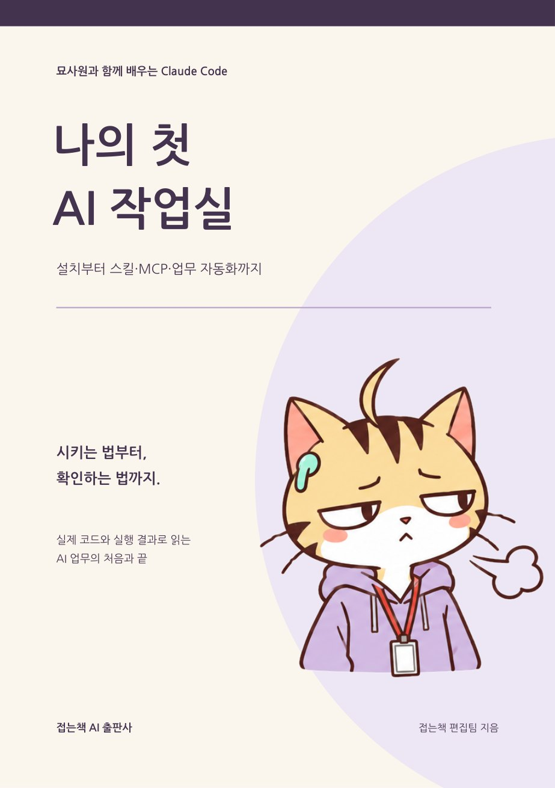
AI에게 맡겼다면, 결과까지 확인하세요.
판권
나의 첫 AI 작업실
묘사원과 함께 배우는 Claude Code 업무 자동화
지은이 접는책 AI 출판사 편집팀 (AI 작성·편집 보조, 사람이 방향과 발행을 결정)
펴낸곳 접는책 AI 출판사 (작업용 가칭)
판번호 v0.4.0 초판 편집 검토본
제작일 2026년 11월 2일
판형 A5 148×210mm (화면 읽기용 합본)
작성 환경 Windows 10 빌드 19045 / Python 3.11.15 / Claude Code 2.1.316
제품 설명 확인일 2026년 11월 2일 (공식 문서 목록은 책 끝에 있음)
본문 글꼴 나눔명조 / 제목 글꼴 나눔고딕 (SIL Open Font License)
캐릭터 묘대리는 「좌충우돌 묘대리의 투자생활백서」(그림 뭉선생)에서 왔고, 묘사원은 「묘대리의 블록사인 사용백서」의 등장인물이에요. 두 캐릭터 그림은 JOB-0018-python-book의 기존 제작 자산을 재사용했어요.
이 파일은 발행 전 편집 검토본이에요. 모델 응답, Google·MCP 연결, 예약 실행은 직접 실행하지 않았고, 실제 종이 인쇄와 독자 시험도 마치지 않았어요. 영상의 대본이나 화면을 옮겨 싣지 않았어요.
쪽 번호는 PDF의 쪽 번호와 같아요. 인쇄용 소책자 열세 권과 별책은 따로 있어요.
머리말
컴퓨터 앞에서 같은 일을 반복하다 보면 누구나 한 번쯤 “이걸 대신 해주면 좋겠다”고 생각해요. AI에게 일을 맡기는 도구는 그 바람을 조금 다른 방식으로 풀어줘요. 사람이 설명한 목적을 읽고 파일을 다루며 필요한 동작을 이어갈 수 있지요. 그런데 처음부터 큰 업무를 맡기면 무엇이 바뀌었는지 확인하기 어려워요. 그래서 이 책은 작은 결과를 만들고 다시 읽는 순서로 설명해요.
이 책은 작은 출판사의 안내문 한 장에서 시작해요. 문장이 화면에 나오는 것과 파일이 실제로 생기는 것이 어떻게 다른지, 반복되는 절차를 어떻게 남기고 다른 도구와 어떻게 연결하는지, 일을 나눌 때 무엇을 정해야 하는지를 한 가지 이야기로 이어서 따라가요. 명령을 외우기보다 무엇을 읽고 어떤 결과를 남기는지 이해하는 데 집중하면 좋아요.
안내자는 묘사원이에요. 조금 까칠하지만 설명은 건너뛰지 않아요. 왜 원본을 남기는지, 왜 결과 경로를 정하는지, 왜 저장된 초안과 실제 발송을 구분하는지 옆에서 한 가지씩 짚어줘요. 독자는 선배 묘대리와 함께 문서를 열고 코드를 읽으며 같은 상황을 다른 각도에서 보게 될 거예요.
이 책은 열세 권의 소책자로 나뉘어 있어요. 한 권은 하나의 장면으로 끝나고, 종이로 접어 묶을 수 있는 인쇄본도 따로 만들었어요. 지금 읽는 파일은 열세 권과 별책 부록을 한 권으로 묶은 화면 읽기용이에요. 쪽 번호는 처음부터 끝까지 이어져요.
화면과 코드는 출처와 성격을 구분했어요. 수록한 로컬 코드 열세 개는 실제로 실행했고, 실행 기록을 보는 브라우저 화면을 캡처했어요. 그 화면이 Claude Code의 대화 화면은 아니에요. 모델 응답, 계정 연결, 실제 예약 실행은 직접 확인하지 않았기 때문에 확인한 것처럼 꾸미지 않았어요. 제품의 기능 설명은 공식 문서에서 확인한 내용과 적용 조건을 바탕으로 읽어주세요.
이 책을 읽는 법
구성
본문은 열세 권이에요. 각 권 앞에는 권 번호와 제목을 알리는 속지가 있어요. 열세 권 뒤에는 맺음말과 별책 부록(막혔을 때 다시 펼쳐보는 이야기), 참고한 공식 자료, 찾아보기가 이어져요.
한 권의 흐름
각 권은 같은 순서로 흘러가요. 묘사원과 묘대리의 장면에서 시작해 원리를 네 개의 절로 설명하고, 이야기로 한 번 더 풀어요. 그다음 같은 원리를 작은 Python 코드로 확인하고, 실행 결과와 화면을 함께 읽어요. 마지막에는 다음 권으로 이어지는 말이 나와요.
읽는 순서
처음이라면 1권부터 차례로 읽는 편이 좋아요. 앞 권에서 만든 파일과 판단을 뒤 권이 이어서 쓰기 때문이에요. 이미 아는 부분이 있다면 차례에서 필요한 절을 골라 읽어도 돼요. 필요한 용어는 해당 권 안에서 다시 짚어요.
준비물
파일과 폴더를 다룰 수 있으면 충분해요. 터미널이 낯설어도 1권에서 처음부터 설명해요. 이 책의 로컬 코드는 Windows 10 빌드 19045 / Python 3.11.15 / Claude Code 2.1.316에서 실행했어요. 다른 버전에서는 화면이나 결과가 조금 다를 수 있어요.
코드와 화면
코드 상자는 실제 코드이고, 그 아래 상자는 실행해서 얻은 결과예요. 화면 그림은 실행 기록을 열어본 로컬 뷰어이고 Claude Code의 대화 화면이 아니에요. 모델이 응답하는 실습과 Google, MCP, 예약 실행은 직접 실행하지 않았어요.
등장인물
묘사원 후배 · 까칠한 신입 · 작업실 안내자
여성 고양이. 크림옐로 털, 정수리의 안테나 머리카락, 한쪽 귀의 민트색 이어폰, 라벤더 후드티와 사원증.
말투는 존댓말인데 늘 날카롭다. 설명은 정확하고, 마지막에는 꼭 도와준다.
입버릇 “그걸 아직도 손으로 해요?”
묘대리 선배 · 독자의 대리인 · AI에게 일을 맡겨 보는 쪽
원작 「좌충우돌 묘대리의 투자생활백서」의 주인공. 황토빛 털, 이마의 굵은 줄무늬 세 개, 큰 흰 주둥이, 흰 셔츠와 빨간 넥타이.
귀가 얇고 조급하다. 일을 맡기는 데는 빠르지만 결과를 확인하는 데는 서두르는 쪽.
입버릇 “나만 믿어~”
고양이는 둘뿐이에요. 키는 묘대리 머리 꼭대기가 묘사원 눈높이예요.
차례
아래에서 장면을 골라 이동해요. 쪽 번호 대신 장면과 절로 찾아가요.
- 표지와 판권
- 머리말
- 이 책을 읽는 법
- 차례
- 제1권 · AI 직원에게 일을 맡긴 첫날
- 제2권 · 안내문 한 장이 만들어지는 과정
- 제3권 · 시키는 말이 달라지면 일이 달라져요
- 제4권 · 매번 같은 말을 하지 않으려면
- 제5권 · 잘하던 일을 다시 쓰는 방법
- 제6권 · 틀린 곳을 찾는 것보다 중요한 일
- 제7권 · 밖에 있는 자료와 연결하기
- 제8권 · 메일과 문서가 한 흐름으로 이어질 때
- 제9권 · 메모가 쌓일수록 길을 만들어야 해요
- 제10권 · 짧게 말하는 것과 잘 맡기는 것
- 제11권 · 직함을 나누기 전에 일을 나누어요
- 제12권 · 내가 자는 동안에도 일하게 하려면
- 제13권 · 한 권의 결과로 묶는 날
- 맺음말
- 별책 부록 · 막혔을 때 다시 펼쳐보는 이야기
- 참고한 공식 자료
- 찾아보기
제1권 · AI 직원에게 일을 맡긴 첫날
“안내문 하나만 만들어주세요.” 묘대리는 그렇게 말하고 의자에 기대었어요. 잠시 뒤 화면에는 보기 좋은 문장이 나타났지요. 이제 끝났다고 생각했는데, 막상 공유할 파일을 찾으려니 아무것도 보이지 않았어요. 묘사원은 화면을 한 번 보고 말했어요. “선배, 문장이 나온 거랑 파일이 생긴 건 달라요.”
Claude Code를 처음 만날 때 낯선 것은 명령어만이 아니에요. 대화를 나누다가 프로그램이 파일을 읽고, 문서를 고치고, 명령을 실행한다는 점이 더 큰 변화예요. 채팅창에서 답을 읽을 때는 문장만 살펴봐도 됐지만, 실제 업무를 맡길 때는 어느 폴더를 읽고 어디에 결과를 쓰는지 알아야 해요. 같은 말을 했는데 다른 파일을 고쳤다면 의도한 작업이 아니니까요.
이 책에서는 작은 독서 모임의 안내문을 만들며 그 차이를 알아볼 거예요. 어려운 서비스를 한꺼번에 연결하기보다, 원본 자료 하나와 초안 하나를 놓고 시작해요. 어떤 자료를 줘야 하는지, 어떤 문장을 입력하는지, 결과는 어디에서 확인하는지 순서대로 살펴보면 긴 명령어를 외우지 않아도 작업의 구조가 보이기 시작해요.
묘사원은 앞서 있던 파일을 곧바로 덮어쓰지 않아요. 먼저 연습용 폴더를 만들고 그 안에서 문서를 다뤄요. 폴더를 따로 두면 실패해도 무엇을 바꿨는지 찾기 쉽고, 원본과 결과를 나란히 읽을 수 있거든요. 첫날의 목표는 거창한 자동화가 아니라, 내가 요청한 결과가 실제 파일로 남았다는 사실을 확인하는 데 있어요.
대화에서 작업으로
AI가 제안한 문장과 디스크에 저장된 파일은 서로 다른 결과예요. 이 책은 작은 출판사를 연습 사례로 삼아요. 요청, 초안, 검증, 결정의 네 칸을 구분하면 어디까지 수행됐는지 확인하기 쉬워요. Claude Code는 파일을 읽고 수정하거나 명령을 실행할 수 있으므로 작업 경로도 결과의 일부로 기록해요.
업무를 맡길 때 가장 먼저 정할 것은 AI의 직함보다 작업의 끝이에요.
안내문을 예로 들면 문장을 제안하는 단계, 파일을 저장하는 단계, 원본과 비교하는 단계, 외부에 게시하는 단계가 있어요. 같은 “작성”이라는 말로 이 네 단계를 묶으면 결과를 확인하기 어려워요. 이 책에서는 각 단계에 입력과 산출물의 경로를 붙이에요. 독자는 무엇을 만들었는지뿐 아니라 어느 파일을 열어 확인할 수 있는지도 알게 돼요.
요청과 초안, 검토와 결정은 서로 다른 일을 맡고 있어요. 초안은 내용을 만들고, 검토는 그 내용이 기준에 맞는지 살펴봐요. 공개 여부를 정하는 결정까지 구분하면 지금 어떤 결과를 받았는지 이해하기 쉬워요.
AI에게 이렇게 요청해요오늘은 소개문 초안까지만 만든다. 외부 발행은 하지 않는다. 먼저 필요한 입력과 예상 산출물을 알려줘.
안내문 작성 완료라는 보고는 받았지만 저장된 파일이 없어요. 내용을 제시했는지, 파일을 저장했는지, 저장된 경로가 무엇인지 나눠 물어야 해요. 대화에서 보인 문장만으로 디스크 저장을 확인할 수 없어요.
처음 보는 터미널을 천천히 읽어요
묘대리가 가장 먼저 멈춘 곳은 설치 버튼이 아니라 검은 창이었어요. 파일을 두 번 누르는 일에는 익숙했지만, 글자를 입력해서 프로그램을 실행하는 모습은 낯설었지요. 묘사원은 명령을 바로 붙여 넣지 않고 창의 맨 아래를 가리켰어요. “여기는 컴퓨터가 지금 어디에 있는지 보여주는 자리예요.”
터미널은 명령을 입력하고 결과를 읽는 창이에요. PowerShell은 그 창 안에서 명령을 해석하는 프로그램이고요. 두 말을 같은 뜻으로 쓰는 경우도 있지만, 처음에는 창과 그 안에서 일하는 해석기를 구분하면 좋아요. 이 책에 나오는 명령은 Windows의 PowerShell을 기준으로 설명해요. 다른 셸에서 비슷하게 보이는 창을 열었다고 같은 문법이 모두 통하는 것은 아니에요.
명령을 넣을 자리는 보통 현재 경로 뒤에 나타나요. 예를 들어 화면에 PS C:\work\ai-book-lab>라고 보인다면 PS는 PowerShell임을 알려주는 표시이고, 가운데 경로는 현재 작업하는 폴더예요. 마지막 > 뒤가 입력할 자리이지요. 책의 코드에 명령만 적혀 있다면 앞의 PS와 경로까지 따라 입력할 필요는 없어요. 화면의 안내 표시와 내가 입력할 내용을 나누어 읽는 것이 첫걸음이에요.
Get-LocationGet-Location은 현재 위치를 확인하는 명령이에요. 실행하면 경로가 표시돼요. 이 명령은 파일을 만들거나 문서 내용을 고치지 않아요. 처음 명령을 입력할 때는 이렇게 결과를 읽기만 하는 작은 동작으로 창에 익숙해져도 좋아요. 명령을 입력한 뒤 Enter를 누르면 프로그램이 실행되고, 끝나면 다음 명령을 넣을 자리가 다시 나타나요.
파일 탐색기에서 폴더를 연 것과 터미널의 현재 위치는 자동으로 같아지는 것이 아니에요. 탐색기는 안내문 폴더를 보여주는데 터미널은 다른 경로에서 실행될 수도 있어요. 그래서 “분명 여기 있었는데”라는 상황이 생기면 먼저 두 경로를 비교해요. 파일이 사라진 것이 아니라 서로 다른 폴더를 보고 있을 가능성도 있거든요.
Get-ChildItemGet-ChildItem은 현재 위치의 항목을 보여줘요. 폴더와 파일 이름, 크기나 시각 같은 정보를 읽을 수 있어요. 목록이 길어도 처음부터 모든 열을 이해할 필요는 없어요. 내가 예상한 input과 draft 폴더가 있는지, 읽으려는 event.md가 어느 폴더에 있는지부터 확인하면 돼요. 목록을 확인하는 습관은 AI에게 파일을 읽어달라고 요청하기 전에도 도움이 돼요.
내 컴퓨터의 환경 카드
다른 컴퓨터에서 같은 명령이 동작하려면 환경 차이를 먼저 알아야 해요. 운영체제 이름만으로는 셸과 앱 버전을 알 수 없어요. 이 판의 제작 확인 환경은 Windows 10 빌드 19045, PowerShell 5.1, Claude Code 2.1.316이에요. 독자의 값은 달라도 되지만 실제 값을 적어야 해요.
환경 기록은 오류가 생겼을 때 비교할 기준이에요.
Windows 버전과 PowerShell 버전, Claude Code 버전은 서로 다른 제품의 값이에요. 하나를 확인했다고 나머지까지 확인된 것은 아니에요. 특히 인터넷의 예전 명령을 가져왔을 때는 현재 프로그램의 도움말과 비교해야 해요. 명령이 인식되지 않는 경우에는 철자, 설치 여부, 새 터미널에서의 PATH 반영을 순서대로 살펴봐요. 오류를 없애려고 작업 폴더 전체를 바꿀 필요는 없어요.
먼저 PowerShell에서 $PSVersionTable.PSVersion을 확인해요. 그다음 claude --version을 실행해요. 마지막으로 명령이 없으면 설치 전 상태라고 적고 다음 절의 안내를 확인해요.
claude --version실행 파일의 버전은 확인됐지만 설치 기록과 계정 인증 상태는 서로 달라요. 성공하면 출력된 버전 문자열을 그대로 기록해요. 명령을 찾지 못했다면 버전을 추측하지 않고 미설치 또는 PATH 확인 필요라고 적어요.
경로를 주소처럼 읽으면 쉬워져요
경로는 파일이 있는 곳을 가리키는 주소예요. C:\work\ai-book-lab\input\event.md는 드라이브부터 파일까지 이어진 전체 주소이고, input\event.md는 현재 폴더에서 출발하는 짧은 주소예요. 긴 주소를 절대 경로, 현재 위치를 기준으로 읽는 주소를 상대 경로라고 불러요. 이름을 외우기보다 출발점이 들어 있는지 생각하면 이해하기 쉬워요.
상대 경로가 짧아서 편리한 대신 출발점이 달라지면 다른 대상을 가리켜요. 예를 들어 ai-book-lab에서 input\event.md를 읽으면 그 폴더 아래의 자료를 찾지만, 이미 input 안으로 들어간 상태라면 input이라는 하위 폴더를 다시 찾게 돼요. 같은 문자열을 입력했는데 파일을 못 찾는 이유가 될 수 있지요. 이런 때는 명령을 여러 번 바꾸기보다 현재 위치를 먼저 읽어보세요.
Set-Location -LiteralPath 'C:\work\ai-book-lab'위 경로는 설명용 예시예요. 독자의 컴퓨터에 실제로 있는 폴더 경로로 바꾸어야 해요. Set-Location은 작업 위치를 옮겨요. -LiteralPath는 전달한 경로를 그대로 해석하도록 지정하는 매개변수예요. 공백이 들어간 경로는 작은따옴표로 감싸면 하나의 값으로 전달하기 편해요. 경로를 바꾸었다면 Get-Location으로 한 번 더 읽어보면 돼요.
이 책은 작업 폴더를 옮긴다는 말과 파일을 옮긴다는 말을 구분해요. Set-Location으로 위치를 바꾸어도 파일 자체가 다른 폴더로 이동하는 것은 아니에요. 어디를 기준으로 다음 명령을 실행할지 바뀌는 것이지요. “폴더를 바꾼다”는 짧은 표현이 혼동되면 무엇이 실제로 달라지는지 다시 나누어 읽어보세요.
설치와 계정은 다른 단계
설치는 실행 파일을 준비하는 과정이고 인증은 서비스 이용 권한을 확인하는 과정이에요. 공식 안내의 현재 Windows 설치 방법을 확인한 뒤 진행해요. 설치가 끝났어도 계정이나 조직 정책 때문에 모델 사용이 제한될 수 있어요. 이 교재는 특정 요금이나 무료 이용을 보장하지 않아요.
설치 안내에서 복사한 명령은 해당 셸에 맞아야 해요.
PowerShell용 문장을 CMD에 그대로 넣으면 같은 컴퓨터에서도 동작이 달라져요. 설치가 끝난 뒤 새 터미널을 열라는 안내는 실행 파일을 찾는 환경이 갱신되는 시점을 고려한 것이에요. 설치와 로그인, 서비스 이용 가능 여부를 별도 단계로 확인하면 한 번 성공한 설치를 불필요하게 되풀이하지 않을 수 있어요. 조직 계정은 개인 계정과 정책이 다를 수 있으므로 자신의 접근 조건을 기록해요.
먼저 공식 설치 문서의 Windows 항목을 확인해요. 그다음 설치 방법 하나를 선택하고 새 터미널에서 버전을 확인해요. 마지막으로 claude를 시작해 인증 안내를 읽어요. 화면과 계정 정보는 공개 기록에서 제외해요.
winget install Anthropic.ClaudeCode설치와 버전 확인은 끝났지만 로그인 단계에서 멈췄습니다. 실행 파일은 준비됐지만 서비스 인증이 끝나지 않은 상태예요. 계정 접근 조건과 조직 안내를 확인해요. 같은 설치 명령을 반복할 근거는 아직 없어요.
버전 번호가 알려주는 것
claude --versionclaude는 실행할 프로그램의 이름이고 --version은 버전을 보여달라는 옵션이에요. 두 부분 사이에는 공백이 들어가요. 하이픈 두 개와 version의 철자도 그대로 입력해야 해요. 이 명령은 모델에게 질문을 보내는 요청이 아니라 설치된 프로그램의 버전을 읽는 명령이에요.
이 책의 제작 환경에서는 2.1.316 (Claude Code)라는 문자열을 확인했어요. 독자의 화면에 다른 번호가 나오는 것은 그 자체로 오류가 아니에요. 프로그램은 바뀔 수 있고 같은 문서라도 확인한 시점이 다를 수 있어요. 중요한 것은 번호를 책에 맞추어 적는 것이 아니라 실제 값을 알고 있는 것이에요. 나중에 옵션이 다르거나 화면 구성이 달라졌을 때 비교할 수 있거든요.
2.1.316 (Claude Code)“claude를 찾을 수 없다”는 메시지는 모델이 답하지 못했다는 뜻이 아니에요. PowerShell이 실행할 프로그램을 찾는 단계에서 멈춘 것이에요. 설치가 끝나지 않았거나, 설치 위치가 현재 터미널의 검색 경로에 반영되지 않았을 수 있어요. 철자를 확인하고 새 터미널에서 다시 버전을 읽어본 뒤 공식 설치 안내를 확인해요. 정확한 오류를 읽기 전에 API나 프롬프트부터 고칠 필요는 없어요.
반대로 버전이 표시됐다고 로그인과 서비스 이용까지 끝난 것은 아니에요. 실행 파일을 찾았다는 사실과 계정 인증이 끝났다는 사실은 달라요. 설치, 버전 확인, 프로그램 시작, 인증을 나누어 생각하면 어디에서 막혔는지 찾기 쉬워져요. 묘사원이 한 단계씩 멈춰 확인하는 이유가 여기에 있어요.
작은 연습 폴더
연습 파일을 실제 업무 폴더와 분리하면 결과를 비교하기 쉬워요. 폴더 이름은 ai-book-lab으로 정해요. input은 제공 자료, draft는 초안, review는 검수 기록을 담아요. 경로를 먼저 확인하는 습관은 잘못된 위치에 만든 파일을 찾아 헤매는 시간을 줄여요.
연습 폴더는 파일의 수보다 경계를 설명할 수 있는지가 중요해요.
input에는 제공받은 자료를 두고 draft에는 결과 초안을 둬요. review에는 비교 결과를 남겨요. 이 구조에서는 원본을 읽는 행동과 초안을 쓰는 행동을 문장으로 구분할 수 있어요. 폴더를 만들기 전에 현재 경로를 확인하고, 만든 뒤에는 다시 목록을 읽어요. 이름이 비슷한 다른 폴더를 열었다면 이후의 모든 결과가 다른 위치에 생길 수 있기 때문이에요.
먼저 새 빈 폴더 ai-book-lab을 만들어요. 그다음 그 안에 input, draft, review 하위 폴더를 만들어요. 마지막으로 터미널의 현재 위치를 확인하고 빈 폴더 목록을 기록해요.
AI에게 이렇게 요청해요현재 폴더의 경로와 하위 폴더 목록만 확인해줘. 파일은 만들거나 수정하지 마.
작업을 시작한 위치가 문서가 많은 바탕화면 폴더예요. 새 연습 폴더를 만들고 그 경로로 이동해요. 입력과 결과를 제한된 공간 안에서 구분할 수 있어야 원본 변경 여부를 확인하기 쉬워요.
도움말은 지금 설치된 프로그램의 설명서예요
claude --help--help는 사용 가능한 명령과 옵션을 읽는 출발점이에요. 화면에 많은 줄이 나타나더라도 처음에는 구조만 보면 돼요. Usage에는 실행 모양이, Options에는 선택할 수 있는 옵션이, Commands에는 하위 명령이 나오는 식이에요. 설명서의 대괄호는 선택 가능한 부분을 뜻하는 표기로 쓰이므로, 대괄호 자체를 명령에 모두 입력하라는 뜻으로 읽지 않도록 주의해요.
설치한 버전의 도움말에서 확인한 것과 인터넷 게시물의 설명이 다를 때는 먼저 시점과 버전을 비교해요. 프로그램이 바뀌면서 이름이나 지원 방식이 달라질 수 있어요. 이 책도 특정 화면을 영원히 같은 것으로 약속하지 않아요. 정확한 이름은 원문으로 남기고, 그 기능이 어떤 일을 하는지 문장으로 풀어 설명하는 이유예요.
claude --help와 claude mcp --help는 같은 범위의 도움말이 아니에요. 첫 번째는 프로그램 전체를 살펴보고, 두 번째는 MCP 관련 하위 명령을 살펴봐요. 큰 메뉴에서 작은 메뉴로 들어가는 것과 비슷해요. 아직 연결을 만들지 않았어도 도움말은 읽을 수 있으므로, 기능을 실행하는 일과 사용법을 확인하는 일을 나누어 볼 수 있어요.
claude mcp --help묘대리는 긴 도움말을 보자 전부 외워야 하는지 물었어요. 묘사원은 창을 닫지 않았어요. “필요할 때 다시 읽을 수 있으면 돼요. 지금은 실행할 이름과 확인할 결과를 구분하는 게 먼저예요.” 실제로 업무를 시작하는 데 필요한 명령은 많지 않아요. 지금 어디인지 확인하고, 프로그램을 찾을 수 있는지 확인하고, 필요한 기능의 도움말을 읽는 것부터 익숙해지면 돼요.
첫 세션에서는 폴더부터 설명해요
연습 폴더로 이동한 뒤 claude를 시작하면 프로그램은 계정이나 작업 공간에 관한 안내를 보여줄 수 있어요. 그 화면의 의미를 읽고 자신의 환경에 맞게 진행해야 해요. 이 책은 인증 정보를 대신 입력하거나 계정별 접근 조건을 같다고 가정하지 않아요. 인증이 필요한 화면에서 멈췄다면 아직 첫 작업을 실행한 상태가 아니라는 점만 구분해두면 돼요.
첫 요청은 결과물을 크게 만들기보다 현재 폴더를 설명하는 문장으로 시작할 수 있어요. “현재 폴더의 경로와 파일 목록을 확인하고 어떤 자료가 있는지 알려줘. 아직 수정하지 마.”처럼 읽을 대상과 멈출 지점을 함께 적는 것이지요. 반환된 설명을 내가 연 폴더와 비교하면 같은 작업 공간을 보고 있는지 확인할 수 있어요.
이때 모델이 말한 내용을 그대로 믿는 대신 실제 파일 탐색기나 목록과 대조해보세요. 예상하지 않은 파일 이름이 나오면 다른 위치를 보고 있거나 설명에 추정이 섞였을 수 있어요. 첫 대화에서 확인한 작은 불일치를 바로잡는 편이 나중에 여러 파일을 만든 뒤 정리하는 것보다 쉬워요.
처음부터 완벽한 요청을 쓸 필요는 없어요. 한 번에 한 가지 일을 맡기고 결과를 읽으며 다음 문장을 덧붙이면 돼요. 다만 “지금은 읽기만 한다”와 “이제 초안을 저장한다”는 경계는 분명히 해두는 편이 좋아요. 어떤 말이 실제 행동을 바꾸는지 느끼기 시작하면 터미널도 검은 창이 아니라 일을 주고받는 자리로 보이게 될 거예요.
처음부터 원래 업무 폴더를 열지 않은 이유
첫날 묘대리는 평소 사용하던 문서 폴더를 열려고 했어요. 지난 보고서와 사진, 거래처 자료가 한곳에 있었지요. 묘사원은 새 폴더에서 시작하자고 했어요. 자료가 많으면 AI가 더 잘 이해할 것 같지만 지금의 첫 작업에는 대부분 필요하지 않았거든요.
새 폴더에는 행사 자료 한 장만 넣었어요. 이 상태에서는 목록을 읽었을 때 어떤 이름이 나와야 하는지 사람이 알고 있어요. 예상하지 못한 파일이 나타나면 다른 경로를 보고 있다는 사실을 곧바로 알아차릴 수 있지요. 작게 시작하는 것은 실패의 영향을 줄이는 것뿐 아니라 결과를 이해하기 쉽게 만드는 일이에요.
묘대리는 폴더 이름을 바꾸어도 괜찮은지 물었어요. 이름 자체는 무엇이든 정할 수 있지만 요청과 파일 경로를 함께 맞추어야 해요. 책에서 ai-book-lab이라고 쓴 것은 설명을 일관되게 하기 위한 이름이에요. 실제로 없는 이름을 그대로 입력하면 해당 폴더가 자동으로 준비되는 것은 아니에요.
프로그램을 시작한 뒤에는 지금의 폴더를 읽기만 하도록 요청했어요. 파일을 만들라는 말은 아직 하지 않았지요. 반환된 목록을 실제 목록과 비교하고 같은 공간을 보고 있다는 것을 확인한 다음에 초안을 부탁했어요. 처음부터 많은 명령을 알아야 가능한 과정은 아니에요.
한 단계를 확인한 뒤 다음으로 넘어가면 대화도 쉬워져요. “왜 안 되죠?”라는 막연한 질문 대신 “현재 위치는 맞고 원본도 읽었는데 결과 파일을 못 찾겠어요”라고 말할 수 있어요. 어디까지 성공했는지 알고 있다는 사실이 다음 판단의 출발점이 돼요.
코드로 살펴보는 같은 원리
여기서는 앞의 원리를 작은 Python 프로그램으로 옮겨 보았어요. Claude Code 모델을 호출하는 코드는 아니고, 파일을 만들고 읽거나 자료를 비교하는 과정을 눈으로 확인하기 위한 보조 예제예요. 전체 파일과 실행 결과를 나란히 읽으면 자연어 요청과 정해진 프로그램의 역할이 어떻게 다른지 이해하는 데 도움이 돼요.
from pathlib import Path
import platform
import sys
root = Path("run") / "01-environment"
root.mkdir(parents=True, exist_ok=True)
info = {
"python": sys.version.split()[0],
"system": platform.system(),
"workspace": root.as_posix(),
}
for key, value in info.items():
print(f"{key}: {value}")
코드의 첫 줄은 Path를 가져와요. Path는 경로를 문자열처럼 길게 이어 붙이는 대신 파일과 폴더의 관계로 표현하게 도와줘요. root = Path("run") / "01-environment"에서 /는 이 코드 안에서 경로를 잇는 뜻으로 사용돼요. run 아래의 01-environment라는 위치를 나타내는 것이지요.
경로를 표현했다고 그 폴더가 실제로 생긴 것은 아니에요. 다음 줄의 mkdir가 폴더를 만드는 동작이에요. parents=True는 필요한 상위 폴더도 만들도록 하고 exist_ok=True는 이미 있는 폴더를 허용해요. 같은 예제를 다시 실행했을 때 폴더가 있다는 이유만으로 멈추지 않게 한 것이에요.
platform.system()은 현재 운영체제 종류를 읽어요. sys.version에는 Python 버전에 관한 문자열이 들어 있고 split()[0]은 공백으로 나뉜 첫 부분을 선택해요. 이 값은 Claude Code의 버전이 아니라 지금 이 Python 파일을 실행하는 프로그램의 버전이에요. 서로 다른 버전을 섞어 기록하지 않는 것이 중요해요.
info는 이름과 값을 묶은 사전이에요. python, system, workspace라는 이름을 붙이면 출력만 읽어도 각 값이 무엇을 뜻하는지 알 수 있어요. 값을 한 줄에 이어 붙이기보다 이름을 같이 보여주는 것은 나중에 기록을 다시 볼 때 도움이 돼요.
마지막 반복문은 사전의 항목을 하나씩 읽고 화면에 출력해요. f로 시작하는 문자열 안의 중괄호에는 실제 값이 들어가요. 실행 결과의 Python 번호와 Windows라는 이름은 여기서 읽어온 값이에요. workspace는 결과 폴더를 가리키는 상대 경로이므로 다른 컴퓨터의 절대 주소로 오해하지 않아요.
이 프로그램이 확인하는 것은 로컬 Python 실행 환경과 경로 준비예요. Claude Code의 로그인이나 모델 응답을 확인하지는 않아요. 같은 화면에 여러 버전이 나올 때 어떤 프로그램에서 읽은 값인지 나누어 보는 습관을 보여주는 작은 예제예요.
이 파일은 Python 3.11에서 실제로 실행했어요. 결과는 다음과 같아요. 긴 출력값은 판면에 맞춰 이어서 읽을 수 있게 표시했으며 원본 출력 파일도 함께 보존했어요.
python: 3.11.15
system: Windows
workspace: run/01-environment
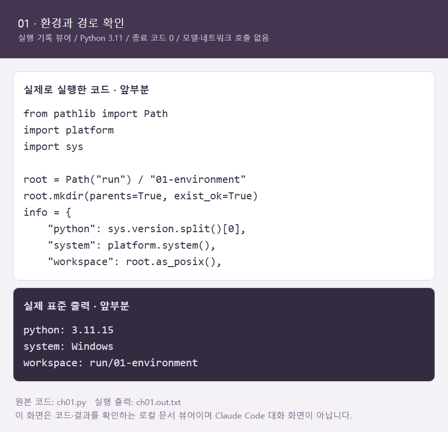
이제 다음 권의 이야기는 안내문 한 장이 만들어지는 과정로 이어져요. 지금까지 남긴 파일과 판단이 다음 단계에서 어떤 역할을 하는지 계속 살펴볼 거예요.
제2권 · 안내문 한 장이 만들어지는 과정
묘대리는 이번에는 행사 자료를 먼저 건넸어요. 날짜와 장소, 준비물은 적혀 있었지만 참가비 칸은 비어 있었지요. “빈칸은 알아서 채워주겠죠?” 묘사원은 고개를 저었어요. “모르는 건 모른다고 써야죠. 자연스럽게 지어내면 나중에 더 힘들어요.”
AI에게 자료를 준다는 것은 질문 끝에 긴 문서를 붙이는 일만 뜻하지 않아요. 어떤 문서를 사실의 기준으로 삼을지 정해주는 일이에요. 원본이 하나라면 초안의 날짜가 맞는지 확인하기 쉽지만, 서로 다른 버전의 자료가 섞여 있으면 어느 값을 따라야 하는지 모호해져요. 그래서 파일 이름과 역할을 먼저 설명해두는 편이 좋아요.
이 장에서는 input에 있는 행사 자료를 읽고 draft에 안내문을 만드는 순서를 따라가요. 저장이 끝난 뒤에는 파일을 다시 열어 읽어요. 화면에서 좋은 답을 봤다는 기억만으로는 저장된 내용까지 같다고 할 수 없기 때문이에요. 이렇게 한 번 읽고, 쓰고, 다시 읽는 과정이 익숙해지면 나중에 문서가 여러 장이 되어도 같은 원리로 확인할 수 있어요.
입력 자료 한 장
입력이 없으면 AI가 빈칸을 추측할 수 있어요. 연습 모임은 11월 7일 오후 2시, 작은도서관에서 열리며 준비물은 필기구예요. 이것은 실제 행사 정보가 아닌 교재용 가상 자료예요. 참가비는 알려지지 않았어요. 모르는 값은 빈칸으로 유지하는 연습을 해요.
자료를 제공할 때는 사실과 비어 있는 항목을 함께 적어요.
참가비가 없다는 말은 무료라는 뜻이 아니에요. 값이 전달되지 않았다는 뜻일 수 있어요. 따라서 원본에는 “확인 필요”라는 상태를 남기고 초안에도 그 상태가 이어지게 해요. 이 원칙을 지키면 초안을 읽는 사람이 무엇을 더 알아봐야 하는지 알 수 있어요. 날짜와 장소처럼 확정한 값은 원문과 비교할 수 있도록 한 곳에 모아둬요.
먼저 input/event.md에 가상 날짜·시간·장소·준비물을 적어요. 그다음 참가비는 확인 필요라고 적어요. 마지막으로 파일을 다시 열어 저장된 내용을 읽어요.
AI에게 이렇게 요청해요input/event.md를 읽고 확인된 사실과 확인이 필요한 항목을 분리해줘. 새 정보는 보태지 마.
자료에는 행사 일정만 있고 참가비와 문의 방법은 없어요. 참가 인원 제한과 문의 방법은 확인 질문으로 남길 수 있어요. 무료 행사라고 단정하거나 연락처를 창작하면 입력을 벗어나요.
모르는 사실을 빈칸으로 남기는 까닭
안내문은 짧지만 생각보다 많은 판단을 담고 있어요. 일정과 장소처럼 확정한 정보가 있고, 참가비와 문의 방법처럼 아직 정하지 않은 정보가 있지요. 문장을 자연스럽게 만들려다 보면 빈 항목을 채우고 싶어져요. 하지만 자료에 없는 값을 채운 순간 초안은 원본에서 확인할 수 없는 주장을 하게 돼요.
묘대리는 참가비 칸이 비었으니 무료라고 써도 되지 않느냐고 물었어요. 묘사원은 “무료라는 결정도 정보예요”라고 답했어요. 값이 전달되지 않은 상태와 값이 0원으로 정해진 상태는 달라요. 이 차이를 문서에서 남겨두면 다음 사람이 무엇을 물어봐야 하는지 알 수 있어요. 모른다는 표시가 문서의 결함을 숨기는 대신 해결할 곳을 드러내는 셈이에요.
그래서 원본 자료에는 미정 항목을 확인 필요로 적어요. 같은 표시를 초안에도 이어서 남기면 일정 정보는 쓸 수 있지만 발행 전에는 참가비를 확인해야 한다는 상태가 보여요. 초안은 완성되지 않은 문서일 수 있어요. 중요한 것은 어디가 미완성인지 읽는 사람이 알 수 있게 만드는 것이에요.
산출물의 주소 정하기
파일 결과를 요청할 때는 내용과 경로를 함께 정해요. notice.md는 파일 이름이고 draft/notice.md는 연습 폴더 기준 상대 경로예요. 같은 이름이 다른 폴더에 있을 수 있으므로 보고서에는 실제로 만든 경로를 남겨요.
상대 경로는 현재 작업 폴더를 기준으로 해석해요.
draft/notice.md라는 같은 문자열도 시작 폴더가 바뀌면 다른 파일을 가리켜요. 결과 보고에서 경로를 명시하는 이유가 여기에 있어요. 프로그램이 성공했다고 말해도 자신이 열어본 파일이 그 결과인지 확인해야 해요. 처음에는 복잡한 폴더 구조를 만들기보다 입력 하나와 결과 하나를 연결해 보는 편이 좋아요. 경로를 변경할 때는 요청서와 관련 링크도 함께 갱신해요.
먼저 출력 경로를 draft/notice.md로 정해요. 그다음 제목과 준비물 항목을 포함하도록 요청해요. 마지막으로 출력 파일을 직접 열고 날짜·장소를 원본과 비교해요.
AI에게 이렇게 요청해요input/event.md만 근거로 draft/notice.md를 작성해줘. 참가비는 확인 필요로 표시하고 결과 경로를 보고해줘.
내용이 맞는 초안이 정해진 경로가 아닌 다른 폴더에 저장됐습니다. 정해진 산출물 경로와 이름을 지키지 않았어요. 검수자는 어디서 결과를 읽는지 합의해야 하므로 경로 수정 또는 요청 변경 기록이 필요해요.
한 파일을 읽고 한 파일을 만들어요
ai-book-lab/
input/
event.md
draft/
notice.md
review/
notice-check.md이 구조에서 event.md는 사실의 기준이고 notice.md는 그 사실을 독자가 읽기 쉬운 문장으로 바꾼 초안이에요. notice-check.md는 둘을 비교한 메모이지요. 세 파일의 역할이 다르므로 초안의 문장이 마음에 들지 않는다고 event.md부터 고치지 않아요. 사실이 바뀐 것인지 표현만 고칠 것인지 먼저 나누어 보아야 해요.
파일 이름 뒤의 .md는 Markdown 문서를 나타내는 확장자예요. 이 책에서 Markdown을 사용하는 이유는 특별한 앱이 없어도 텍스트로 읽을 수 있고 제목과 목록을 간단하게 표현할 수 있기 때문이에요. 글꼴이나 색을 고르는 일보다 내용과 구조를 먼저 살펴볼 수 있다는 장점도 있어요.
# 독서 모임 자료
날짜: 2026-11-07
시간: 14:00
장소: 작은도서관
준비물: 필기구
참가비: 확인 필요
문의 방법: 확인 필요맨 위의 #은 제목을 표시해요. 날짜를 적은 줄에는 제목 기호가 없으므로 일반 본문으로 읽어요. 날짜를 이 형식으로 적는 것은 예제 안에서 값을 일관되게 비교하기 위해서예요. 실제 행사 자료는 자신이 사용하는 표기를 정하면 되지만, 여러 표현을 섞었을 때 같은 날짜인지 확인할 방법은 필요해요.
이 자료는 교재를 위해 만든 가상 행사예요. 실제 참가 신청이나 연락에 쓰는 정보가 아니에요. 연습에 실제 업무 자료를 쓰고 싶더라도 먼저 복사본을 만들고 공개되면 안 되는 값을 제거하는 편이 좋아요. 지금 필요한 것은 문서의 구조를 이해하는 것이지 실제 개인정보를 많이 넣는 것이 아니니까요.
요청 문장을 앞에서부터 풀어볼게요
“input/event.md만 근거로 draft/notice.md를 작성해줘. 참가비와 문의 방법은 확인 필요로 표시하고 결과 경로를 알려줘.” 이 문장을 한꺼번에 읽으면 평범한 부탁처럼 보이지만, 실제로는 몇 가지 조건이 들어 있어요. 첫 부분은 원본을 지정하고, 다음 부분은 만들 파일을 지정해요. 그 뒤에는 모르는 정보의 처리 방법과 결과를 보고하는 방법이 이어져요.
원본을 “그 자료”라고만 부르면 무엇을 읽어야 하는지 대화의 기억에 기대게 돼요. 파일 경로를 쓰면 확인할 대상이 분명해져요. 결과 경로도 같은 이유로 정해요. 초안을 만들었다고 했는데 어디에 있는지 다시 물어야 한다면 결과를 이어받는 일이 불편해져요. 이름과 위치를 요청에 함께 넣으면 그 불편을 줄일 수 있어요.
확인 필요라는 표현은 모르는 값을 처리하는 규칙이에요. 이 규칙이 없으면 AI가 일반적인 행사 안내를 참고해 문장을 채우려 할 수 있어요. 그럴듯한 문장과 이 행사에서 확인한 사실은 같지 않으므로, 이번 요청의 자료 안에서만 작성하도록 범위를 정해요. 이 원칙은 안내문뿐 아니라 견적서나 회의 요약에도 그대로 이어져요.
마지막에 결과 경로를 알려달라고 한 것은 내가 직접 열어볼 수 있게 하기 위해서예요. 결과 파일을 확인하는 주체가 AI만이어서는 안 돼요. 사람도 같은 문서를 열고 입력과 비교할 수 있어야 해요. 묘사원은 초안이 만들어지면 가장 먼저 그 경로부터 눌러보라고 이야기해요.
변경 전후 비교
수정을 요청하면 원문을 보존한 채 차이를 살펴봐요. 안내문에서 준비물 문구 하나를 고치는 과제에 장소와 날짜까지 바뀐다면 범위를 벗어난 수정이에요. 비교는 문장의 자연스러움뿐 아니라 바뀌지 않아야 할 사실도 확인해요.
변경 비교는 원문을 기억해서 하는 일이 아니에요.
수정 전 사본을 남기고 바뀐 부분을 나란히 읽어야 해요. 문체를 고치다가 사실이 바뀌는 오류는 문장만 읽으면 발견하기 어려워요. 원본 자료의 날짜·시간·장소를 기준으로 정리한 표가 있으면 비교가 쉬워져요. 수정 후에는 바꾼 문장뿐 아니라 그 문장이 속한 문단과 인접한 항목도 살펴봐요. 짧은 수정도 목록이나 제목을 사라지게 만들 수 있어요.
먼저 현재 초안을 notice-before.md로 별도 보관해요. 그다음 준비물 설명만 한 문장으로 고치도록 요청해요. 마지막으로 두 파일에서 바뀐 줄과 그대로인 정보를 기록해요.
AI에게 이렇게 요청해요준비물 문장만 읽기 쉽게 고쳐줘. 날짜·시간·장소와 파일 구조는 유지하고 변경 이유를 적어줘.
준비물 문구만 수정했는데 날짜도 달라졌습니다. 요청 밖 사실 변경이에요. 제공한 event.md와 수정 전 사본을 기준으로 날짜를 복구하고 다른 사실도 함께 비교해요.
저장한 문서를 다시 읽어요
처음에는 화면에 나타난 문장과 저장된 파일이 같은지 확인하는 것만으로도 충분해요. 한쪽에는 결과가 보이는데 다른 쪽에서는 예전 내용이 열릴 수 있거든요. 이름이 같은 파일이 다른 폴더에 있거나 저장이 아직 끝나지 않았거나, 내가 이전에 연 창을 그대로 보고 있을 수도 있어요.
PowerShell에서 내용을 읽을 때는 인코딩을 함께 지정할 수 있어요. 이 책의 문서는 UTF-8로 저장하므로 다음과 같이 읽어요. 경로는 실제로 초안이 저장된 연습 폴더를 기준으로 해야 해요.
Get-Content -LiteralPath '.\draft\notice.md' -Encoding UTF8Get-Content는 파일의 내용을 읽고, -LiteralPath는 대상 경로를 전달해요. -Encoding UTF8은 텍스트를 어떤 방식으로 해석할지 지정하는 부분이에요. 한글이 이상한 기호로 보일 때는 문장이 틀린 것이 아니라 저장과 읽기의 문자 해석 방식이 다른 경우도 있어요. 원본을 바로 고치기 전에 어느 방식으로 저장하고 읽었는지 확인해야 하는 이유예요.
읽은 문서에서는 날짜, 시간, 장소를 먼저 살펴봐요. 문장이 자연스럽게 이어지는지 보기 전에 원본 값이 유지됐는지 확인하는 것이 좋아요. “오후 두 시”와 “14:00”처럼 표현이 달라도 같은 의미일 수 있고, 글자 한 개만 달라도 다른 날짜가 될 수 있지요. 비교 기준을 알고 읽어야 작지만 중요한 차이를 놓치지 않아요.
끝났다는 증거
완료 보고에는 산출물과 확인 결과가 함께 있어야 해요. 파일이 존재함, 내용이 요청과 일치함, 외부 공개되지 않음은 서로 다른 확인 항목이에요. AI가 확인했다고 말한 내용도 실제 파일과 대조해요.
완료 보고는 다음 담당자가 결과를 이어받는 문서예요.
“문제없음”이라는 인상 대신 무엇을 읽고 비교했는지 써야 해요. 날짜를 대조했다면 비교한 두 파일을 적고, 참가비를 확인하지 못했다면 미확정이라고 적어요. 검수 결과와 발행 판단을 분리하면 초안의 기술적 완성과 외부 공개 여부가 섞이지 않아요. 파일이 만들어진 시각은 참고 자료일 뿐, 내용이 승인됐다는 근거는 아니에요.
먼저 파일 경로와 존재 여부를 확인해요. 그다음 날짜·시간·장소·미정 항목을 체크해요. 마지막으로 review/notice-check.md에 합격과 보류 사유를 남겨요.
AI에게 이렇게 요청해요작업 결과를 파일 경로, 확인한 항목, 확인하지 못한 항목, 다음 작업 순서로 보고해줘.
결과 보고에는 작성 완료라는 문장만 있고 확인 근거는 없어요. 예: draft/notice.md가 있어요. 날짜와 장소를 input/event.md와 비교했어요. 참가비와 문의 방법은 미확정이어서 발행을 보류해요. 실제 확인했을 때만 이렇게 기록해요.
표현을 고칠 때 사실을 같이 바꾸지 않아요
묘대리는 안내문이 딱딱해 보인다며 부드럽게 고쳐달라고 했어요. 문장을 읽어보니 어조는 좋아졌지만 시간까지 한 시간 늦어져 있었지요. 묘사원은 수정 전 사본을 열었어요. “고치라고 한 부분이 어디였는지 다시 보죠.”
표현 수정에서는 바꿀 부분과 유지할 부분을 함께 적는 편이 좋아요. 예를 들어 준비물 문장만 고칠 때는 날짜와 시간, 장소는 그대로 유지한다고 말할 수 있어요. 그렇다고 모든 다른 값이 절대로 바뀌지 않는다고 가정하지는 않아요. 요청은 의도를 전달하는 수단이고 실제 결과는 다시 읽어 확인해야 해요.
수정 전 문서를 별도 파일로 남겨두면 기억에 의존하지 않아도 돼요. 파일 이름에 before 같은 구분을 붙이거나 버전 기록을 사용할 수 있어요. 중요한 것은 어느 것이 이전 상태이고 어느 것이 현재 검토할 문서인지 알 수 있게 하는 것이에요. 이름에 final이 들어 있다고 그 파일이 정본이 되는 것은 아니에요.
notice-before.md 수정 전 보관본
notice.md 현재 검토할 초안
notice-check.md 비교한 항목과 남은 확인 사항두 초안을 비교할 때는 바뀐 문장만 읽지 말고 인접한 항목도 보세요. 목록을 다시 쓰면서 준비물이 빠졌을 수 있고, 제목을 정리하다가 일정 소제목이 사라졌을 수도 있어요. 한 줄 수정이 문서 전체에 어떤 영향을 주었는지 살펴보는 습관이 나중에 코드 변경을 확인할 때도 도움이 돼요.
초안, 검토본, 발행본은 이름표가 달라요
초안은 내용을 만들고 있는 문서이고 검토본은 확인할 대상으로 정해둔 문서예요. 발행본은 필요한 검토와 사람의 결정을 거쳐 밖으로 나가는 문서이고요. 같은 파일을 사용하더라도 상태를 구분해 말하면 다음 사람이 무엇을 해도 되는지 알 수 있어요.
안내문이 잘 읽힌다고 바로 공개할 수 있는 것은 아니에요. 참가비나 문의 방법이 아직 미정이면 사람의 결정이 필요해요. 반대로 외부 발행을 하지 않았다고 초안 작성 자체가 실패한 것도 아니에요. 어느 단계까지 끝냈는지 구분해두면 중간 결과를 유용하게 사용할 수 있어요.
묘사원은 마지막 문장을 조금 바꾸어 쓰게 했어요. “완료했습니다” 대신 “초안은 저장됐고 일정은 원본과 비교했어요. 참가비와 문의 방법은 아직 확인이 필요해요”라고요. 독자는 이 문장만 읽어도 지금 무엇을 받을 수 있고 다음에 무엇을 정해야 하는지 알 수 있어요. 일을 맡기는 문장만큼 일을 넘기는 문장도 구체적이어야 하는 까닭이에요.
문의 방법이 아직 정해지지 않은 안내문
안내문 초안의 마지막 줄에는 확인 필요라는 표현이 두 군데 남아 있었어요. 묘대리는 보기 좋지 않으니 지우자고 했지요. 묘사원은 먼저 그 값이 정해졌는지 물었어요. 참가비와 문의 방법을 모르는 상태는 문장을 다듬는다고 없어지지 않았어요.
초안에는 그 표시를 남겨두고 발행인이 결정할 항목으로 전달했어요. 이때 안내문 전체가 쓸모없는 것은 아니에요. 일정과 장소, 준비물은 이미 설명할 수 있고 남은 두 항목만 확인하면 돼요. 문서의 어느 부분을 사용할 수 있는지 나누어 보면 다음 일이 분명해져요.
발행인이 문의 방법을 정한 뒤에는 원본 행사 자료부터 갱신했어요. 초안 한 줄만 고치면 다음 답장이나 발표 자료를 만들 때 예전 원본을 읽을 수 있기 때문이에요. 사실의 기준을 먼저 바꾸고 그 값을 사용한 결과를 다시 확인하는 순서예요.
그다음 초안의 마지막 항목을 고쳤어요. 날짜와 장소를 새로 바꾸어달라고 요청하지는 않았어요. 수정 범위를 문의 방법으로 제한하고 저장된 파일을 다시 열었지요. 고친 항목이 반영됐는지와 다른 사실이 유지됐는지를 함께 읽었어요.
이 과정은 큰 자동화가 아니지만 한 원천에서 여러 결과를 관리하는 원리를 보여줘요. 같은 행사 정보를 안내문과 답장, 회의 문서에 사용할 때도 기준을 하나로 두고 바뀐 정보를 따라가면 돼요. 빈칸을 숨기지 않았기 때문에 결정이 내려진 뒤 어디를 고칠지도 알 수 있었어요.
코드로 살펴보는 같은 원리
여기서는 앞의 원리를 작은 Python 프로그램으로 옮겨 보았어요. Claude Code 모델을 호출하는 코드는 아니고, 파일을 만들고 읽거나 자료를 비교하는 과정을 눈으로 확인하기 위한 보조 예제예요. 전체 파일과 실행 결과를 나란히 읽으면 자연어 요청과 정해진 프로그램의 역할이 어떻게 다른지 이해하는 데 도움이 돼요.
from pathlib import Path
import json
root = Path("run") / "02-draft"
root.mkdir(parents=True, exist_ok=True)
event = {"date": "2026-11-07", "time": "14:00",
"place": "작은도서관", "fee": "확인 필요"}
source = root / "event.json"
source.write_text(json.dumps(event, ensure_ascii=False),
encoding="utf-8")
data = json.loads(source.read_text(encoding="utf-8"))
text = (f"# 독서 모임 안내\n\n날짜: {data['date']}\n"
f"시간: {data['time']}\n장소: {data['place']}\n"
f"참가비: {data['fee']}\n")
target = root / "notice.md"
target.write_text(text, encoding="utf-8")
assert target.read_text(encoding="utf-8") == text
print(text)
print("saved:", target.as_posix())
두 번째 프로그램은 사람이 정한 행사 값을 event라는 사전에 넣는 데서 시작해요. 이 값들은 실제 행사의 정보가 아니라 책에서 사용하는 가상 자료예요. date와 time, place와 fee처럼 이름을 붙여두면 각각을 문서의 어느 위치에 넣을지 설명하기 쉬워요.
json.dumps는 사전의 값을 JSON 텍스트로 바꾸어요. ensure_ascii=False는 한글을 사람이 읽을 수 있는 형태로 남기도록 지정한 것이에요. 그 문자열을 write_text로 저장하고 encoding="utf-8"을 붙였어요. 파일로 쓰는 단계와 메모리에 있는 값을 구분해서 볼 수 있지요.
저장한 파일은 다시 read_text로 읽고 json.loads로 자료 구조로 바꾸어요. 단순해 보이지만 입력 파일을 실제로 읽는 경계를 보여주는 부분이에요. 처음의 event만 계속 사용하면 저장된 파일이 맞는지 확인하지 않고도 문서를 만들 수 있어요. 여기서는 원천 파일을 읽는 과정을 코드에 분명히 남겼어요.
text를 만드는 줄은 정해진 서식 안에 값을 넣어요. data["date"]처럼 이름으로 값을 꺼내고 줄바꿈 기호를 이어 문서를 만들어요. 모델이 새로운 표현을 고른 것이 아니라 프로그램이 정한 문장에 값을 넣는 방식이에요. 이런 방식은 구조와 값이 정해진 짧은 문서를 만드는 원리를 이해하기 좋아요.
target은 초안을 저장할 경로예요. 저장 뒤 assert로 다시 읽은 텍스트가 원래 문자열과 같은지 확인해요. 이 검사가 통과하면 이 코드의 문자 저장과 재읽기가 기대한 관계를 만족했다는 뜻이에요. 행사 정보 자체가 실제로 맞는지까지 보증하는 것은 아니에요.
표준 출력에는 만든 문서와 저장 경로가 나와요. 사람이 문서의 값을 살펴보고 파일이 어디에 남았는지도 알 수 있어요. 문서 내용과 결과 주소를 함께 전달하는 구조가, 앞에서 자연어로 요청했던 방식과 이어지는 부분이에요.
이 파일은 Python 3.11에서 실제로 실행했어요. 결과는 다음과 같아요. 긴 출력값은 판면에 맞춰 이어서 읽을 수 있게 표시했으며 원본 출력 파일도 함께 보존했어요.
# 독서 모임 안내
날짜: 2026-11-07
시간: 14:00
장소: 작은도서관
참가비: 확인 필요
saved: run/02-draft/notice.md
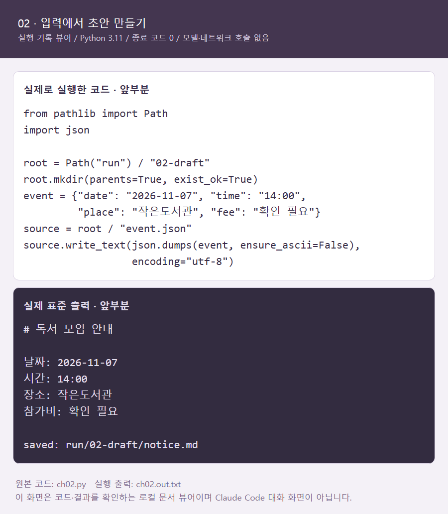
이제 다음 권의 이야기는 시키는 말이 달라지면 일이 달라져요로 이어져요. 지금까지 남긴 파일과 판단이 다음 단계에서 어떤 역할을 하는지 계속 살펴볼 거예요.
제3권 · 시키는 말이 달라지면 일이 달라져요
“좀 더 전문적으로요.” 묘대리는 초안을 읽을 때마다 같은 말을 덧붙였어요. 문장은 점점 길어졌지만 날짜를 찾기는 오히려 어려워졌지요. 묘사원은 초안을 접어두고 먼저 물었어요. “이걸 읽은 사람이 뭘 하면 되는 건데요?”
좋은 요청은 멋진 표현을 많이 붙이는 문장이 아니에요. 읽는 사람과 해야 할 행동을 알려주는 문장이에요. 처음 참가하는 사람에게 필요한 것은 행사 이름, 날짜, 장소, 준비물이겠지요. 그 정보를 찾을 수 있게 만들겠다는 목표가 있으면 어떤 문장을 줄이고 어떤 항목을 남겨야 하는지도 결정하기 쉬워져요.
한 번에 모든 일을 맡길 필요도 없어요. 안내문을 쓰는 일과 공개하는 일 사이에는 검토가 있어요. 초안을 먼저 받아보고 사실과 표현을 확인한 뒤 다음 단계로 넘기면 돼요. 요청을 작은 산출물로 나누는 것은 AI를 불신해서가 아니라, 내가 원하는 결과를 알아보기 쉬운 크기로 만드는 일이에요.
행동으로 쓰는 목표
“좋은 글”은 평가자마다 뜻이 달라요. “처음 오는 독자가 날짜와 준비물을 찾을 수 있는 안내문”은 확인할 행동이 있어요. 목표를 독자의 행동으로 바꾸면 말투보다 먼저 챙겨야 할 정보가 보여요.
좋은 요청은 장식적인 수식어를 행동으로 바꿔요.
“깔끔한 안내문”보다는 “일정과 준비물을 다른 소제목으로 나눈 안내문”이 확인하기 쉬워요. 독자가 누구인지에 따라 필요한 설명도 달라져요. 처음 참가하는 사람에게는 장소를 찾는 정보가 필요하고, 이미 참가한 사람에게는 변경 사항이 중요할 수 있어요. 목표 독자와 읽은 뒤의 행동을 먼저 정하면 불필요한 문장을 덜어내는 기준이 생겨요.
먼저 누가 읽는지 정해요. 그다음 읽고 나서 할 행동을 한 문장으로 적어요. 마지막으로 그 행동에 필요한 정보만 남겨요.
AI에게 이렇게 요청해요독자는 첫 참가자다. 날짜·장소·준비물을 10초 안에 찾을 수 있는 안내문 초안을 제안해줘.
요청서의 목표는 전문적으로 보이는 글이라는 표현뿐이에요. 제목과 일정 정보가 구분되는지, 준비물이 목록으로 있는지처럼 문서에서 관찰할 수 있는 기준으로 바꿔요. 전문성이라는 인상만 점수화하지 않아요.
부탁 한 문장에도 역할이 있어요
묘대리는 처음에 AI에게 자신이 원하는 기분을 설명했어요. 깔끔하고 전문적이고 친절한 글이면 좋겠다는 것이었지요. 그런데 막상 결과가 나오면 무엇이 좋아졌는지 말하기 어려웠어요. 묘사원은 목표를 조금 바꾸어 적었어요. “처음 오는 사람이 일정과 준비물을 찾을 수 있게.” 그제야 남겨야 할 정보가 보이기 시작했어요.
좋은 요청에는 목적, 입력, 범위, 결과가 들어 있어요. 네 가지를 외워서 매번 긴 양식으로 쓸 필요는 없어요. 지금 부탁하는 문장에 빠진 것이 무엇인지 살펴보는 도구로 생각하면 돼요. 무엇을 위해 하는지, 무엇을 읽어야 하는지, 어디까지 해도 되는지, 무엇을 남겨야 하는지를 설명할 수 있다면 상대가 일을 이해할 가능성이 높아져요.
“행사 안내문을 잘 써줘”라는 문장에는 목적이 대략 들어 있지만 입력과 결과의 위치는 없어요. “input/event.md를 읽고 draft/notice.md를 만들어줘”라고 바꾸면 파일은 분명해지지만 누가 읽는 문서인지는 여전히 모호할 수 있어요. “처음 참가하는 성인이 날짜와 준비물을 쉽게 찾을 수 있게”라는 설명을 더하면 구성의 기준이 생겨요.
여기에 “자료에 없는 값은 확인 필요로 남겨줘”를 붙이면 빈 정보의 처리 방법이 정해져요. “이번에는 초안까지만 만들고 공개하지 마”를 붙이면 실행의 끝도 분명해지고요. 이렇게 필요한 부분을 한 줄씩 더하면 돼요. 꼭 어려운 프롬프트 기법의 이름을 붙이지 않아도, 내가 검토할 수 있는 요청을 만들 수 있어요.
범위를 작게 나누기
모임 홍보 전체를 한 번에 맡기면 안내문과 게시, 응답 처리의 경계가 흐려져요. 첫 과제는 입력 한 개와 초안 한 개로 제한해요. 다음 단계는 검토가 끝난 뒤 별도 요청해요.
큰 업무를 나누는 기준은 산출물의 검토 가능성이에요.
초안을 만든 뒤 검수할 수 있는 지점이 하나의 경계가 돼요. 검수가 끝나지 않았는데 게시까지 한꺼번에 진행하면 오류를 발견했을 때 되돌릴 작업이 늘어나요. 작은 단계마다 결과를 저장하면 실패한 부분부터 다시 확인할 수 있어요. 단계가 너무 잘게 나뉘어 관리만 늘어난다면 인접한 내부 작업을 묶되, 외부 효과가 생기는 경계는 명시해요.
먼저 전체 일을 초안·검수·공개로 나눠요. 그다음 첫 요청에서 초안만 선택해요. 마지막으로 다음 단계로 넘길 조건을 적어요.
AI에게 이렇게 요청해요이번 작업은 초안 작성까지만 한다. 게시·전송은 하지 말고 확인이 필요한 사실을 별도 목록으로 남겨줘.
안내문 초안 작성 뒤 곧바로 게시하겠다는 제안이 나왔습니다. 공개는 현재 범위 밖이라고 알리고 내부 초안과 미정 항목을 먼저 요청해요. 제작 완료와 외부 발행 결정은 분리해요.
한 번에 모든 일을 말하지 않아도 돼요
일을 작게 나누는 기준은 문장의 길이가 아니에요. 결과를 확인할 수 있는 지점이에요. 자료를 정리하고 초안을 만드는 일은 한 흐름으로 묶을 수 있어도, 초안을 만든 뒤 외부에 게시하는 일에는 검토라는 경계가 있지요. 그 경계를 남겨두면 잘못된 내용을 발견했을 때 내부에서 고칠 수 있어요.
묘대리는 안내문, 답장, 발표 자료까지 한 번에 만들면 더 빠르지 않느냐고 물었어요. 묘사원은 먼저 안내문의 일정부터 확인했어요. 날짜가 틀렸다면 세 문서가 모두 같은 오류를 나눠 가지게 될 수 있거든요. 원천 자료와 첫 산출물을 확인한 뒤 다음 형식으로 확장하면 반복 오류를 줄이는 데 도움이 돼요.
일을 너무 잘게 나누어도 불편할 수 있어요. 제목을 만드는 일과 본문 첫 문장을 만드는 일을 매번 따로 맡기면 인계만 많아져요. 그래서 보통은 사람이 결과를 검토할 수 있는 문서 한 개, 변경 묶음 한 개를 기준으로 나누면 이해하기 쉬워요. “초안 한 파일을 받고 확인한다”는 크기에서 시작해 업무에 맞게 조정하면 돼요.
파일을 읽으라는 말과 바꾸라는 말
“이 문서를 봐줘”는 생각보다 모호한 부탁이에요. 내용만 설명해달라는 것인지, 오류를 찾으라는 것인지, 직접 수정하라는 것인지 여러 해석이 가능해요. 처음에는 동사를 바꾸어 써보면 좋아요. 읽고 요약하기, 비교해서 차이 보고하기, 정해진 항목만 수정하기는 서로 다른 작업이에요.
읽기만 원하는 상황에서는 산출물도 대화의 설명이나 별도 검토 메모로 정할 수 있어요. 예를 들어 “원본과 초안을 비교하고 차이만 알려줘. 아직 원고는 고치지 마”라고 쓸 수 있지요. 수정이 필요하다고 판단한 뒤에는 “시간 항목을 원본과 같게 고쳐줘”라고 다음 요청을 이어가요.
이렇게 두 단계로 나누면 내가 생각한 문제와 실제로 바뀐 내용이 맞는지 확인하기 쉬워져요. AI가 고치기 전에 어떤 점이 잘못됐다고 판단했는지 볼 수 있으니까요. 작은 오탈자처럼 영향이 분명한 변경은 곧바로 고칠 수도 있지만, 처음 다루는 업무에서는 읽기와 수정을 나누는 방식이 좋은 출발점이에요.
출력 형식 합의
같은 내용도 문단, 표, JSON에 따라 검수 방법이 달라져요. 사람이 읽을 안내문은 Markdown으로, 프로그램이 셀 데이터를 읽을 때는 정해진 열 구조로 받아요. 형식은 작업을 받는 사람이 사용할 방법에 맞춰요.
출력 형식을 예시로 보여주면 빠진 필드를 발견하기 쉬워요.
다만 예시의 날짜나 이름이 실제 값으로 오인되지 않도록 구분해야 해요. 형식 예시에는 항목 이름을 쓰고 실제 값은 입력 자료에서 가져오게 하는 편이 분명해요. 표가 필요하다면 열의 이름과 순서를 정하고 빈값의 표기 방법도 설명해요. 사람이 읽는 문서와 프로그램이 처리하는 데이터는 형식 오류의 영향이 다르므로 결과의 사용처를 먼저 밝혀요.
먼저 결과를 받을 사람과 도구를 정해요. 그다음 필수 제목과 필드를 나열해요. 마지막으로 짧은 예시 하나로 기대 형식을 보여준다.
AI에게 이렇게 요청해요결과는 Markdown으로 작성해줘. 제목, 일정, 준비물, 확인 필요의 네 항목을 이 순서로 포함해줘.
명단 표가 필요한 업무에 긴 설명문이 도착했습니다. 값이 맞을 수 있어도 지정 열 구조를 지키지 않은 형식 오류예요. 이름·참석 여부·메모 열로 다시 요청하고 누락 여부를 검토해요.
계획은 결과 파일의 약도가 될 수 있어요
새로운 일을 맡길 때 곧바로 수정하기보다 어떤 순서로 할지 먼저 설명하게 할 수 있어요. 이때 계획이 길고 보기 좋다는 이유만으로 승인하지는 않아요. 필요한 입력과 만들 파일, 확인 방법이 들어 있는지 읽어보세요. 계획은 나중에 실제 결과와 비교할 수 있어야 해요.
Claude Code에는 계획을 검토하며 작업하는 방식과 관련된 옵션이 있어요. 이 책의 제작 환경에서 읽은 도움말에는 --permission-mode 옵션과 plan 값이 있었어요. 옵션의 이름은 설치 버전의 도움말과 공식 문서에서 확인한 뒤 사용해야 해요. 계획 모드라는 이름만 보고 모든 동작이 자동으로 검증된다고 해석하지는 않아요.
claude --permission-mode plan위 명령은 계획 방식을 살펴보기 위한 실행 예시예요. 실제 계정과 세션에서의 동작은 별도로 확인해야 해요. 여기서 중요한 것은 프로그램의 특정 모드보다, 실행 전에 어떤 변경을 하려는지 읽을 수 있는 기회를 만드는 것이에요. 계획이 내가 원한 범위와 다르면 실제 파일을 고치기 전에 요청을 정리할 수 있어요.
계획에 등장한 파일 이름도 살펴보세요. 내가 준 자료와 다른 파일을 기준으로 삼고 있거나 새 폴더를 불필요하게 많이 만들려고 한다면 이유를 물을 수 있어요. 단순한 안내문인데 계정 연결과 공개 사이트 배포까지 포함돼 있다면 이번 범위에 필요한지 다시 판단해야 해요.
종료 조건 만들기
완료 기준이 없으면 작은 수정을 계속 반복하기 쉬워요. 사실 일치, 미정 표시, 산출물 경로 확인을 이번 작업의 종료 조건으로 둬요. 더 나은 표현 아이디어는 후속 개선 목록에 보존해요.
종료 조건은 원하는 품질을 포기하는 장치가 아니라 확인할 순서를 정하는 장치예요.
필수 사실이 맞는지, 알 수 없는 값이 표시돼 있는지, 정해진 경로에 저장됐는지를 통과 조건으로 둘 수 있어요. 그 뒤 떠오른 새로운 아이디어는 다음 작업 목록에 남겨요. 이렇게 하면 이미 확인한 결과를 끝없이 다시 고치다가 새로운 오류를 만드는 일을 줄일 수 있어요. 추가 변경을 한다면 기존 검수의 어느 부분을 다시 해야 하는지도 적어요.
먼저 반드시 통과할 조건 세 개를 적어요. 그다음 조건별 확인 방법을 하나씩 붙인다. 마지막으로 통과 후 추가 아이디어는 별도 목록으로 옮긴다.
AI에게 이렇게 요청해요세 조건이 충족되면 작업을 끝내고 추가 제안은 후속 목록으로 분리해줘. 충족 여부와 증거를 보고해줘.
필수 정보는 맞지만 새로운 색상 제안 때문에 수정을 반복하고 있어요. 색상이 합의된 필수 조건이 아니었다면 현재 작업은 종료할 수 있어요. 필요하면 별도의 디자인 검토 과제를 만들고 기존 완료를 되돌리지 않아요.
같은 내용도 결과 형식에 따라 달라져요
묘대리는 명단을 표로 받고 싶었는데 긴 설명문을 받았어요. 내용이 다 들어 있으니 괜찮다고 생각했지만, 다음 프로그램으로 옮기려니 이름과 참석 여부를 다시 골라야 했지요. 이처럼 결과를 어디에 쓸지는 형식을 정하는 중요한 조건이에요.
사람이 읽는 안내문에는 제목과 소제목, 짧은 문단이 편해요. 여러 항목을 비교하는 명단에는 표가 더 적합할 수 있고요. 프로그램이 데이터를 읽을 때는 정해진 키가 있는 JSON 같은 형식이 도움이 돼요. 어느 형식이 언제나 우월한 것이 아니라, 결과를 사용하는 방법에 맞게 고르는 것이에요.
{
"title": "독서 모임",
"date": "2026-11-07",
"time": "14:00",
"place": "작은도서관",
"fee": null
}이 예시에서 fee의 null은 문장 “무료”와 달라요. 값이 채워지지 않았다는 상태를 표현하기 위해 사용했어요. 다만 null의 뜻은 데이터를 받는 쪽과 약속해야 해요. 어떤 프로그램은 값이 없다고 해석하고, 다른 문서에서는 해당 없음과 미확정을 나누어야 할 수도 있거든요. 형식을 정할 때 빈값의 의미도 함께 정하는 이유예요.
형식 예시는 복사하기 쉽게 보여줄 수 있지만 실제 값과 섞이지 않게 해야 해요. 예시 날짜를 보여주면서 “날짜는 입력 파일에서 가져온다”는 설명이 빠지면 그 값을 그대로 사용하게 만들 수 있어요. 문서의 모양과 자료의 근거는 별도로 설명하는 편이 분명해요.
멈출 때를 정하면 결과가 남아요
업무가 끝나지 않는 이유가 꼭 결과가 나빠서만은 아니에요. 무엇을 통과하면 끝낼지 정하지 않았기 때문일 수도 있어요. 문장을 조금 더 부드럽게, 제목을 조금 더 눈에 띄게 바꾸다 보면 이미 확인한 날짜가 다시 달라지기도 하지요. 마지막을 정하는 것은 품질을 포기하는 것이 아니라 필요한 확인을 완료하는 일이에요.
안내문에서는 날짜와 장소가 원본과 같고, 미정 항목이 표시돼 있으며, 지정 경로에 저장됐으면 초안 작성 단계를 끝낼 수 있어요. 그다음 표현 개선이나 디자인은 다른 검토로 남길 수 있지요. 새로운 변경을 선택한다면 어떤 항목을 다시 확인해야 하는지도 생각해요. 날짜를 건드리지 않는 레이아웃 변경이라도 본문이 잘리지 않았는지는 다시 봐야 하니까요.
묘사원은 요청서의 마지막 줄을 짧게 고쳤어요. “이 세 조건을 확인한 뒤 초안을 전달해줘.” 길게 칭찬받는 답보다 다음 단계로 넘길 수 있는 파일이 중요했어요. AI와 일을 한다는 것도 결국 상대가 어디까지 하면 되는지 이해하고, 내가 그 결과를 알아볼 수 있게 만드는 과정이에요.
독자를 한 사람 떠올리면 설명이 달라져요
묘대리가 처음 만든 요청에는 모든 사람이 쉽게 이해하는 안내문이라는 말이 있었어요. 묘사원은 실제로 누가 처음 이 문서를 읽을지 한 사람을 떠올려보자고 했지요. 행사에 한 번도 오지 않은 성인이 휴대전화로 안내문을 읽는 장면을 생각했어요.
그 장면에서는 제목을 멋지게 쓰는 것보다 시간과 장소를 빨리 찾는 것이 중요했어요. 준비물을 읽고 바로 챙길 수 있어야 했고, 모르는 것이 있으면 어디에 문의할지 알아야 했지요. 요청의 목적을 구체적인 행동으로 바꾸자 문서에 필요한 항목이 보였어요.
이제 AI에게는 처음 참가하는 독자를 설명하고 일정과 준비물을 분리해달라고 말했어요. 여러 정보를 한 문장에 넣기보다 소제목으로 나누도록 요청했지요. 결과를 읽을 때도 같은 기준을 사용했어요. 원했던 정보를 독자가 찾기 쉬운지 살펴본 것이에요.
이 방식은 독자의 능력을 낮게 보는 것이 아니에요. 읽는 상황과 해야 할 일을 존중하는 방법이에요. 이미 행사를 아는 직원에게 보내는 내부 메모라면 바뀐 내용만 강조하는 편이 나을 수 있어요. 같은 원본으로도 결과의 구성이 달라지는 이유예요.
좋은 요청의 길이는 상황에 따라 달라져요. 단순한 수정에는 한 문장이면 충분할 수 있어요. 낯선 독자에게 새 문서를 쓰는 일이라면 설명이 조금 더 필요할 수 있고요. 길거나 짧다는 기준보다 상대가 결과를 이해할 정보를 가졌는지가 중요해요.
코드로 살펴보는 같은 원리
여기서는 앞의 원리를 작은 Python 프로그램으로 옮겨 보았어요. Claude Code 모델을 호출하는 코드는 아니고, 파일을 만들고 읽거나 자료를 비교하는 과정을 눈으로 확인하기 위한 보조 예제예요. 전체 파일과 실행 결과를 나란히 읽으면 자연어 요청과 정해진 프로그램의 역할이 어떻게 다른지 이해하는 데 도움이 돼요.
import json
request = {
"goal": "가상 독서 모임 안내문 초안",
"input": "input/event.md",
"output": "draft/notice.md",
"checks": ["날짜 일치", "장소 일치", "미정 표시"],
"external_action": False,
}
required = ["goal", "input", "output", "checks"]
missing = [key for key in required if not request.get(key)]
if missing:
raise ValueError(f"missing fields: {missing}")
print(json.dumps(request, ensure_ascii=False, indent=2))
print("required fields: OK")
요청서도 이름과 값을 가진 자료로 표현할 수 있어요. goal은 목적, input은 읽을 파일, output은 만들 파일을 뜻하도록 정했어요. 이 이름들은 예제에서 정한 약속이며 Claude Code가 자동으로 인식하는 모든 요청서의 필수 문법이라는 뜻은 아니에요.
checks에는 이번 초안에서 확인할 세 가지를 목록으로 넣었어요. 같은 종류의 값이 여러 개 있으면 목록으로 묶을 수 있어요. 이 목록은 검사할 항목을 설명할 뿐 실제 비교를 수행하지는 않아요. 검사 계획이 있다는 사실과 검사를 실행했다는 사실은 다른 상태예요.
required는 반드시 있어야 할 이름의 목록이에요. missing을 만드는 줄은 그 이름으로 값을 꺼냈을 때 비어 있는 항목을 골라요. request.get(key)는 값이 없을 때도 확인할 수 있는 표현이에요. 단, 이 간단한 검사는 빈값과 잘못된 자료형의 모든 차이를 정밀하게 다루지는 않아요.
missing에 항목이 있으면 ValueError를 발생시켜요. 필요한 입력이 부족한 상태에서 조용히 다음 단계로 넘어가지 않도록 한 것이에요. 실제 업무에서는 누락한 항목을 사람에게 보여주고 값을 받은 뒤 다시 확인하는 과정으로 연결할 수 있어요.
정상 자료에서는 JSON과 required fields: OK가 출력돼요. 여기서 OK는 필수 항목이 채워졌다는 뜻이에요. 문서의 날짜가 맞다는 뜻도, 외부 공개가 승인됐다는 뜻도 아니에요. 상태 이름이 짧을수록 무엇을 검사한 표시인지 함께 설명해두어야 해요.
이 파일은 Python 3.11에서 실제로 실행했어요. 결과는 다음과 같아요. 긴 출력값은 판면에 맞춰 이어서 읽을 수 있게 표시했으며 원본 출력 파일도 함께 보존했어요.
{
"goal": "가상 독서 모임 안내문 초안",
"input": "input/event.md",
"output": "draft/notice.md",
"checks": [
"날짜 일치",
"장소 일치",
"미정 표시"
],
"external_action": false
}
required fields: OK
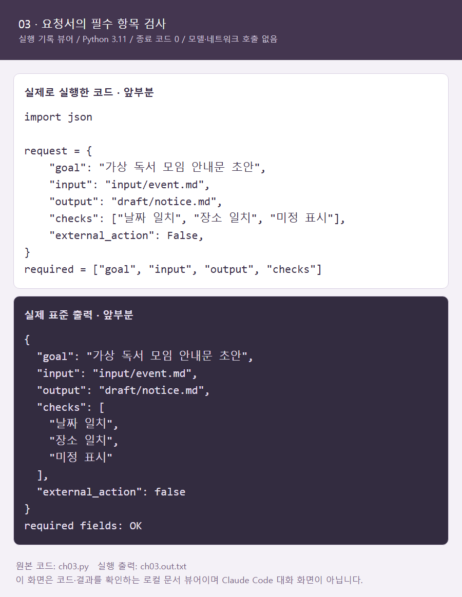
이제 다음 권의 이야기는 매번 같은 말을 하지 않으려면로 이어져요. 지금까지 남긴 파일과 판단이 다음 단계에서 어떤 역할을 하는지 계속 살펴볼 거예요.
제4권 · 매번 같은 말을 하지 않으려면
며칠 뒤 묘대리는 또 같은 설명을 하고 있었어요. 한국어로 써달라는 말, 모르는 사실은 표시해달라는 말, 초안은 draft에 넣어달라는 말이었지요. 묘사원은 작은 메모 파일을 열었어요. “매번 하는 말이면 여기 적어두세요. 오늘만 쓰는 내용은 옆 파일에 따로 두고요.”
프로젝트 지침은 함께 일하는 방법을 설명하는 안내문과 비슷해요. 작업을 맡은 사람이 바뀌어도 알아야 할 약속을 적어두는 것이지요. 반면 오늘 어디까지 했는지는 계속 달라져요. 두 종류를 한 문서에 섞으면 오래된 상태가 공통 규칙처럼 남을 수 있어요. 그래서 이 장에서는 오래 유지할 지침과 지금의 인계 메모를 나누어 다뤄요.
파일에 적어두는 이유는 기억을 무조건 믿기 위해서가 아니에요. 무엇을 지시했는지 다시 읽어보고, 서로 모순되는 문장이 있는지 확인하기 위해서예요. 결과가 다르게 나왔을 때 지침을 보면 입력이 잘못됐는지, 절차가 모호했는지 더 구체적으로 이야기할 수 있어요.
CLAUDE.md의 역할
프로젝트에서 반복되는 규칙은 매번 대화에 붙이기보다 지침 파일로 관리할 수 있어요. 공식 문서가 설명하는 CLAUDE.md는 프로젝트 안내를 제공하는 수단이에요. 지침은 기억을 돕지만 잘못된 사실까지 검증해 주는 장치는 아니에요.
공통 지침에는 앞으로 여러 작업에서 바뀌지 않을 약속을 담아요.
언어, 산출물 경로, 사실을 확인하는 방식이 좋은 예예요. 특정 안내문에 들어갈 날짜를 여기에 넣으면 다음 문서를 작성할 때 잘못된 맥락이 따라올 수 있어요. CLAUDE.md를 만들 때는 규칙마다 실제로 반복되는 이유가 있는지 살펴봐요. 지침 파일을 읽었다고 모델이 항상 정확히 따르는 것은 아니므로 결과 검수는 계속 필요해요.
먼저 반복해서 말한 규칙을 모은다. 그다음 모든 업무에 필요한 규칙만 골라요. 마지막으로 연습 프로젝트의 CLAUDE.md에 짧게 적어요.
AI에게 이렇게 요청해요이 프로젝트는 한국어 초안을 만든다. 입력에 없는 사실은 확인 필요로 남긴다. 외부 공개는 발행인이 결정한다.
특정 안내문에서만 쓰는 문장까지 공통 규칙 파일에 들어갔습니다. 특정 안내문 내용은 입력 또는 작업 기록에 둬요. 공통 지침에는 여러 작업에 계속 적용할 규칙만 남겨 변화와 검토 범위를 줄여요.
기억에 맡기던 말을 파일에 적어요
“지난번에도 말씀드렸는데요.” 묘대리가 같은 말을 반복하자 묘사원은 지난 대화가 아니라 현재 폴더를 열었어요. 새 작업을 시작한 사람이 처음 보는 장소라고 생각해보면 무엇을 남겨야 할지 보인다는 것이었지요. 프로젝트 지침은 그런 사람에게 건네는 짧은 안내문과 비슷해요.
프로젝트에는 계속 유지할 약속이 있어요. 한국어로 작성한다거나, 모르는 사실을 확인 필요로 남긴다거나, 원본을 바꾸기 전에 결과 파일을 따로 만든다는 약속이지요. 반면 지금 작성하는 행사 날짜나 오늘 남은 작업은 시간이 지나면 달라져요. 둘을 같은 메모에 섞으면 새 작업에서도 예전 상황이 그대로 적용될 수 있어요.
공식 문서가 설명하는 CLAUDE.md는 프로젝트에 관한 지침을 제공하는 방법이에요. 이 파일은 보통의 텍스트 문서처럼 읽고 수정할 수 있어요. 복잡한 문법을 아는 것보다 어떤 규칙을 넣을지 고르는 일이 먼저예요. 처음에는 실제로 반복해서 말한 약속 몇 개를 옮겨두는 정도로 시작해도 돼요.
# 이 프로젝트에서 일하는 방법
- 안내문과 설명은 한국어로 작성한다.
- input의 자료를 사실의 기준으로 삼는다.
- 자료에 없는 값은 확인 필요로 남긴다.
- 초안은 draft에 저장한다.
- 외부 발행은 사람이 결정한다.이 지침은 행사 일정 자체를 담지 않아요. 다른 행사를 작성해도 유지할 수 있는 일하는 방법을 담고 있지요. 규칙을 이렇게 고르면 특정 파일의 내용이 바뀌어도 공통 지침을 자주 고칠 필요가 줄어들어요. 반대로 행사 날짜를 여기에 적었다면 새 행사를 시작할 때마다 오래된 정보가 남아 있지 않은지 살펴봐야 해요.
규칙과 현재 상태
“결과는 draft/에 저장한다”는 규칙이고 “오늘 초안은 작성 중”은 상태예요. 상태는 시간이 지나면 달라져요. 두 종류를 구분해야 다음 세션에서 오래된 진행 상황을 현재 사실로 오해하지 않아요.
문서를 오래 사용하려면 변하는 정보에 시점을 붙여야 해요.
“검토 중”은 오늘의 상태이지만 내일은 완료됐을 수 있어요. 반면 “검수 근거를 남긴다”는 여러 날 유지되는 규칙이에요. 현재 상태를 인계 메모에 분리하면 공통 지침의 안정성을 유지하면서도 진행 상황을 갱신할 수 있어요. 예전 상태를 삭제하기보다는 변경 기록을 남겨 언제 무엇이 달라졌는지 알 수 있게 해요.
먼저 문장을 규칙·사실·상태로 분류해요. 그다음 변하는 상태에는 날짜를 붙인다. 마지막으로 현재 작업은 handoff.md에 따로 기록해요.
AI에게 이렇게 요청해요이 메모에서 장기 규칙과 이번 작업의 진행 상태를 분리해줘. 판단이 어려운 문장은 이유를 적어줘.
파일 이름에 관한 문장이 전체 규칙인지 한 번의 조건인지 불분명해요. 모든 책에서 같은 이름을 쓸 것인지, 이번 안내문에만 적용하는지 물어봐요. 맥락을 확인하기 전에는 장기 규칙으로 승격하지 않아요.
짧은 규칙이 이해하기 쉬운 이유
규칙이 길어질수록 더 정확해질 것 같지만 반드시 그렇지는 않아요. 비슷한 문장을 여러 번 적으면 서로 조금씩 다른 조건을 만들 수 있어요. “초안은 draft에 둔다”와 “작업 결과는 documents에 저장한다”가 함께 있으면 두 폴더의 관계를 다시 설명해야 하지요. 처음에는 실제로 필요한 약속을 고르고 표현을 한 가지로 맞추는 편이 좋아요.
규칙 하나에는 한 가지 행동을 적으면 읽기 쉬워요. “좋게 작성하고 문제가 없도록 조심한다”는 문장보다 “자료에 없는 값은 확인 필요로 표시한다”가 구체적이에요. 결과 문서에서 그 행동이 지켜졌는지도 확인할 수 있지요. 지침 파일은 막연한 소망을 적는 곳보다 반복되는 행동을 설명하는 곳으로 생각하면 돼요.
이미 한 번 실패한 내용을 모두 영구 규칙으로 만들 필요는 없어요. 특정 자료에서만 생긴 문제라면 그 자료의 검토 메모에 남길 수 있어요. 여러 작업에서 반복되는 원인이 확인됐을 때 공통 지침으로 옮기면 돼요. 이렇게 구분하면 지침이 과거 사건의 긴 목록으로 자라는 일을 줄일 수 있어요.
오늘의 상태는 인계 메모에 남겨요
공통 지침과 달리 인계 메모에는 지금 어디까지 했는지를 적어요. 초안이 만들어졌고 날짜 비교는 끝났지만 문의 방법은 미정이라는 식이에요. 다음 사람이 읽었을 때 무엇부터 하면 되는지 알 수 있어야 해요. 대화 내용을 전부 줄여 적는 것보다 다음 행동에 필요한 정보가 더 중요해요.
# 안내문 인계 메모
결과 파일: draft/notice.md
원본 자료: input/event.md
확인한 내용: 날짜, 시간, 장소 일치
남은 내용: 참가비와 문의 방법 확인
다음 행동: 발행인이 문의 채널을 정한 뒤 초안 갱신이 메모의 “날짜 일치”는 실제로 비교했을 때만 적어야 해요. 확인할 예정인 일을 확인한 일로 적으면 다음 담당자는 그 검사를 건너뛸 수 있거든요. 같은 이유로 “거의 완료”라는 문장은 구체적인 상태로 바꾸는 편이 좋아요. 어느 부분이 남았는지 알 수 있으면 미완성 메모도 충분히 유용해요.
파일 경로는 가능하면 복사해서 열 수 있는 형태로 남겨요. 문서 제목만 적어두면 같은 제목의 다른 파일과 혼동될 수 있어요. 작업이 여러 번 이어졌다면 어떤 판을 기준으로 검토했는지도 적어요. 내용이 바뀐 뒤의 파일을 읽으면서 이전 검수 결과를 현재 결과로 받아들이지 않게 하기 위해서예요.
충돌을 드러내기
여러 지침에 서로 다른 출력 경로가 있으면 조용히 임의 선택하기보다 충돌을 드러내야 해요. 이 연습은 실제 제품의 지침 우선순위를 외우는 시험이 아니라 프로젝트 문서의 모순을 줄이는 편집 과제예요.
충돌을 해결할 때는 서로 다른 두 문장을 먼저 드러내요.
어느 파일의 어떤 규칙이 다른지 적으면 사람도 판단하기 쉬워요. 경로 충돌처럼 기술적으로 둘 다 가능한 경우에도 정본이 둘이 되지 않도록 하나의 기준을 정해야 해요. 결정 뒤에는 선택한 경로만 고치는 것이 아니라 요청서와 인계 메모까지 일치시키는 편이 좋아요. 문서의 모순을 그대로 둔 채 AI가 알아서 판단하기를 기대하면 작업마다 결과가 바뀔 수 있어요.
먼저 CLAUDE.md의 경로 규칙을 읽어요. 그다음 작업 요청서의 경로와 비교해요. 마지막으로 충돌이 있으면 변경할 문서와 이유를 기록해요.
AI에게 이렇게 요청해요공통 지침은 draft/이고 이번 요청은 drafts/다. 파일 작성 전에 충돌을 알리고 하나의 경로로 정리할 안을 제시해줘.
비슷한 두 폴더에 초안이 각각 저장돼 정본이 모호해요. 생성 시각만으로 결정하지 않고 요청서, 변경 내역, 내용 차이를 비교해요. 정본을 결정한 뒤 다른 파일의 역할을 명시해요.
지침이 서로 다를 때는 먼저 드러내요
어느 날 묘대리는 초안을 drafts 폴더에 만들어달라고 했어요. 그런데 공통 지침에는 draft라고 적혀 있었지요. 두 이름은 비슷하지만 컴퓨터에서는 다른 경로예요. AI가 어느 한쪽을 선택해 파일을 만들 수도 있지만, 사람이 정본을 찾는 문제는 그대로 남을 수 있어요.
이런 때는 충돌한 두 문장을 함께 확인해요. 공통 지침이 오래된 것인지, 이번 요청에서만 다른 경로를 쓸 것인지 판단하면 돼요. 어느 쪽을 선택하든 관련된 요청서와 인계 메모도 맞춰두는 편이 좋아요. 폴더 하나만 바꾸고 문서는 그대로 두면 다음 작업에서 같은 혼동이 다시 생길 수 있거든요.
작업이 이미 두 경로에 나누어져 있다면 하나를 곧바로 지우지 않아요. 두 파일의 내용과 만들어진 맥락을 비교해 정본을 정해요. 최신 저장 시각만으로 올바른 내용을 고를 수는 없어요. 나중에 저장된 파일이 오히려 이전 초안을 복사한 것일 수도 있기 때문이에요.
다음 세션에 넘기기
인계 메모는 대화 전체의 축약보다 다음 행동에 필요한 근거를 남기는 문서예요. 목표, 현재 결과, 남은 결함, 파일 경로가 있으면 다음 담당자가 다시 처음부터 조사할 필요가 줄어들어요.
좋은 인계 메모에는 다음 행동을 실행할 수 있는 정보가 있어요.
“검수가 필요하다”보다 “event.md와 notice.md의 시간 항목을 비교한다”가 구체적이에요. 미완료 항목이 여러 개라면 선행 작업을 먼저 적어요. 문의 채널을 사람이 결정해야 답장 초안을 완성할 수 있다면 그 의존 관계를 남겨요. 다음 담당자는 전체 대화를 읽지 않더라도 파일과 판단 근거를 따라 작업을 이어갈 수 있어야 해요.
먼저 현재 산출물과 검수 기록을 연결해요. 그다음 미완료 항목에 다음 행동을 써요. 마지막으로 실행하지 않은 항목은 미실행으로 표시해요.
AI에게 이렇게 요청해요handoff.md를 목표, 결과 파일, 확인된 사실, 미완료, 다음 행동의 다섯 항목으로 작성해줘.
인계 메모에는 거의 완료됐다는 말만 남아 있어요. 예: 날짜 비교는 끝났고 문의 방법은 미정이에요. 발행인이 문의 채널을 정하면 notice.md의 마지막 항목을 갱신하고 재검수해요.
지침은 검수를 대신하지 않아요
규칙을 잘 적어두었어도 결과가 항상 정확해지는 것은 아니에요. 지침을 읽었는지, 현재 작업에 어떻게 적용했는지, 다른 입력과 모순되지는 않는지 살펴봐야 해요. 지침은 판단에 필요한 맥락을 전달하는 수단이지, 파일의 사실을 자동으로 보증하는 인증서는 아니에요.
그래서 묘사원은 “지침에 써놨으니 됐죠?”라는 말에 결과를 다시 열어보자고 했어요. 참가비를 확인 필요로 남기라는 규칙이 있어도 실제 초안에는 무료라는 문장이 들어갈 수 있어요. 규칙의 존재와 결과의 일치는 다른 사실이므로 둘을 따로 확인해야 해요.
이 구분을 알고 있으면 지침을 더 유용하게 고칠 수 있어요. 반복된 오류가 원본 경로를 모호하게 적었기 때문에 생겼다면 그 부분을 구체적으로 바꾸어요. 반면 단 한 번의 잘못된 자료 때문에 생긴 일이라면 원본을 정정해야 할 수 있어요. 모든 실패를 지침의 분량으로 해결하려고 하지 않아도 돼요.
긴 대화를 이어받을 때
대화가 길어지면 처음 정한 목표와 마지막에 남은 일이 멀리 떨어져 있을 수 있어요. 이때는 목표, 결과 파일, 결정, 열린 문제를 짧게 묶어두면 편해요. 단순히 대화의 분위기를 요약하는 것이 아니라 다음 담당자가 사용할 지도를 만드는 것이지요.
새 세션을 시작한 뒤에는 그 메모만 읽고 바로 수정하기보다 실제 파일도 함께 확인해요. 메모를 쓴 뒤 파일이 한 번 더 바뀌었을 수 있어요. 반대로 파일은 그대로인데 메모만 앞서 갔을 수도 있고요. 인계 메모와 현재 파일을 맞춰보는 작은 확인이 작업을 이어가는 데 큰 도움이 돼요.
묘대리는 이제 매번 처음부터 설명하지 않아도 됐어요. 공통 지침에는 일하는 약속을 두고 인계 메모에는 오늘의 상태를 남겼거든요. 묘사원은 마지막 줄을 읽고 고개를 끄덕였어요. “다음에 무엇을 하면 되는지 보이네요. 그 정도면 이어서 일할 수 있어요.”
새로운 담당자에게 넘기는 날
다음 날 작업을 이어받은 담당자는 어제의 대화를 모두 알지 못했어요. 폴더에는 초안과 이전 사본, 검토 메모가 있었지요. 묘사원은 무엇부터 읽어야 하는지 짧은 인계 메모를 남겼어요. 오래된 파일 이름만 늘어놓지 않고 지금의 결과와 남은 일을 설명했어요.
공통 지침을 읽으면 이 프로젝트에서 일하는 약속을 알 수 있어요. 인계 메모를 읽으면 오늘 어느 단계에서 시작해야 하는지 알 수 있고요. 두 문서를 모두 읽었을 때 서로 다른 이야기가 나오면 바로 정리할 수 있어요. 지침은 초안 저장 경로를, 인계 메모는 현재 초안의 실제 경로를 가리켜야 해요.
처음에는 설명을 자세히 남기려고 대화 전체를 붙여 넣기도 해요. 하지만 다음 담당자가 필요한 결과를 찾기 어렵다면 좋은 인계가 아닐 수 있어요. 결정과 파일 경로, 아직 확인하지 못한 사실을 앞에 두고 배경은 필요한 만큼 연결하면 돼요.
인계 메모에도 날짜가 있으면 좋아요. 언제 쓴 상태인지 알 수 있기 때문이에요. 메모를 작성한 뒤 파일이 바뀌었다면 현재 문서와 비교해야 해요. 기록이 있다는 것만으로 지금도 같다고 가정하지 않는 태도가 중요해요.
묘대리는 메모를 읽고 곧바로 참가비를 물어보러 갈 수 있었어요. 원고가 어느 정도 완성됐는지 다시 조사할 필요가 없었지요. 인계의 목적은 과거를 멋지게 요약하는 데 있지 않아요. 다음 행동을 가능하게 만드는 데 있어요.
코드로 살펴보는 같은 원리
여기서는 앞의 원리를 작은 Python 프로그램으로 옮겨 보았어요. Claude Code 모델을 호출하는 코드는 아니고, 파일을 만들고 읽거나 자료를 비교하는 과정을 눈으로 확인하기 위한 보조 예제예요. 전체 파일과 실행 결과를 나란히 읽으면 자연어 요청과 정해진 프로그램의 역할이 어떻게 다른지 이해하는 데 도움이 돼요.
from pathlib import Path
root = Path("run") / "04-memory"
root.mkdir(parents=True, exist_ok=True)
rules = ("# 프로젝트 지침\n\n"
"- 한국어로 초안을 작성한다.\n"
"- 미확인 사실은 확인 필요로 표시한다.\n"
"- 발행은 사람이 결정한다.\n")
handoff = ("# 인계 메모\n\n"
"결과: notice.md 초안\n"
"미완료: 문의 방법 확인\n"
"다음: 발행인의 문의 채널 결정\n")
for name, text in [("CLAUDE.md", rules),
("handoff.md", handoff)]:
path = root / name
path.write_text(text, encoding="utf-8")
assert path.read_text(encoding="utf-8") == text
print(name, "saved", len(text), "characters")
이 예제는 규칙 문자열과 인계 문자열을 별도로 만들어요. 둘을 같은 변수에 섞지 않은 것은 파일을 나누는 의미를 코드에서도 보이게 하기 위해서예요. rules에는 여러 작업에서 유지할 약속을 넣고 handoff에는 지금 남은 일을 넣어요.
문자열 안의 은 줄바꿈을 뜻해요. 코드에서는 짧은 기호로 보이지만 저장된 Markdown에서는 다음 줄로 이어져요. 괄호 안에서 여러 문자열을 나란히 적은 부분은 한 문자열을 읽기 편하게 나누어 쓴 형태예요. 긴 한 줄을 만들지 않아도 원문을 유지할 수 있어요.
반복문은 파일 이름과 텍스트를 한 쌍씩 받아요. CLAUDE.md에는 rules를, handoff.md에는 handoff를 저장하도록 짝을 정했어요. 파일 수가 늘어도 같은 저장 동작을 반복할 수 있는 구조이지요. 다만 어떤 내용을 어느 파일에 둘지 정하는 일은 앞에서 이미 결정한 것이에요.
저장 뒤에는 같은 인코딩으로 다시 읽어 비교해요. 이 코드가 검증하는 것은 파일에 어떤 문자가 기록됐는지예요. 모델이 CLAUDE.md를 읽었는지, 그 지침을 현재 세션에서 어떻게 적용했는지까지 검사하지는 않아요. 파일 준비와 기능 동작을 나누어 읽는 예로 보면 돼요.
출력의 문자 수는 len(text)로 계산해요. 여기서 문자는 Python 문자열의 길이이며 토큰 수나 PDF에 표시되는 줄 수와 같은 값이 아니에요. 숫자를 볼 때 무엇을 센 것인지 이름과 함께 읽으면 다른 단위를 혼동하는 일을 줄일 수 있어요.
이 파일은 Python 3.11에서 실제로 실행했어요. 결과는 다음과 같아요. 긴 출력값은 판면에 맞춰 이어서 읽을 수 있게 표시했으며 원본 출력 파일도 함께 보존했어요.
CLAUDE.md saved 67 characters
handoff.md saved 58 characters
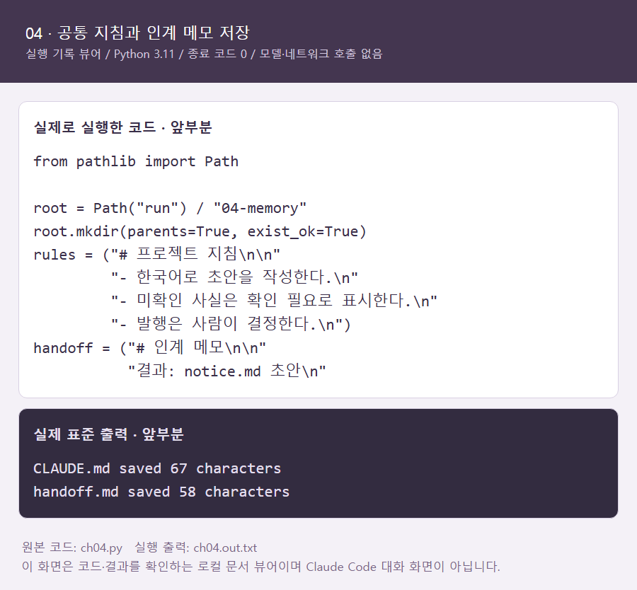
이제 다음 권의 이야기는 잘하던 일을 다시 쓰는 방법로 이어져요. 지금까지 남긴 파일과 판단이 다음 단계에서 어떤 역할을 하는지 계속 살펴볼 거예요.
제5권 · 잘하던 일을 다시 쓰는 방법
안내문 검토를 몇 번 반복하자 묘대리는 검사 순서를 외우기 시작했어요. 날짜를 보고, 장소를 보고, 모르는 정보를 지어내지 않았는지 확인하는 것이었지요. 묘사원은 말했어요. “그 순서를 다음에도 똑같이 쓰고 싶으면 절차로 남겨요.”
스킬은 그런 반복 절차를 정리하는 한 방법이에요. 이름만 그럴듯하게 붙이는 것이 아니라, 어떤 입력을 받고 무엇을 확인하며 어떤 결과를 내놓을지 적는 것이 중요해요. 처음부터 복잡한 프로그램을 만들 필요는 없어요. 텍스트로 검사 순서를 써두는 것만으로도 내가 원하는 행동을 분명히 설명할 수 있거든요.
다만 저장된 스킬이 실제로 잘 동작하는지는 따로 확인해야 해요. 정상 문서와 틀린 문서를 함께 넣어봤을 때 어떤 차이가 나오는지 살펴봐야 하지요. 이 장에서는 스킬 파일의 형태를 읽고 만드는 방법을 설명하고, 호출과 권한이 다른 문제라는 점까지 이어서 알아봐요.
스킬 후보 고르기
스킬은 자주 반복하는 절차를 정리하는 방법이에요. 한 번의 글쓰기 결과보다 입력과 판정 순서가 반복되는 검토 업무가 연습하기 좋아요. 이 책은 특정 강의의 추천 목록 대신 안내문 검토라는 독자적 절차를 사용해요.
스킬을 만들기 전에 같은 절차를 수동으로 한 번 설명해 봐요.
어떤 파일을 읽고 무엇을 비교하며 어떤 결과를 남기는지 말할 수 없다면 자동화할 규칙도 아직 불분명해요. 반대로 입력과 판정 기준이 반복되는 업무는 스킬로 정리하기 좋아요. 안내문 검토는 날짜·장소·미정 항목을 확인한다는 경계가 있어 첫 사례로 적합해요. 스킬의 이름보다 적용하지 않을 상황을 분명히 정하는 일이 중요해요.
먼저 최근 반복한 업무 세 개를 적어요. 그다음 입력과 결과가 비슷한 업무를 골라요. 마지막으로 언제 사용하지 않을지도 한 줄 적어요.
AI에게 이렇게 요청해요안내문 검토 절차를 만들어줘. 입력은 안내문과 원본 자료이고 결과는 결함 목록이다. 새 글 작성에는 사용하지 않는다.
모든 업무를 잘 처리한다는 설명만 있는 스킬을 만들었습니다. 입력과 종료 조건이 불명확해요. 날짜·장소·미정 항목을 원본과 비교하는 검토처럼 구체적 업무로 좁혀요.
자주 하는 설명을 절차로 바꿔요
묘사원은 안내문을 볼 때마다 같은 순서로 확인했어요. 원본 파일을 열고 날짜를 비교한 다음 장소와 미정 항목을 읽었지요. 묘대리는 그 순서를 적어두면 다음에 그대로 쓸 수 있겠다고 생각했어요. 이렇게 사람이 이해할 수 있는 절차부터 만드는 것이 스킬의 좋은 출발점이에요.
스킬을 설명할 때 직함만 적으면 할 일이 분명해지지 않을 수 있어요. “당신은 최고의 편집자다”라는 문장에는 어떤 자료를 읽어야 하는지 들어 있지 않거든요. 안내문을 원본과 비교하고 결함을 보고한다는 식으로 입력과 결과를 정하면 절차를 읽기가 쉬워져요. 사람도 같은 순서를 따라갈 수 있을 정도로 쓰면 좋아요.
처음에는 세 단계면 충분해요. 원본과 대상 경로를 확인하고, 정해진 항목을 비교하고, 차이를 보고하는 것이지요. 수정까지 할지 여부는 별도로 정해요. 원고를 읽고 결함만 반환하는 스킬과 직접 문서를 고치는 스킬은 결과가 달라요. 이름은 비슷해도 적용 범위를 같게 취급하면 안 돼요.
작은 SKILL.md
공식 문서에서는 스킬 디렉터리의 SKILL.md에 설명과 절차를 둬요. 프로젝트용 예시는 .claude/skills/notice-review/SKILL.md다. 본문은 무엇을 읽고 어떤 순서로 검사하며 무엇을 출력할지 설명해요.
SKILL.md는 설명과 절차를 함께 담는 텍스트 파일이에요.
파일 위쪽의 설정 부분과 아래쪽의 본문은 역할이 달라요. 설정에는 이름과 설명 등을 두고 본문에는 수행 순서를 써요. 처음부터 복잡한 스크립트를 붙일 필요는 없어요. 원본과 대상 경로를 확인하고, 기준 항목을 비교하고, 결함표를 내보내는 세 단계만으로도 검토 절차를 표현할 수 있어요. 지원 파일을 추가했다면 본문에서 언제 읽는지 연결해요.
먼저 연습 폴더 안에 스킬 경로를 만들어요. 그다음 name과 description을 적어요. 마지막으로 검사 순서와 결과 형식을 본문으로 작성해요.
---
name: notice-review
description: 안내문을 원본 자료와 비교해 결함을 찾는다
---
원본을 읽고 날짜, 장소, 미정 항목을 비교한다.스킬의 설명에는 좋은 문서를 만든다는 말만 있어요. “안내문과 원본 자료가 주어졌을 때 사실 불일치와 누락을 검토한다”처럼 대상과 상황을 함께 적어요.
파일 위쪽과 아래쪽이 맡는 일이 달라요
공식 문서에서 설명하는 스킬은 디렉터리 안의 SKILL.md를 중심으로 구성해요. 예를 들어 프로젝트 안의 .claude/skills/notice-review/SKILL.md에 안내문 검토 절차를 둘 수 있어요. 점으로 시작하는 폴더 이름이나 파일 이름의 대소문자도 그대로 유지해요. 화면에 비슷하게 보이는 이름을 만들었다고 프로그램이 같은 위치로 인식하는 것은 아니에요.
---
name: notice-review
description: 안내문을 원본 자료와 비교해 차이를 찾는다
disable-model-invocation: true
---
원본과 대상 파일의 경로를 먼저 확인한다.
날짜, 시간, 장소, 확인 필요 항목을 비교한다.
차이가 있으면 위치와 기대값, 실제값을 보고한다.
파일 수정과 외부 전송은 하지 않는다.위쪽의 --- 사이에는 설정이 들어 있어요. name은 스킬 이름이고 description은 어떤 일을 하는지 설명해요. 아래쪽의 본문에는 실제 절차를 적고요. 처음 읽을 때는 설정과 본문을 나누어 보면 이해하기 쉬워요. 설정은 프로그램이 스킬을 다루는 방식에 영향을 주고, 본문은 AI에게 수행할 일을 설명해요.
description을 “문서를 잘 만든다”라고 쓰면 적용할 상황이 넓고 모호해져요. “안내문과 원본 자료가 주어졌을 때 사실 차이를 찾는다”라고 쓰면 대상과 상황이 드러나요. 사용하지 않을 상황도 생각해두면 좋아요. 새 글을 쓰는 업무와 이미 쓴 글을 비교하는 업무를 분리하면 결과를 검토하기 쉬워져요.
호출과 권한 구분
스킬을 사용할 시점을 정하는 설정과 도구 실행 권한은 구분해야 해요. 공식 문서의 disable-model-invocation은 모델의 자동 호출을 제한하는 설정이에요. 이 값만으로 파일 접근이나 외부 작업 권한 전체가 차단되는 것은 아니에요.
자동 호출 여부와 실제 실행 권한은 서로 다른 층위예요.
사람이 직접 호출하게 만들었다고 해서 그 안의 모든 행동이 적절한 것은 아니에요. 스킬 본문이 파일을 수정하도록 지시한다면 실행 시 그 효과를 검토해야 해요. 검토용 스킬은 결과를 제시하는 데 그치고 수정은 별도 요청으로 두는 방식이 이해하기 쉬워요. 문서의 설정 이름을 가져올 때는 현재 공식 문서와 로컬 버전에서 지원하는지 함께 확인해요.
먼저 스킬을 직접 호출할지 자동 선택하게 할지 정해요. 그다음 부작용이 있는 단계가 포함되는지 찾는다. 마지막으로 수동 호출 연습과 권한 확인을 별도로 기록해요.
AI에게 이렇게 요청해요notice-review는 검토 결과만 제시한다. 파일 수정과 외부 전송은 하지 않는다. 발견한 문제와 근거 위치를 보고한다.
자동 호출을 제한했으므로 모든 실행 권한도 차단됐다고 생각해요. 호출 시점 제어와 도구 권한 제어를 혼동했어요. 스킬 내용, 허용 도구와 실제 권한 요청을 각각 확인해야 해요.
직접 호출한다는 뜻
공식 문서의 disable-model-invocation: true는 모델이 스킬을 스스로 호출하는 것을 제한하는 설정이에요. 이 설정의 뜻을 모든 권한을 차단한다는 의미로 넓혀 읽으면 안 돼요. 누가 언제 절차를 시작하는지와 그 절차에서 무엇을 할 수 있는지는 서로 다른 문제이기 때문이에요.
예를 들어 사람이 직접 실행한 스킬이라도 본문에 파일을 지우라는 단계가 있다면 그 행동의 영향은 따로 생각해야 해요. 반대로 검토 결과만 보여주는 스킬은 문서를 바꾸지 않고도 유용하게 쓸 수 있어요. 처음에는 읽기와 보고 위주의 작은 스킬을 만든 뒤 실제로 필요한 행동을 구분하는 편이 이해하기 쉬워요.
스킬을 호출하는 모양은 프로그램의 현재 문서와 설치 환경에서 확인해야 해요. 이 책에서는 notice-review라는 이름의 예를 사용하므로 다음과 같은 입력을 설명할 수 있어요. 다만 파일을 만들었다는 사실과 실제 모델이 그 절차를 수행했다는 사실은 다른 확인이에요.
/notice-review묘대리는 파일만 만들고 이제 스킬이 완성됐다고 말했어요. 묘사원은 원본과 대상 경로가 어디에 있는지 물었지요. 실제 업무에서는 호출한 뒤 어떤 자료를 읽어야 하는지도 알 수 있어야 해요. 스킬 본문에 입력을 확인하는 단계를 넣은 이유가 여기에 있어요.
스킬도 시험하기
절차를 파일로 저장했다고 검토 품질이 보장되지는 않아요. 정답을 아는 작은 자료를 준비하면 누락과 과잉 지적을 관찰할 수 있어요. 정상 문서와 날짜 오류 문서를 함께 시험해요.
검토 절차의 품질은 잘못된 문서뿐 아니라 정상 문서에서 드러나요.
정상 문서에 계속 오류를 지적한다면 실무자는 보고를 신뢰하기 어려워요. 날짜가 다른 문서와 같은 문서를 나란히 두면 놓친 오류와 과잉 지적을 함께 관찰할 수 있어요. 결과가 기대와 다를 때는 모델의 성격을 추정하기보다 입력 경로, 비교 기준, 이전 맥락을 확인해요. 절차를 바꿨다면 같은 자료로 다시 비교해 변경의 영향을 살펴봐요.
먼저 날짜가 맞는 안내문 A를 만들어요. 그다음 날짜만 다른 안내문 B를 만들어요. 마지막으로 두 결과를 예상 결함과 비교해요.
/notice-review정상 안내문에서도 날짜 오류가 있다는 결과가 돌아왔습니다. 입력 경로 혼동, 이전 자료 참조, 판정 조건의 모호함을 확인해요. 원본과 대상 경로를 명시한 뒤 다시 시험해요.
정상 문서도 같이 보아야 해요
오류를 넣은 문서만 확인하면 검토 절차가 얼마나 쉽게 과잉 지적하는지 알기 어려워요. 정상 문서와 날짜만 틀린 문서를 함께 두면 두 가지를 볼 수 있어요. 틀린 항목을 놓치지는 않았는지, 맞는 항목까지 틀렸다고 말하지는 않았는지예요.
결과가 기대와 다르면 먼저 입력을 확인해요. 다른 원본을 읽었거나 이전 대화의 날짜를 사용했을 수 있어요. 비교 기준이 모호해서 표현이 다르다는 이유만으로 오류라고 판단했을 수도 있고요. “14:00”과 “오후 두 시”를 같은 값으로 볼지처럼 의미를 비교하는 기준도 업무에 따라 필요할 수 있어요.
한 번의 결과를 보고 스킬의 성격을 단정하기보다 어떤 자료에서 무엇을 비교했는지 살펴보세요. 입력과 판정 기준을 고친 뒤에는 같은 자료를 다시 확인해요. 그 과정을 남기면 왜 절차를 바꾸었는지도 설명할 수 있어요. 스킬을 모으는 일보다 필요한 절차 하나를 이해할 수 있게 만드는 일이 먼저예요.
스크립트와 스킬을 구분해요
스킬 안에 프로그램을 포함할 수도 있지만 두 개가 같은 것은 아니에요. 스킬은 어떤 상황에서 어떤 순서로 일할지 설명하고, 스크립트는 정해진 명령을 실행해요. 값이 같은지 비교하거나 파일이 있는지 검사하는 일은 작은 프로그램으로 고정할 수 있어요. 반면 문장이 대상 독자에게 적절한지는 더 넓은 맥락을 보고 판단해야 할 수 있지요.
이 장 끝의 코드는 스킬 파일을 실제 경로에 만들고 그 텍스트가 저장됐는지 확인해요. 모델이 스킬을 읽어 제대로 검토했는지까지 검사하지는 않아요. 파일의 구조를 만드는 확인과 모델의 행동을 보는 확인을 나누어두면, 무엇이 준비됐고 무엇이 남았는지 정확히 말할 수 있어요.
묘사원은 마지막에 스킬 설명을 한 줄 더 고쳤어요. “안내문을 검토한다”라는 말 뒤에 “원본 자료와 비교해서”를 붙였지요. 짧은 차이지만 판단의 기준이 생겼어요. 좋은 재사용 절차는 멋진 이름보다 그 기준에서 시작해요.
검토 스킬이 엉뚱한 날짜를 본 날
스킬 파일을 만들고 처음 결과를 읽었을 때 정상 안내문에도 날짜 오류가 있다는 설명이 나왔어요. 묘대리는 스킬이 쓸모없다고 생각했지만 묘사원은 어떤 원본을 읽었는지부터 확인했어요. 폴더에는 이전 행사 자료도 있었거든요.
스킬 본문에는 원본과 대상을 확인한다는 말이 있었지만 실제 요청에는 경로가 분명하지 않았어요. “이 안내문을 봐줘”라는 말만으로는 어떤 자료와 비교해야 할지 모호했지요. 입력 경로를 명시한 뒤에는 무엇을 비교하려는지 사람도 더 쉽게 이해할 수 있었어요.
이 사례의 결과는 가상의 설명이에요. 이 책은 해당 모델 실행을 했다고 보고하지 않아요. 중요한 원리는 결과가 다를 때 절차의 어느 부분을 확인할지예요. 스킬 이름이나 성격을 추측하기보다 실제 입력과 판정 기준을 읽는 편이 문제를 좁히는 데 도움이 돼요.
정상 자료에서 오류를 만드는지와 틀린 자료에서 차이를 찾는지를 함께 살펴보면 절차를 더 구체적으로 고칠 수 있어요. 이름을 바꾸거나 설명을 길게 늘리는 것만으로 해결되지 않을 수 있어요. 어떤 자료를 읽고 무엇을 같은 값으로 볼지부터 정하는 것이 먼저예요.
재사용하는 절차는 한 번 저장하는 것으로 끝나지 않아요. 실제 업무에 맞는지 확인하고 변화가 생기면 버전을 남기며 고쳐요. 그래도 입력과 출력의 경계를 작게 유지하면 바꾼 부분의 영향을 읽기 쉬워요.
코드로 살펴보는 같은 원리
여기서는 앞의 원리를 작은 Python 프로그램으로 옮겨 보았어요. Claude Code 모델을 호출하는 코드는 아니고, 파일을 만들고 읽거나 자료를 비교하는 과정을 눈으로 확인하기 위한 보조 예제예요. 전체 파일과 실행 결과를 나란히 읽으면 자연어 요청과 정해진 프로그램의 역할이 어떻게 다른지 이해하는 데 도움이 돼요.
from pathlib import Path
root = Path("run") / "05-skill"
path = root / ".claude/skills/notice-review/SKILL.md"
path.parent.mkdir(parents=True, exist_ok=True)
text = ("---\nname: notice-review\n"
"description: 안내문을 원본 자료와 비교한다\n"
"disable-model-invocation: true\n---\n\n"
"원본과 대상 경로를 먼저 확인한다.\n"
"날짜와 장소, 미정 항목을 비교한다.\n"
"결함 위치와 기대값, 실제값을 보고한다.\n"
"파일 수정과 외부 전송은 하지 않는다.\n")
path.write_text(text, encoding="utf-8")
saved = path.read_text(encoding="utf-8")
assert saved.startswith("---\n")
assert "name: notice-review" in saved
print(path.as_posix())
print("file format: OK; model invocation: NOT TESTED")
root 아래에 .claude/skills/notice-review/SKILL.md라는 경로를 만들어요. 부모 폴더를 함께 생성하도록 지정했으므로 중간 디렉터리가 아직 없어도 예제의 구조를 준비할 수 있어요. 실제 프로젝트에 적용할 때는 시작 경로가 맞는지 먼저 확인해야 해요.
text의 앞부분에는 세 개의 하이픈으로 둘러싼 설정이 들어 있어요. name과 description, disable-model-invocation이라는 필드를 책의 예시에 맞춰 적었어요. 그 뒤에는 원본과 대상을 확인하고 항목을 비교하는 절차가 이어져요. 프로그램은 이 모든 내용을 텍스트로 저장해요.
startswith로 확인하는 것은 파일이 정해진 구분자로 시작하는지예요. 다른 assert는 이름 항목이 들어 있는지 확인해요. 이는 매우 제한된 구조 검사예요. 설정의 모든 값이 현재 제품에서 유효한지 분석하는 완전한 검사기는 아니고 모델의 호출도 수행하지 않아요.
출력 끝에는 model invocation: NOT TESTED라는 문장을 남겼어요. 스킬 파일을 저장한 결과를 호출 성공으로 바꾸어 보고하지 않기 위해서예요. 실제 스킬을 쓰려면 해당 환경에서 인식과 호출, 자료 접근, 결과 반환을 각각 확인해야 해요.
같은 이름의 파일이 여러 프로젝트에 있을 수 있다는 점도 기억해두면 좋아요. 지금 이 프로그램이 만든 위치는 run/05-skill 아래예요. 내 업무 프로젝트의 활성 설정을 바꾼 것이 아니라 예제 파일 구조를 별도의 연습 공간에 재현한 것이에요.
이 파일은 Python 3.11에서 실제로 실행했어요. 결과는 다음과 같아요. 긴 출력값은 판면에 맞춰 이어서 읽을 수 있게 표시했으며 원본 출력 파일도 함께 보존했어요.
run/05-skill/.claude/skills/notice-review/SKILL.md
file format: OK; model invocation: NOT TESTED
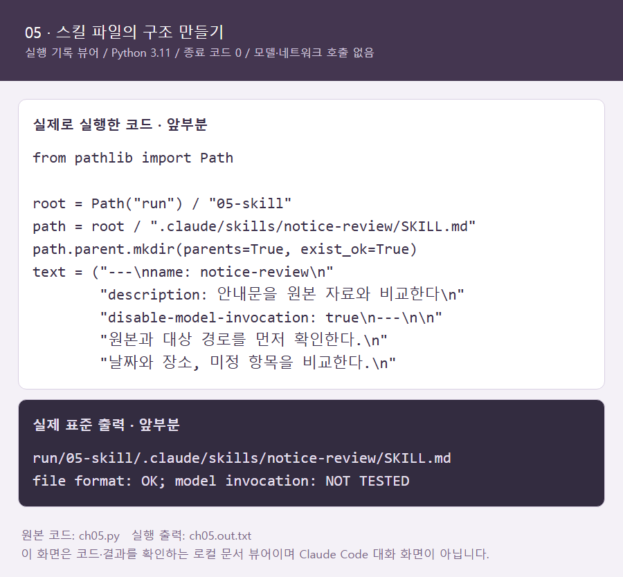
이제 다음 권의 이야기는 틀린 곳을 찾는 것보다 중요한 일로 이어져요. 지금까지 남긴 파일과 판단이 다음 단계에서 어떤 역할을 하는지 계속 살펴볼 거예요.
제6권 · 틀린 곳을 찾는 것보다 중요한 일
묘대리가 가져온 검토 메모에는 “제목이 별로다”와 “시간이 틀렸다”가 나란히 적혀 있었어요. 묘사원은 시간 항목부터 표시했어요. “제목은 취향이 다를 수 있지만, 한 시간 늦게 오면 행사는 놓치잖아요.”
문서를 검토할 때는 모든 의견을 같은 종류로 다루지 않는 편이 좋아요. 사실이 틀린 것, 내용이 빠진 것, 표현이 어색한 것은 확인하는 방법이 달라요. 사실은 원본과 비교하고 표현은 독자와 목적에 맞게 판단해요. 서로 다른 검사를 나누어 보면 무엇부터 고쳐야 하는지 더 분명해져요.
오류를 발견한 뒤에는 다음 사람이 같은 곳을 찾을 수 있게 적어야 해요. 어느 파일의 어떤 항목인지, 기대한 값과 실제 값이 무엇인지 남기는 것이지요. 이렇게 적어둔 결함은 수정을 맡기기도 쉽고 고친 뒤 다시 확인하기도 쉬워요. “이상하다”는 느낌을 재현 가능한 설명으로 바꾸는 과정이라고 생각하면 돼요.
사실과 문체의 차이
날짜가 틀린 것과 문장이 길다는 것은 다른 결함이에요. 사실 오류는 원본과 비교하고 문체 문제는 독자의 읽기 활동과 기준으로 평가해요. 둘을 분리하면 중요한 결함이 표현 취향에 묻히지 않아요.
사실 오류는 근거가 있는 값과 어긋난 상태예요.
표현 개선은 읽는 사람에게 더 잘 전달하기 위한 편집 판단이에요. 이 둘을 같은 목록에 섞어 두면 중요한 정보 오류가 취향의 차이처럼 다뤄질 수 있어요. 결함표에는 유형을 나누고 영향도 적어요. 일정이 틀리면 행사 참여를 방해하지만 제목의 어조는 독자의 인상에 영향을 줘요. 먼저 해결할 항목은 문서의 목적과 피해 범위를 기준으로 정해요.
먼저 문서에서 주장과 표현을 표시해요. 그다음 사실은 원본 위치를 연결해요. 마지막으로 표현 문제는 읽기 어려운 이유를 설명해요.
AI에게 이렇게 요청해요사실 오류와 표현 개선을 나눠 검토해줘. 각 항목에 근거와 영향을 적어줘.
시간이 틀린 항목과 제목 취향에 관한 의견이 같은 목록에 있어요. 행사 참여를 방해하는 시간 오류를 먼저 수정해요. 제목은 목표 독자와 합의된 기준에 따라 별도 개선해요.
문장이 매끄러워도 사실은 틀릴 수 있어요
묘대리가 새 안내문을 소리 내어 읽었어요. 어색한 문장은 없었지만 일정이 원본보다 한 시간 늦어져 있었지요. 읽기 좋은 문장과 맞는 문장은 서로 다른 기준으로 확인해야 해요. 설명이 자연스럽게 이어지면 작은 숫자 차이가 더 눈에 띄지 않을 수도 있어요.
사실을 확인할 때는 기준이 되는 원본을 옆에 두어요. 기억 속의 일정과 비교하지 않아요. 같은 행사에서도 날짜가 한 번 바뀌었을 수 있고, 내가 기억하는 값이 오히려 이전 값일 수도 있거든요. 어느 원본을 기준으로 검토했는지 남겨두면 나중에 차이가 생겼을 때도 다시 확인할 수 있어요.
표현을 고칠 때는 다른 질문을 하게 돼요. 독자가 처음 듣는 용어를 설명했는지, 중요한 정보를 찾기 쉬운지, 한 문장에 여러 일이 섞여 있지는 않은지 살펴봐요. 사실 오류와 문체 개선을 나누어 말하면 서로 다른 의견을 더 차분하게 다룰 수 있어요. 어떤 표현이 더 좋다는 판단이 곧 원본 값이 틀렸다는 뜻은 아니니까요.
재현 가능한 결함표
“이상하다”는 보고만으로는 다음 담당자가 같은 문제를 찾기 어려워요. 결함표에는 위치, 기대값, 실제값, 영향이 필요해요. 입력 파일까지 연결하면 검사자가 같은 기준으로 다시 확인할 수 있어요.
재현 가능한 결함은 다른 사람이 같은 위치에서 확인할 수 있어요.
파일 이름만으로 충분하지 않을 때는 소제목이나 항목 이름을 함께 적어요. 줄번호는 편집 후 달라질 수 있으므로 문맥을 짧게 덧붙이면 좋아요. 기대값은 검수자의 선호가 아니라 원본에서 가져와요. 실제값과 원본을 함께 보존하면 수정 전후 비교도 가능해요. 수정한 사람이 아닌 다른 단계에서 다시 읽는 절차가 있으면 단순한 표시 오류도 발견하기 쉬워요.
먼저 결함에 D-001 같은 ID를 붙인다. 그다음 파일과 항목 위치를 적어요. 마지막으로 기대값·실제값·수정 후 확인을 기록해요.
AI에게 이렇게 요청해요D-001: notice.md 일정 항목. 기대값은 14시, 실제값은 15시. 원본은 event.md. 수정 후 두 값을 다시 비교한다.
결함표에는 링크가 안 된다는 문장만 있어요. 어떤 파일의 어떤 주소인지, 기대한 도착 페이지, 실제 오류, 확인 일시를 적어요. 로그인이 필요한지와 네트워크 조건도 재현에 도움이 돼요.
같은 값을 비교하는 작은 코드
source = {"time": "14:00", "place": "작은도서관"}
draft = {"time": "15:00", "place": "작은도서관"}
print(source["time"] == draft["time"])
print(source["place"] == draft["place"])이 예시는 원리를 설명하는 짧은 조각이에요. ==는 두 값이 같은지 비교해요. 시간 값은 다르고 장소 값은 같지요. 이 장의 전체 코드에서는 같은 비교를 반복하면서 다른 항목만 결함 목록에 담아요. 무엇을 기대했고 실제로 무엇이 있었는지 함께 남기는 것이 핵심이에요.
프로그램은 우리가 정한 비교 규칙을 충실하게 적용할 수 있지만 그 규칙의 의미까지 알아서 정해주지는 않아요. 시간을 문자열로 그대로 비교하면 “14:00”과 “오후 두 시”가 다르게 나올 수 있어요. 실제 업무에서 두 표현을 같은 것으로 다뤄야 한다면 표기를 먼저 통일하거나 값을 해석하는 과정을 추가해야 해요.
그래서 코드로 검증한다는 말을 결과가 무조건 맞다는 뜻으로 사용하지 않아요. 어떤 조건을 검사했는지를 함께 설명해야 해요. 항목의 존재를 확인했는지, 같은 문자열인지를 비교했는지, 실제 의미까지 검토했는지는 서로 다른 범위예요.
다른 사람이 찾을 수 있게 설명해요
“시간이 잘못됐어요”라는 말보다 “notice.md의 일정 항목에서 원본의 14:00이 15:00으로 바뀌었어요”라는 말이 더 유용해요. 어떤 파일을 열고 어느 부분을 보면 되는지 알 수 있기 때문이에요. 기대값과 실제값이 함께 있으면 수정 담당자도 원본을 잘못 이해할 가능성이 줄어들어요.
파일을 계속 편집하면 줄번호는 달라질 수 있어요. 그래서 소제목이나 항목 이름, 짧은 문맥을 함께 남기는 편이 좋아요. 링크가 열리지 않는다면 주소와 기대한 도착 페이지, 실제로 나온 메시지, 확인한 시점도 도움이 돼요. 단순히 “안 됨”이라고 적으면 같은 현상을 다시 찾기 어려워요.
결함에 이름을 붙이면 수정 대화를 이어가기 쉬워져요. D-001처럼 작은 ID를 사용할 수 있어요. 이 번호는 문제의 크기를 뜻하는 것이 아니라 같은 대상을 다시 가리키기 위한 이름이에요. “D-001을 고쳤어요”라는 말이 나오면 처음 발견한 내용과 수정 결과를 연결해 볼 수 있어요.
한 번에 한 원인
여러 문제를 동시에 바꾸면 무엇이 개선을 만들었는지 판단하기 어려워요. 날짜 오류를 고치는 동안 제목과 구조까지 바꾸지 않는 방식으로 수정 범위를 좁혀요. 작은 차이는 검수 비용도 줄여요.
수정 범위를 좁히면 검사 범위도 설명하기 쉬워져요.
시간 항목 하나를 고쳤다면 그 값과 원본의 일치 여부를 먼저 확인하고, 문단 구조가 유지되는지 살펴봐요. 제목과 배치를 함께 바꾸었다면 그만큼 다시 봐야 할 부분이 늘어나요. 작은 수정에 대한 자신감 때문에 재검수를 생략하지 않는 것이 중요해요. 수정 전 사본과 결함 ID를 연결해 두면 무엇을 해결하기 위한 변경인지 나중에도 알 수 있어요.
먼저 결함 하나를 골라요. 그다음 그 결함을 해결할 최소 수정안을 적어요. 마지막으로 수정 뒤 같은 검사와 인접 항목 검사를 수행해요.
AI에게 이렇게 요청해요D-001만 수정해줘. 날짜·장소와 문서 구조는 유지한다. 수정한 줄과 재검수 결과를 보고해줘.
시간을 바로잡는 과정에서 준비물 항목이 사라졌습니다. 원래 결함의 수정 결과와 별개로 준비물 누락 결함을 등록해요. 이전 사본에서 누락 내용을 복구하고 관련 항목을 재검수해요.
고칠 때는 바뀌지 않을 것도 보세요
시간을 고치면서 준비물 문장이 없어질 수 있어요. 날짜만 바꾸려 했는데 제목을 다시 쓰고 목록 순서를 바꾸는 경우도 있지요. 변경이 넓어지면 다시 읽어야 할 범위도 넓어져요. 그래서 명확한 오류를 고칠 때는 필요한 부분부터 작게 바꾸는 편이 좋아요.
작은 수정 뒤에는 먼저 원래 오류가 해결됐는지 확인해요. 그다음 인접한 항목과 문서 구조를 읽어봐요. 이전 사본과 비교하면 요청한 부분 이외에 무엇이 바뀌었는지 볼 수 있어요. 수정했다는 보고는 재검수의 시작점이지 끝이 아니에요.
수정 과정에서 새 오류를 발견했다면 원래 오류와 구분해 남겨요. 시간 오류는 해결됐지만 준비물 누락은 새로 생겼다고 설명할 수 있어요. 이렇게 나누면 어떤 수정이 어떤 영향을 주었는지 따라가기 쉬워요. 한 항목에 해결과 미해결을 섞어 적으면 현재 상태를 읽기 어려워지거든요.
자기 개선의 기록
개선 루프는 좋은 답을 반복해서 요구하는 것이 아니라 실패 원인과 절차 변경을 남기는 과정이에요. 같은 실수가 반복되면 요청서나 검수 항목을 바꿔 다음 작업에서 예방해요.
개선 기록은 실패 원인을 확인한 정도에 맞춰 작성해요.
파일을 잘못 읽은 증거가 있으면 입력 경로 오류라고 적을 수 있어요. 증거가 없으면 가능성으로 남겨야 해요. 추정 원인에 맞춰 규칙을 과도하게 늘리면 작업이 복잡해질 수 있어요. 재발 방지책은 다음 문서에서 관찰할 수 있는 행동으로 바꾸는 편이 좋아요. 예를 들어 일정 항목 비교를 검수표에 추가했다면 실제로 그 검사가 수행됐는지 기록해요.
먼저 반복된 오류를 한 가지 골라요. 그다음 입력 부족·절차 누락·판정 모호함 중 원인을 분류해요. 마지막으로 다음 요청 또는 체크리스트를 수정해요.
AI에게 이렇게 요청해요이번 날짜 오류의 원인과 재발 방지 변경을 제안해줘. 실제 확인된 원인과 추정은 구분해줘.
재발 원인에는 AI의 실수라는 표현만 기록됐습니다. 정확한 원본을 읽었는지, 이전 날짜가 다른 파일에 있었는지, 검수에서 시간 항목을 누락했는지 확인해요.
원인을 모르면 추정이라고 말해요
묘대리는 오류의 원인을 AI가 실수했기 때문이라고 적었어요. 묘사원은 그 말로 다음 일을 바꿀 수 있는지 물었지요. 원인을 설명하려면 더 구체적인 단서가 필요해요. 다른 원본을 읽었는지, 이전 날짜가 섞여 있었는지, 검수에서 시간 항목을 빠뜨렸는지 살펴볼 수 있어요.
확인된 원인과 가능한 원인은 다르게 써요. 로그나 파일에서 잘못된 원본을 읽은 사실을 확인했다면 입력 경로 오류라고 말할 수 있어요. 증거가 없다면 가능성으로 남기고 다음에 확인할 내용을 적는 편이 정확해요. 추정을 사실로 적어두면 엉뚱한 규칙만 늘릴 수 있어요.
개선은 실제로 달라질 행동으로 표현하면 좋아요. 날짜 오류를 막기 위해 원본 경로를 요청에 명시하거나 일정 비교 항목을 추가할 수 있어요. 그다음 작업에서 그 행동이 지켜졌는지도 확인해요. 실패의 이유를 길게 설명하는 것보다 같은 실수를 덜 하도록 작은 절차를 바꾸는 일이 중요해요.
검토의 끝에는 무엇이 남을까요
좋은 검토는 오류 목록만 남기는 일이 아니에요. 확인한 범위와 미확인 부분을 함께 드러내요. 날짜와 장소는 대조했지만 문의 정책은 확인하지 못했다면 그 차이를 말할 수 있어야 해요. 다음 담당자는 이미 확인한 부분을 다시 조사하기보다 남은 정보에 집중할 수 있어요.
묘사원은 초안을 닫기 전에 원본과 수정본, 짧은 검토 메모를 같은 작업 폴더에 남겼어요. 누가 읽어도 지금의 판단을 다시 따라갈 수 있게 한 것이지요. AI가 만든 문서도 검토할 수 있는 자료로 다루면 돼요. 자연스러운 문장 뒤에 어떤 근거가 있는지 확인하는 습관은 이후의 연결과 자동화에서도 계속 쓰이게 될 거예요.
시간을 고치다가 준비물이 사라졌어요
안내문의 시간 오류를 고친 뒤 묘대리는 다시 읽지 않고 넘기려 했어요. 묘사원은 수정 전 사본과 비교했지요. 시간은 맞아졌지만 준비물 항목이 사라져 있었어요. 원래의 오류를 고치는 동안 새로운 누락이 생긴 것이에요.
이때 시간 오류가 해결되지 않았다고 뭉뚱그려 말할 필요는 없어요. 시간은 수정됐고 준비물 누락은 새로 확인됐다고 나누어 말하면 돼요. 서로 다른 문제를 같은 상태로 묶으면 어떤 변경이 어떤 영향을 주었는지 알기 어려워져요.
준비물은 원본과 이전 사본을 기준으로 복구했어요. 복구 뒤에는 같은 값이 들어갔는지 읽어봤고 문서 구조도 살펴보았지요. 이 과정은 짧은 문장 하나를 바꿀 때도 저장과 검토가 분리돼야 한다는 예예요.
수정 요청에는 범위를 구체적으로 적을 수 있어요. “시간 항목만 원본과 같게 바꾸고 다른 항목은 유지해줘”라고 말하는 식이에요. 그래도 결과를 보지 않아도 된다는 뜻은 아니에요. 요청은 의도를 전달하고 비교는 실제 행동을 확인해요.
묘대리는 그 뒤로 완료라는 말을 조금 늦게 사용했어요. 수정 파일을 열고 원래의 차이가 사라졌는지, 다른 항목은 남아 있는지 확인한 뒤에 말했지요. 작은 재검수가 문서의 흐름을 안정적으로 이어주는 역할을 했어요.
코드로 살펴보는 같은 원리
여기서는 앞의 원리를 작은 Python 프로그램으로 옮겨 보았어요. Claude Code 모델을 호출하는 코드는 아니고, 파일을 만들고 읽거나 자료를 비교하는 과정을 눈으로 확인하기 위한 보조 예제예요. 전체 파일과 실행 결과를 나란히 읽으면 자연어 요청과 정해진 프로그램의 역할이 어떻게 다른지 이해하는 데 도움이 돼요.
import json
source = {"time": "14:00", "place": "작은도서관"}
draft = {"time": "15:00", "place": "작은도서관"}
defects = []
for key, expected in source.items():
actual = draft.get(key)
if actual != expected:
defects.append({"field": key,
"expected": expected,
"actual": actual})
assert len(defects) == 1
assert defects[0]["field"] == "time"
print(json.dumps(defects, ensure_ascii=False, indent=2))
print("defects:", len(defects))
source와 draft에는 같은 종류의 항목을 넣었어요. 원본의 시간은 14:00이고 초안의 시간은 15:00이에요. 장소는 같아요. 기대한 차이를 미리 알고 있는 작은 자료이므로 코드가 무엇을 찾았는지 사람이 쉽게 비교할 수 있어요.
반복문은 원본의 각 이름과 값을 읽어요. draft.get(key)로 초안의 같은 항목을 찾고 actual이라는 변수에 둬요. 이름이 없으면 해당 항목을 정상 값과 다르게 다룰 수 있어요. 이 단순한 예에서는 누락과 값 불일치를 모두 차이 목록으로 보게 돼요.
actual != expected는 두 값이 다른지 확인해요. 다르면 field와 expected, actual을 하나의 작은 사전으로 묶어 defects 목록에 추가해요. 어떤 항목이 어떤 값에서 어떤 값으로 달라졌는지가 함께 남는 것이 중요해요.
assert 두 개는 현재 예제에서 결함이 하나이고 그 항목이 time인지 확인해요. 장소까지 잘못된 것으로 잡았다면 이 검사는 통과하지 못해요. 오류를 놓치는 것뿐 아니라 맞는 항목을 잘못 지적하는 것까지 살펴볼 수 있는 작은 예예요.
이 코드는 원본을 진실이라고 가정하고 비교해요. 원본 자체가 잘못됐다면 코드가 정상 종료해도 업무 결과는 틀릴 수 있어요. 무엇을 기준으로 검증하는지 함께 남겨야 한다는 설명이 여기와 이어져요.
이 파일은 Python 3.11에서 실제로 실행했어요. 결과는 다음과 같아요. 긴 출력값은 판면에 맞춰 이어서 읽을 수 있게 표시했으며 원본 출력 파일도 함께 보존했어요.
[
{
"field": "time",
"expected": "14:00",
"actual": "15:00"
}
]
defects: 1
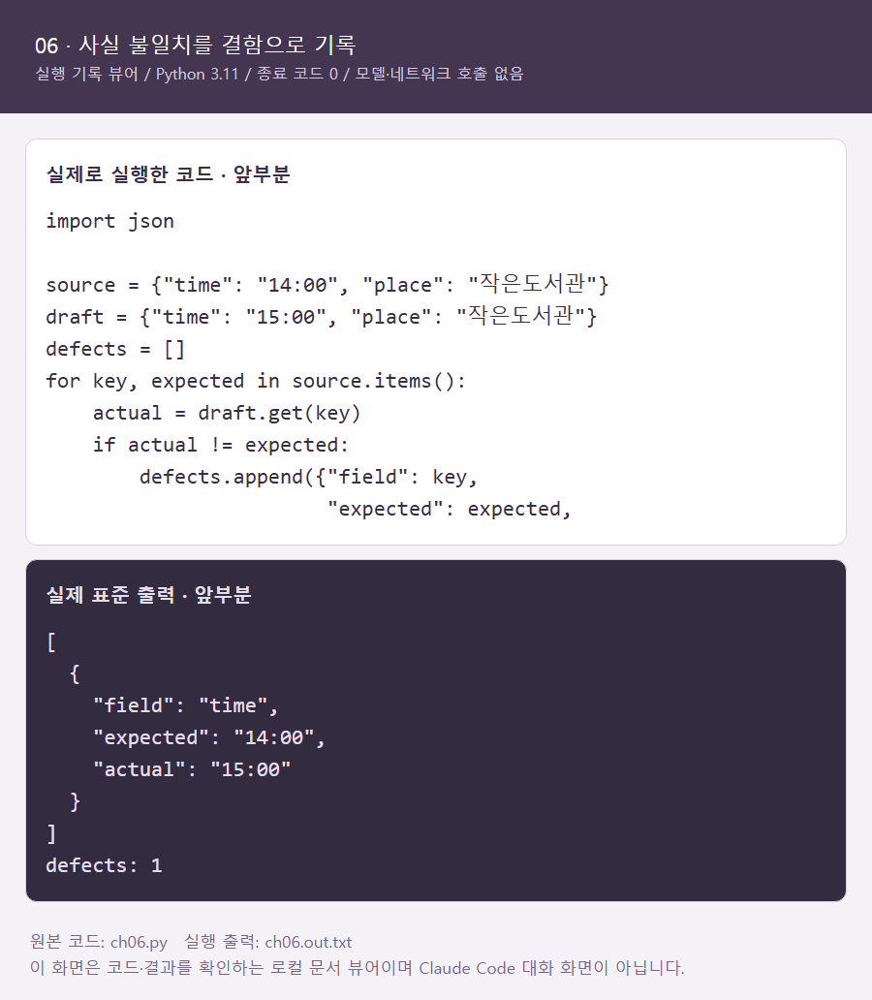
이제 다음 권의 이야기는 밖에 있는 자료와 연결하기로 이어져요. 지금까지 남긴 파일과 판단이 다음 단계에서 어떤 역할을 하는지 계속 살펴볼 거예요.
제7권 · 밖에 있는 자료와 연결하기
“다른 서비스에 있는 파일도 바로 읽을 수 있대요.” 묘대리는 새 연결 도구를 보여주었어요. 묘사원은 설치 버튼보다 먼저 설명을 읽었어요. “어디를 읽고 뭘 바꿀 수 있는지부터 봐야죠.”
MCP를 처음 접하면 새로운 명령을 많이 외워야 할 것처럼 보일 수 있어요. 하지만 먼저 알아둘 것은 연결의 양쪽이에요. 도구를 제공하는 서버가 있고, 그 도구를 사용하는 클라이언트가 있어요. 연결하려는 대상과 실행 방식이 분명하면 실패했을 때도 어느 쪽을 확인해야 할지 좁힐 수 있어요.
이 장은 실제 제공자 주소가 없는 상태에서 임의의 서버를 만들어 넣지 않아요. 연결 전 명세를 작성하고 작은 읽기 시험으로 범위를 확인하는 과정을 자세히 설명해요. 연결 성공이라는 표시만 보고 다음 단계로 넘어가기보다, 내가 기대한 자료를 보고 있는지 확인하는 방법에 초점을 맞춰요.
MCP의 경계
MCP는 AI 도구와 외부 시스템을 연결하는 표준이에요. 연결은 새로운 자료와 행동 경로를 제공하므로 도구가 읽는 대상과 바꾸는 대상을 구분해야 해요. 연결만으로 업무 정확도가 자동 보장되지는 않아요.
연결 도구를 선택할 때는 사용할 기능의 이름만 보지 않고 자료가 어디에 있는지 확인해요.
로컬 파일, 회사 서비스, 개인 계정은 접근 조건이 달라요. 도구가 제공하는 행동 중 이번 목적에 필요한 것부터 골라요. 파일 이름 목록을 확인하는 업무에 본문 수정과 삭제 기능이 꼭 필요한 것은 아니에요. 연결 전 명세를 만들면 실패했을 때 네트워크 문제인지 자료 범위 문제인지 구분할 기준이 생겨요.
먼저 연결하려는 자료를 한 가지 골라요. 그다음 읽기와 변경 동작을 나눠요. 마지막으로 연결 없이 가능한 대체 입력도 적어요.
AI에게 이렇게 요청해요도구 연결 명세를 목적, 대상 자료, 읽기 동작, 쓰기 동작, 확인 방법으로 나눠 작성해줘.
자료 목록 조회와 삭제가 같은 종류의 기능으로 설명돼 있어요. 두 동작의 영향이 달라요. 조회는 존재 정보를 읽고 삭제는 데이터를 바꿔요. 필요한 최소 동작을 기준으로 도구를 선택해요.
연결의 양쪽을 먼저 살펴봐요
MCP라는 말을 처음 들으면 AI의 새로운 능력 이름처럼 느껴질 수 있어요. 하지만 먼저 떠올릴 것은 일을 주고받는 연결이에요. 도구를 제공하는 서버와 그 도구를 사용하는 클라이언트가 정해진 방식으로 대화할 수 있게 하는 것이지요. 연결할 수 있다는 사실과 그 도구로 어떤 업무를 해도 된다는 판단은 다른 문제예요.
묘대리는 파일을 읽는 도구가 있다는 말만 듣고 연결을 시작하려 했어요. 묘사원은 그 파일이 어느 컴퓨터, 어느 계정, 어느 폴더에 있는지부터 물었지요. 같은 이름의 파일 서비스라도 실제로 접근하는 대상이 다르면 결과도 달라져요. 연결할 때 이름보다 주소와 범위를 확인하는 이유예요.
서버를 내 컴퓨터에서 실행하는 방식과 원격 주소로 접속하는 방식은 준비할 것이 달라요. 로컬 실행형이라면 실행할 프로그램과 필요한 환경을 확인해야 하고, 원격이라면 제공자의 실제 주소와 인증 방식을 확인해야 해요. 이 책에서는 실제 제공자 안내가 없는 자리에 가짜 주소를 넣지 않아요. 빈 정보는 연결 준비가 끝나지 않았다는 상태로 남겨요.
서버와 클라이언트
도구를 제공하는 쪽과 사용하는 쪽을 구분하면 연결 오류를 좁히기 쉬워요. Claude Code는 연결된 MCP 도구를 사용하는 쪽이며 서버 설정에는 전송 방식과 실행 대상이 필요해요. 본판은 불명확한 서버 주소를 만들어 넣지 않아요.
클라이언트 설정과 서버 실행을 나누어 이해하면 오류를 좁히기 쉬워요.
서버 주소가 잘못되면 클라이언트 프로그램을 다시 설치해도 해결되지 않을 수 있어요. 로컬 실행형 서버는 실행 파일과 필요한 환경을 확인해야 해요. 원격 서버는 제공자의 주소와 인증 방법을 확인해요. 본문에서는 존재하지 않는 예시 도메인을 실제 주소처럼 넣지 않아요. 실제 연결 정보는 선택한 제공자의 공식 안내에서 가져와야 해요.
먼저 공식 제공자의 설치 안내를 확보해요. 그다음 서버 이름·방식·실행 위치를 적어요. 마지막으로 버전과 지원 도구 목록을 확인해요.
claude mcp --help서버 이름만 있고 제공자 주소나 실행 명령은 없어요. 클라이언트 도움말과 제공자 문서를 확인할 수 있어요. 임의 주소를 입력하거나 출처를 모르는 설치 명령을 실행하는 것은 보류해요.
목록을 읽는 일과 내용을 바꾸는 일
파일 목록을 읽으면 이름과 위치를 확인할 수 있어요. 파일 본문을 읽으면 내용까지 볼 수 있지요. 내용을 수정하거나 파일을 삭제하는 행동은 자료 자체를 바꾸어요. 모두 파일과 관련돼 있다고 같은 영향의 기능으로 묶어서는 안 돼요.
안내문 초안을 만들기 위해 행사 자료 한 개만 읽으면 된다면, 처음부터 전체 저장소를 바꾸는 흐름을 만들 필요는 없어요. 목적을 기준으로 필요한 동작을 정하면 어떤 도구를 연결할지도 더 쉽게 고를 수 있어요. 도구가 제공하는 기능을 전부 사용하는 것이 목표는 아니에요.
연결 전에 목적과 대상, 읽기 동작과 쓰기 동작을 짧게 적어보면 좋아요. 이것을 거창한 승인 서류로 만들 필요는 없어요. 나중에 실제로 어떤 일이 일어나야 하는지 내가 설명할 수 있을 정도면 돼요. 예상하지 않은 자료가 보일 때 멈추고 범위를 다시 확인할 기준이 생기거든요.
도움말에서 무엇을 찾을까요
claude mcp --help이 명령으로 MCP 관련 하위 명령의 안내를 읽을 수 있어요. 설치 버전에 따라 표시가 달라질 수 있으므로 책의 문장을 화면과 무조건 같다고 가정하지 않아요. 이 책의 제작 환경에서는 add, get, list, remove 같은 이름을 도움말에서 확인했어요. 다만 그 이름을 보았다는 사실은 실제 서버에 연결했다는 뜻이 아니에요.
특정 하위 명령의 옵션을 더 살펴보려면 그 명령의 도움말을 읽어요. 예를 들어 추가 방식과 옵션을 이해할 때는 다음처럼 범위를 좁힐 수 있어요. 실제 주소나 실행 명령을 입력하기 전에 문법을 확인하는 단계로 생각하면 돼요.
claude mcp add --help명령의 사용 모양에 나타나는 name은 연결을 구분할 이름이고, 명령이나 URL은 실제 대상을 뜻해요. 책에 나온 영문 매개변수 이름을 모두 그대로 넣는 것은 아니에요. 문법을 설명하는 자리와 실제 값을 넣는 자리를 구분해 읽어야 해요. 어떤 값을 넣을지는 선택한 제공자의 공식 안내에서 확인해요.
작은 읽기 시험
처음부터 쓰기 기능을 실행하기보다 작은 읽기 결과를 확인하면 연결 대상과 범위를 점검할 수 있어요. 시험 데이터에서 기대 목록을 미리 정해 두면 다른 계정이나 폴더를 읽는 오류를 발견하기 쉬워요.
첫 연결의 시험은 작은 읽기 결과로 시작해요.
미리 알고 있는 시험 폴더의 파일 이름을 조회하면 기대한 계정과 범위에 연결됐는지 확인할 수 있어요. 목록이 비어 있거나 예상하지 않은 파일이 보이면 이후 단계로 넘어가지 않아요. 연결 성공이라는 상태와 올바른 자료를 보고 있다는 판단은 다르기 때문이에요. 조회한 파일 수, 예상 파일 이름, 실제 파일 이름을 비교한 기록을 남기면 확인 범위를 명확히 할 수 있어요.
먼저 시험 계정과 폴더를 정해요. 그다음 조회될 파일 이름 세 개를 종이에 적어요. 마지막으로 실제 목록과 비교하고 비밀 값은 기록하지 않아요.
AI에게 이렇게 요청해요연결 후 첫 시험은 지정 시험 폴더의 파일 이름 목록만 조회한다. 내용 변경은 하지 않는다.
시험 목록에서 예상하지 않은 회사 파일이 보예요. 쓰기 시험을 중단하고 계정·폴더 범위·접근 설정을 확인해요. 기대 자료만 조회되는 상태를 먼저 만들어요.
연결 뒤에는 작은 자료로 확인해요
처음에는 내용 변경보다 작은 읽기 결과를 확인하는 편이 이해하기 쉬워요. 내가 미리 알고 있는 시험 폴더를 준비하고 그 안에 있는 파일 이름이 나오는지 살펴봐요. 목록이 비어 있다면 경로나 접근 범위를 확인하고, 예상하지 않은 자료가 보이면 계정과 대상을 다시 확인해요.
도구가 연결됐다는 상태 표시는 통신의 한 부분을 알려줄 수 있지만 내가 원하는 자료를 읽고 있다는 판단까지 대신하지는 않아요. 다른 계정의 자료에 정상적으로 연결될 수도 있기 때문이에요. 연결 상태와 내용의 적합성을 나누어 살펴보면 이런 혼동을 줄일 수 있어요.
파일 목록이 맞더라도 실제로 필요한 내용이 읽히는지는 다음 단계에서 확인해요. 이름만 조회할 권한과 본문을 읽을 권한이 다를 수 있고, 자료의 형식 때문에 다른 처리가 필요할 수도 있어요. 한 번에 모든 동작을 시작하지 않고 작은 결과를 확인하며 넓혀가는 편이 원인을 찾기 쉬워요.
연결 실패 분류
실패 원인은 주소, 실행 파일, 인증, 권한, 서비스 상태 등으로 나뉘어요. 오류 메시지를 지운 채 다시 설치하면 원인을 잃어요. 먼저 비밀 값을 가린 오류 기록과 실행 조건을 보존해요.
오류를 기록할 때는 공개해도 되는 정보만 남겨요.
토큰이나 비밀 키를 가려도 오류 종류와 확인 시각, 실행 환경은 보존할 수 있어요. 인증 성공 뒤 자료 접근이 거부되었다면 로그인과 권한을 구분해서 살펴봐요. 명령 자체가 없다는 오류라면 실행 환경을 먼저 확인해요. 같은 오류에 설치와 재로그인을 무작정 반복하기보다 현재 실패 지점을 한 단계씩 좁히는 편이 재현과 해결에 도움이 돼요.
먼저 실패 시각과 명령을 기록해요. 그다음 자격 증명은 가리고 오류를 남겨요. 마지막으로 문서에 맞는 원인 하나부터 확인해요.
AI에게 이렇게 요청해요오류를 연결 대상, 인증, 접근 범위, 실행 환경 중 어디서 확인할지 분류해줘. 근거 없는 재설치는 제안하지 마.
로그인은 성공했지만 지정 폴더의 접근은 거부됐습니다. 인증 성공과 자료 접근 허용은 달라요. 해당 폴더의 권한과 요청 범위를 확인하는 것이 우선이에요.
실패를 읽는 순서
실행할 프로그램을 찾을 수 없다는 오류와 인증에 실패했다는 오류는 같은 곳에서 생기는 문제가 아니에요. 첫 번째라면 로컬 실행 환경을, 두 번째라면 계정이나 인증 과정을 살펴봐야 해요. 로그인에 성공했지만 자료 접근이 거부된다면 대상의 권한을 확인할 수 있어요.
오류 메시지는 그대로 남기되 공유하면 안 되는 값을 제거해요. 토큰이나 비밀 키를 가려도 발생 시각과 실행한 명령의 종류, 오류의 이름은 보존할 수 있어요. 오류를 지우고 같은 설치를 되풀이하면 처음 어디에서 실패했는지 알기 어려워질 수 있어요.
묘대리는 연결이 한 번 실패하자 프로그램을 다시 설치하려고 했어요. 묘사원은 먼저 오류의 마지막 줄을 읽었지요. 계정에는 들어갔지만 폴더 접근이 없다는 내용이었어요. 설치를 반복해도 바뀌지 않을 부분을 찾은 것이에요. 연결을 다루는 일에서도 중요한 것은 명령의 수보다 지금 어느 단계에 있는지 아는 것이에요.
이 장의 코드는 연결을 흉내 내지 않아요
장 끝의 코드는 실제 서버에 접속하지 않아요. 목적과 읽기 범위, 쓰기 범위, 제공자 주소의 유무를 자료로 만들고 준비 상태를 보여줘요. 주소가 비어 있으므로 연결 준비가 끝나지 않았다는 결과가 나와요. 이것은 실패를 숨기기 위한 가짜 성공 화면이 아니라, 아직 없는 정보를 정확히 표현하는 예제예요.
이 구조를 이해하면 실제 연결을 할 때도 무엇을 채워야 하는지 보이게 돼요. 제공자 안내를 확인한 뒤 실행 대상과 인증 조건을 정하고, 시험 자료로 읽기 결과를 확인하면 돼요. 코드가 준비 상태를 표시하는 것과 제품의 연결 기능이 성공하는 것은 끝까지 다른 확인으로 남겨두어요.
연결은 됐는데 다른 자료가 보여요
연결 도구에 정상이라는 표시가 나타났어요. 묘대리는 곧바로 파일 수정에 들어가려 했지만 목록에 낯선 이름이 보였지요. 묘사원은 화면의 상태 표시보다 실제로 어떤 자료가 나왔는지 먼저 읽었어요.
연결 성공은 상대와 통신할 수 있음을 뜻할 수 있어요. 내가 의도한 계정과 폴더를 보고 있다는 뜻까지 포함하는 것은 아니에요. 그래서 미리 알고 있는 시험 자료를 준비하면 도움이 돼요. 있어야 할 이름과 없어야 할 이름을 알고 비교할 수 있거든요.
예상하지 않은 자료가 나타나면 변경 동작을 이어가지 않아요. 계정과 대상 주소, 폴더 범위를 확인해요. 자료를 많이 읽을 수 있다는 사실을 좋은 연결의 기준으로 삼지 않는 것이에요. 목적에 맞는 자료를 읽는지가 중요하지요.
목록이 맞아도 본문 읽기가 가능한지는 따로 확인할 수 있어요. 권한과 형식 때문에 파일 이름만 보일 수도 있어요. 작은 동작을 하나씩 확인하면 어느 단계에서 달라졌는지 찾기 쉬워져요.
이 이야기는 실제 서비스에서 발생한 사고 보고가 아니라 연결의 원리를 설명하는 가상 상황이에요. 실제 접속을 하지 않은 범위에서도 확인 순서를 이해할 수 있어요. 접속한 뒤에는 그 환경에서 나온 결과를 기준으로 다시 확인해야 해요.
코드로 살펴보는 같은 원리
여기서는 앞의 원리를 작은 Python 프로그램으로 옮겨 보았어요. Claude Code 모델을 호출하는 코드는 아니고, 파일을 만들고 읽거나 자료를 비교하는 과정을 눈으로 확인하기 위한 보조 예제예요. 전체 파일과 실행 결과를 나란히 읽으면 자연어 요청과 정해진 프로그램의 역할이 어떻게 다른지 이해하는 데 도움이 돼요.
import json
spec = {
"purpose": "시험 폴더 파일 목록 조회",
"provider_url": None,
"read": ["시험 폴더 목록"],
"write": [],
"connection_tested": False,
}
ready = bool(spec["provider_url"])
print(json.dumps(spec, ensure_ascii=False, indent=2))
print("ready to connect:", ready)
assert not ready
assert spec["write"] == []
print("No connection attempted.")
spec은 연결의 목적과 준비 상태를 표현하는 자료예요. provider_url에는 None을 넣었어요. 실제 주소를 아직 모르는 상태라는 뜻으로 사용한 것이에요. 이 자리에 그럴듯한 URL을 만들어 넣으면 명세는 채워진 것처럼 보여도 연결 대상은 확인되지 않아요.
read에는 시험 폴더 목록을 넣고 write는 빈 목록으로 두었어요. 읽기와 쓰기 동작을 다른 이름으로 표현하면 이번 목적에 자료 변경이 필요한지 생각하기 쉬워요. 실제 권한을 설정한 결과는 아니므로 이 목록만으로 서버 접근이 제한됐다고 말하지는 않아요.
ready는 제공자 주소가 있는지를 불리언 값으로 확인해요. 현재는 False예요. 준비 상태의 한 조건만 확인하는 간단한 코드이므로 주소가 채워졌다고 모든 연결 준비가 끝났다고 해석하지 않아요. 인증과 실행 환경, 실제 조회는 여전히 다른 확인이에요.
마지막 출력은 접속을 시도하지 않았다고 말해요. 네트워크 호출이 코드에 없기 때문에 이 설명과 실제 행동이 일치해요. 문서가 무엇을 표현하는지와 프로그램이 실제로 무엇을 실행하는지 함께 읽는 연습이 아니라, 뒤의 업무에서 계속 사용하는 읽기 원리로 생각하면 돼요.
이 파일은 Python 3.11에서 실제로 실행했어요. 결과는 다음과 같아요. 긴 출력값은 판면에 맞춰 이어서 읽을 수 있게 표시했으며 원본 출력 파일도 함께 보존했어요.
{
"purpose": "시험 폴더 파일 목록 조회",
"provider_url": null,
"read": [
"시험 폴더 목록"
],
"write": [],
"connection_tested": false
}
ready to connect: False
No connection attempted.
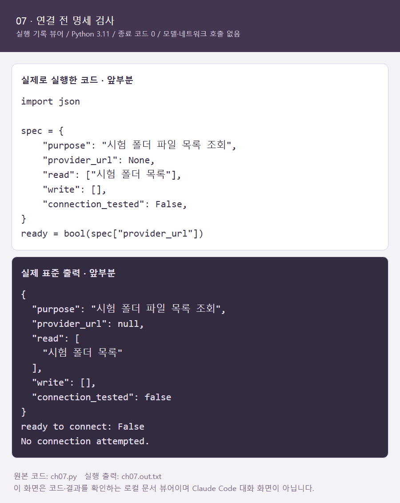
이제 다음 권의 이야기는 메일과 문서가 한 흐름으로 이어질 때로 이어져요. 지금까지 남긴 파일과 판단이 다음 단계에서 어떤 역할을 하는지 계속 살펴볼 거예요.
제8권 · 메일과 문서가 한 흐름으로 이어질 때
문의가 여섯 건 모였어요. 묘대리는 전부 답장을 보내면 일이 끝난다고 생각했지만, 두 건은 뜻이 분명하지 않았어요. 묘사원은 그 둘을 따로 놓았어요. “답을 빨리 만드는 것보다, 답할 수 없는 걸 골라내는 게 먼저예요.”
Google 업무를 연결하기 전에도 문의를 읽고 분류하고 문서로 정리하는 흐름은 살펴볼 수 있어요. 이 책은 실제 메일 대신 가상 문의를 사용해요. 일정, 준비물, 취소, 보류라는 기준을 먼저 정하고 그 기준에 따라 자료를 묶어요. 그다음 확인된 내용만으로 답장 초안을 만들고 회의용 문서와 발표 개요로 정리해요.
실제 서비스 연결에는 계정과 권한, 사용하는 도구의 조건이 필요해요. 그래서 로컬에서 설명할 수 있는 부분과 실제 계정으로 확인해야 할 부분을 나누어 다뤄요. 초안을 저장하는 동작이 실제 전송과 다르다는 점을 알고 있으면, 나중에 연결을 추가하더라도 업무의 경계를 유지할 수 있어요.
GWS를 읽는 순서
Google Workspace CLI 저장소는 여러 Google 서비스를 다루는 명령줄 도구를 설명해요. 서비스마다 인증과 접근 범위가 다를 수 있어요. 본판의 필수 실습은 로컬 가상 자료로 진행하며 실제 계정 연결은 선택 검증 과제로 둬요.
서비스 연결은 사용할 계정과 자료 범위를 정하는 일에서 시작해요.
Google의 모든 기능을 한 번에 연결할 필요는 없어요. 문서 조회가 목적이면 해당 업무에 필요한 서비스와 접근 동작을 먼저 정의해요. 실제 계정 인증에는 제품과 조직의 조건이 적용될 수 있어요. 이 책의 기본 데이터는 로컬에 있는 가상 문의이므로 연결이 없어도 분류와 문서 구성 과정을 읽을 수 있어요. 실제 서비스 동작은 별도 확인 범위로 명시해요.
먼저 공식 저장소의 인증 안내를 읽어요. 그다음 사용할 서비스 하나만 골라요. 마지막으로 조회·초안·전송 중 필요한 동작을 표시해요.
AI에게 이렇게 요청해요Google 연결 계획을 서비스, 시험 계정, 읽기 범위, 쓰기 범위, 회수 방법으로 정리해줘.
문서 조회 업무인데 연결 계획에는 이메일 전송까지 포함돼 있어요. 실제 업무에 필요한 문서 조회만 남겨요. 메일 전송은 목적에 없으므로 연결 계획에 포함할 이유가 없어요.
문의 여섯 건으로 업무의 흐름을 보아요
가상 문의에는 일정 질문 두 건, 준비물 질문 한 건, 명확한 취소 한 건, 바로 판단하기 어려운 문의 두 건이 있어요. 처음부터 실제 메일함을 연결하지 않아도 이 자료로 분류와 답장, 문서 정리의 흐름을 읽을 수 있어요. 자료가 작으면 각 판단을 사람이 다시 따라가기도 쉽지요.
묘대리는 “그날 어렵겠네요”라는 문장을 보고 참가 취소로 표시했어요. 묘사원은 다시 읽었어요. 참석이 어렵다는 뜻일 수도 있지만 일정에 대한 아쉬움을 말한 것일 수도 있었지요. 참가 상태를 실제로 바꾸려면 의도가 더 분명해야 해요. 그래서 이 문의는 보류로 남겨요.
보류는 일을 못했다는 표시가 아니에요. 지금의 근거로 결정할 수 없는 항목을 골라낸 결과예요. 모든 문의를 억지로 한 분류에 넣으면 표는 깔끔해지지만 잘못된 후속 동작이 이어질 수 있어요. 초안을 만드는 단계와 실제 상태를 변경하는 단계를 분리하면 이런 위험을 줄이는 데 도움이 돼요.
가상 이메일 분류
분류 연습은 실제 메일함 없이도 할 수 있어요. 교재의 가상 문의에는 일정 질문, 준비물 질문, 참가 취소가 있어요. 제목만으로 확신할 수 없는 경우에는 보류 분류를 둬요. 단정할 근거가 본문에 있는지 확인해요.
이메일 분류는 메시지를 읽고 이름표를 붙이는 일과 실제 메일함을 수정하는 일이 달라요.
가상 자료에서는 분류표만 만들어요. “그날 어렵겠네요”처럼 의도가 분명하지 않은 문장은 취소로 단정하지 않고 보류로 남겨요. 분류 기준을 먼저 적으면 결과가 달라졌을 때 어떤 규칙을 적용했는지 설명할 수 있어요. 제목만으로 판단하기 어려운 경우에는 본문을 읽을 필요가 있으며, 본문에도 근거가 없으면 확인을 요청해요.
먼저 각 문의에 ID를 붙인다. 그다음 분류 기준과 보류 조건을 적어요. 마지막으로 예상 분류를 먼저 쓰고 AI 결과와 비교해요.
AI에게 이렇게 요청해요가상 문의를 일정, 준비물, 취소, 보류로 분류해줘. 각 분류에 본문의 근거 문장을 짧게 표시해줘.
문의자는 그날 어렵겠다는 말만 남겼습니다. 참가 취소 의사가 분명하지 않으므로 보류 또는 확인 필요예요. 실제 참가 상태를 바꾸기 전에 의도를 확인해요.
기준이 먼저, 이름표는 나중이에요
분류 이름을 먼저 늘리기보다 각 이름이 어떤 문장을 포함하는지 설명해요. 날짜나 시간을 묻는 내용은 일정, 무엇을 가져와야 하는지 묻는 내용은 준비물로 볼 수 있지요. 취소는 의사가 분명한 경우로 정하고, 근거가 부족하거나 정책 확인이 필요한 문의는 보류로 남겨요.
같은 문의에 두 가지 질문이 들어 있다면 한 가지 분류만 남길지 여러 항목으로 나눌지도 정해야 해요. “몇 시에 가면 되고 필기구도 가져가야 하나요?”라는 문장은 일정과 준비물을 함께 묻고 있어요. 단순한 집계가 목적이라면 주요 분류를 고를 수 있지만, 답장에서는 두 질문에 모두 답해야 하지요. 분류표의 목적과 답장의 목적이 완전히 같지는 않다는 뜻이에요.
자료에 ID를 붙이면 문의와 답장을 연결하기 편해요. 이름을 사용하지 않아도 M-001처럼 구분할 수 있어요. ID 자체에는 정답이나 중요도 같은 의미를 과도하게 넣지 않아요. 같은 대상을 다시 가리킬 수 있으면 충분해요.
M-001 모임은 몇 시인가요?
M-002 필기구를 가져가야 하나요?
M-003 이번 신청을 취소하겠습니다.
M-004 그날 어렵겠네요.
M-005 장소가 작은도서관이 맞나요?
M-006 참가비는 얼마인가요?M-006은 질문의 형태는 분명하지만 원본 행사 자료에 참가비가 없어요. 문의를 이해하는 것과 답변할 근거가 있는 것은 다른 문제예요. 이 예제에서는 확인이 필요한 내용으로 남겨요. “아마 무료일 것”이라는 추정을 사실로 바꾸지 않는 것이 중요해요.
답장 초안의 사실
답장에는 문의자가 물은 내용과 확인된 행사 정보만 사용해요. 모르는 참가비나 예외 정책을 친절하게 창작하면 업무상 혼선을 만들어요. 답장 초안은 검토 가능한 파일로 남기고 실제 전송과 분리해요.
답장 초안을 만들 때는 문의 내용과 답변 근거를 함께 전달해요.
입력에 없는 정책을 친절한 표현으로 채우면 확정된 안내처럼 보일 수 있어요. 따라서 모르는 참가비나 예외 처리는 확인 필요로 남겨요. 문서에 저장한 초안은 담당자가 확인할 수 있는 중간 산출물이에요. 실제 전송은 별도 동작으로 구분해요. 초안을 검수할 때는 어조보다 먼저 질문에 답했는지와 사실이 원본에 있는지 살펴봐요.
먼저 문의 ID와 행사 입력을 함께 읽어요. 그다음 확인된 답과 담당자 확인이 필요한 답을 나눠요. 마지막으로 draft/reply.md에 초안으로 저장해요.
AI에게 이렇게 요청해요문의 M-002의 답장 초안을 작성해줘. 행사 자료에 없는 정보는 담당자 확인 필요로 적고 실제 전송은 하지 마.
참가비 정보가 없는데 무료라는 답장 초안이 만들어졌습니다. 무료라는 단정을 제거하고 참가비 확인이 필요함을 표시해요. 답장의 날짜·장소와 다른 정책 문장도 원본과 비교해요.
답장 초안에는 질문과 근거를 함께 주어요
답장을 만들 때 문의만 전달하면 행사 정보를 어디에서 가져올지 불분명해질 수 있어요. 문의 ID와 원본 행사 자료를 함께 지정하면 어떤 질문에 어떤 근거로 답하는지 보이게 돼요. 같은 안내문을 모든 문의에 붙이는 것보다 질문에 맞는 부분을 짧게 설명할 수 있고요.
준비물을 묻는 M-002에는 필기구를 가져오면 된다고 답할 수 있어요. 이 값은 event.md에 있어요. 반면 참가비를 묻는 M-006에는 담당자 확인이 필요하다고 남겨야 해요. 문장을 친절하게 만드는 일과 없는 정책을 보태는 일을 섞지 않아요.
초안은 draft/reply-M-002.md처럼 저장할 수 있어요. 파일 이름에 문의 ID가 있으면 어느 문의에 대한 답인지 다시 찾기 쉬워요. 실제 전송 기능을 연결하지 않았다면 파일을 저장한 상태까지만 말해요. “답장 완료”라는 표현이 전송을 뜻하는지 초안 작성을 뜻하는지 애매하다면 더 구체적인 말을 쓰면 돼요.
문서와 슬라이드의 역할
회의 문서와 발표 개요는 같은 자료를 다른 독서 속도로 전달해요. 문서에는 근거와 미결정을, 발표에는 결정에 필요한 핵심을 남겨요. 이 실습은 실제 Google 파일을 만들기 전에 로컬 Markdown으로 구조를 검토해요.
회의 문서는 논의를 다시 검토할 근거를 남기고 발표 개요는 결정에 필요한 정보를 빠르게 전달해요.
같은 숫자를 사용하더라도 생략의 정도가 달라요. 보류 건수를 숨기면 발표가 간단해지지만 처리 완료 상태를 잘못 전달할 수 있어요. 전체 건수와 처리 가능 건수, 보류 건수를 함께 두고 미결정 사유를 짧게 붙이면 핵심을 유지할 수 있어요. 형식을 바꾼 뒤에도 수치와 상태가 원천 자료와 일치하는지 확인해요.
먼저 가상 문의의 수와 보류 수를 센다. 그다음 문서에는 집계 기준과 보류 이유를 적어요. 마지막으로 발표 개요에는 결정이 필요한 세 가지를 남겨요.
AI에게 이렇게 요청해요가상 문의 검토 결과를 회의 문서와 3장 발표 개요로 나눠 제안해줘. 집계 기준과 미확정 내용을 보존해줘.
발표 개요에서 보류 수가 빠져 모두 처리한 것처럼 보예요. 전체 건수, 처리 가능 건수, 보류 건수와 다음 확인 담당을 함께 표시해요. 시각적 단순화 때문에 진행 상태를 바꾸지 않아요.
Google 연결에서는 계정과 범위를 읽어요
Google Workspace CLI의 공식 저장소는 Drive, Gmail, Calendar, Sheets, Docs 등 여러 서비스를 다루는 도구를 설명해요. 사용할 수 있는 서비스가 많아도 지금 업무에 필요한 동작부터 고르면 돼요. 문서 목록을 읽는 일이 목적이라면 이메일 전송까지 묶을 이유는 없을 수 있어요.
공식 안내에는 인증 설정과 로그인 과정이 나뉘어 있어요. 예를 들어 gws auth setup과 gws auth login이라는 명령이 소개돼 있어요. setup 과정에는 별도의 준비 조건이 있을 수 있으므로 이름만 보고 아무 환경에서나 같은 결과가 난다고 가정하지 않아요. 현재 안내와 자신의 계정 조건을 함께 확인해야 해요.
gws auth setup
gws auth login위 명령은 공식 안내에 나온 이름을 읽기 위한 예시이며 이 책의 제작 중에 실제 인증을 수행한 기록은 아니에요. 계정 인증을 하면 어떤 자료에 접근할 수 있게 되는지 읽어야 해요. 인증 화면에 나타난 서비스와 범위를 목적과 비교하면 왜 연결하는지 더 분명하게 판단할 수 있어요.
연결 뒤에도 먼저 시험 자료를 조회해요. 기대한 계정과 폴더의 목록이 나오는지, 실제로 필요한 자료를 읽을 수 있는지 확인한 뒤 다음 동작으로 넘어가요. 권한이 너무 넓게 보인다면 한꺼번에 모든 서비스를 사용하기보다 지금의 목적에 맞게 범위를 다시 생각해볼 수 있어요.
문서와 발표는 서로 다른 읽기 속도를 가져요
문의 결과를 문서로 정리할 때는 분류 기준과 미정 사유를 남겨요. 회의에서 다시 검토할 수 있어야 하기 때문이에요. 발표 개요에서는 결정에 필요한 정보를 빨리 찾을 수 있게 줄일 수 있어요. 그렇다고 보류 건수를 없애고 모두 처리했다고 표현해서는 안 돼요.
예제의 문의는 모두 여섯 건이고 그중 두 건이 보류예요. 이 두 숫자를 함께 보여주면 현재 상태를 이해할 수 있어요. 어떤 문의는 답장 초안을 만들 수 있고 어떤 문의는 사람의 확인이 필요해요. 발표가 짧아져도 그 차이는 남아 있어야 해요.
장 끝의 코드는 사람이 작성한 분류표를 집계해요. 모델이 여섯 문의를 자동으로 분류한 정확도를 측정한 것이 아니에요. 실제로 실행한 부분은 분류별 건수를 세고 전체 수와 보류 수를 확인하는 프로그램이에요. 묘사원이 말한 “여기까지는 했다”를 정확히 설명하는 예이지요.
한 문의에 질문이 두 개 있을 때
새 문의에는 몇 시까지 가면 되는지와 무엇을 가져가야 하는지가 함께 적혀 있었어요. 묘대리는 일정으로 분류했으니 준비물 질문은 없어도 된다고 생각했어요. 묘사원은 분류 이름과 답장의 역할이 다르다고 설명했지요.
분류는 자료를 모으거나 다음 담당을 정하는 데 사용할 수 있어요. 답장은 문의자가 물은 내용에 답해야 하고요. 한 개의 분류만 사용하는 표라도 답장에서는 두 질문을 놓치지 않아야 해요. 같은 자료를 쓰더라도 결과의 목적이 달라지는 예예요.
그래서 답장 요청에는 문의 본문과 행사 원본을 함께 전달했어요. 어느 질문에 답할 수 있고 어느 값이 미정인지 읽게 했지요. 준비물은 필기구라고 답할 수 있지만 참가비가 함께 물어왔다면 그 부분은 확인 필요로 남겨야 해요.
문의 ID를 답장 파일 이름에 연결하면 나중에 어떤 답이 어느 문의에서 나왔는지 찾기 쉬워요. 초안을 여러 개 만들 때도 각 파일의 질문과 근거를 다시 읽을 수 있어요. 발송 여부는 별도 상태로 남기고요.
묘사원은 모든 문의를 처리 완료로 바꾸지 않았어요. 답할 근거가 있는 부분은 초안을 만들고 없는 부분은 사람이 확인하도록 남겼지요. 보기 좋은 숫자보다 다음 행동이 분명한 상태가 업무에 더 유용했어요.
코드로 살펴보는 같은 원리
여기서는 앞의 원리를 작은 Python 프로그램으로 옮겨 보았어요. Claude Code 모델을 호출하는 코드는 아니고, 파일을 만들고 읽거나 자료를 비교하는 과정을 눈으로 확인하기 위한 보조 예제예요. 전체 파일과 실행 결과를 나란히 읽으면 자연어 요청과 정해진 프로그램의 역할이 어떻게 다른지 이해하는 데 도움이 돼요.
from collections import Counter
import json
messages = [
("M-001", "일정"), ("M-002", "준비물"),
("M-003", "취소"), ("M-004", "보류"),
("M-005", "일정"), ("M-006", "보류"),
]
counts = Counter(category for _, category in messages)
assert len(messages) == 6
assert counts["보류"] == 2
report = {"total": len(messages),
"counts": dict(counts),
"sent_emails": 0}
print(json.dumps(report, ensure_ascii=False, indent=2))
messages의 각 항목은 문의 ID와 사람이 정한 분류의 짝이에요. 여기에는 문의 본문을 읽고 자동으로 판단하는 모델이 들어 있지 않아요. 그래서 이 코드의 성공을 이메일 자동 분류의 정확도로 발표할 수는 없어요. 실제 수행한 동작은 참조 분류표의 집계예요.
Counter는 같은 이름이 몇 번 나타났는지 세어요. 분류 값을 하나씩 전달하면 일정, 준비물, 취소, 보류의 건수를 만들 수 있어요. 전체 문의 수와 보류 수를 assert로 확인해 예제 자료가 기대한 구조인지 살펴봐요.
report에는 전체 수와 분류별 수, 발송한 이메일 수를 넣었어요. sent_emails가 0인 것은 이 프로그램에 전송 동작이 없다는 점을 명시한 것이에요. 답장을 만드는 다른 프로그램을 나중에 붙이더라도 초안 생성과 발송의 수를 섞지 않는 편이 좋아요.
출력의 total과 counts는 서로 비교할 수 있어요. 분류를 한 개씩 붙인 현재 자료에서는 각 건수를 더한 값이 전체 수와 같아야 해요. 만약 복수 분류를 허용한다면 그 관계는 달라질 수 있으므로 집계 기준부터 설명해야 해요.
작은 집계라도 무엇을 센 숫자인지 알 수 있게 해야 해요. 전체 여섯 건이 있다는 사실과 여섯 건 모두 처리됐다는 판단은 다르기 때문이에요. 보류를 함께 보여주면 다음에 누가 무엇을 확인해야 하는지 자연스럽게 이어져요.
이 파일은 Python 3.11에서 실제로 실행했어요. 결과는 다음과 같아요. 긴 출력값은 판면에 맞춰 이어서 읽을 수 있게 표시했으며 원본 출력 파일도 함께 보존했어요.
{
"total": 6,
"counts": {
"일정": 2,
"준비물": 1,
"취소": 1,
"보류": 2
},
"sent_emails": 0
}
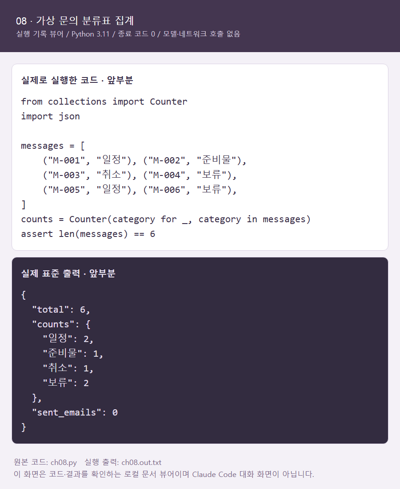
이제 다음 권의 이야기는 메모가 쌓일수록 길을 만들어야 해요로 이어져요. 지금까지 남긴 파일과 판단이 다음 단계에서 어떤 역할을 하는지 계속 살펴볼 거예요.
제9권 · 메모가 쌓일수록 길을 만들어야 해요
파일은 많아졌는데 필요한 결정은 찾기 어려웠어요. 묘대리는 회의 메모를 여러 개 열었다 닫았지요. 묘사원은 새 폴더를 만들기보다 두 노트 사이에 링크를 하나 붙였어요. “무슨 자료를 보고 결정했는지 길을 남겨요.”
Obsidian은 Markdown 파일을 읽고 서로 연결하는 도구예요. 처음부터 많은 기능을 사용할 필요는 없어요. 원본 메모와 요약을 나누고, 요약에서 원본으로 돌아갈 수 있게 연결하는 것부터 시작해도 돼요. 앱이 없어도 같은 파일을 일반 편집기로 열 수 있으므로, 먼저 자료가 어떻게 남아야 하는지 이해하기 좋아요.
연결은 파일 수를 늘리기 위한 장식이 아니에요. 나중에 떠올릴 질문에 답할 수 있어야 해요. 왜 일정을 바꿨는지, 어떤 문의가 결정에 영향을 주었는지 알 수 있다면 좋은 연결이에요. 잘못된 메모를 정정할 때는 그 내용을 사용한 안내문도 함께 살펴보는 이유를 이 장에서 이어 설명해요.
노트와 원본 보존
Obsidian은 Markdown 파일을 편집하고 연결하는 지식 관리 도구예요. 이 책의 필수 연습은 일반 텍스트 편집기로도 가능해요. 원본 메모를 남기고 요약을 별도 파일로 두면 AI가 생략한 맥락을 확인할 수 있어요.
원본 메모와 요약을 다른 파일에 두면 정보가 어떻게 줄어들었는지 확인할 수 있어요.
회의의 제안이 결정으로 바뀌는 오류는 요약만 읽어서는 알아차리기 어려워요. 원본 경로를 요약에 연결하고 결정·제안·확인 필요를 나누면 비교가 쉬워져요. Obsidian을 사용하지 않더라도 Markdown 파일로 같은 구조를 만들 수 있어요. 앱의 기능보다 자료를 보존하고 참조하는 원리를 먼저 이해하는 것이 중요해요.
먼저 notes 폴더에 원본 메모를 만들어요. 그다음 요약은 다른 파일에 저장해요. 마지막으로 요약 끝에 원본 경로를 적어요.
AI에게 이렇게 요청해요이 회의 메모를 요약하되 원본을 수정하지 마. 결정, 제안, 확인 필요를 구분하고 원본 경로를 남겨줘.
회의의 제안 발언이 요약에서 확정 일정으로 바뀌었습니다. 제안을 결정으로 바꾼 오류예요. 실제 결정이 있었는지 원본을 확인하고 없으면 제안 상태로 복구해요.
원본을 남기면 요약을 고칠 수 있어요
회의 메모를 읽는 일은 길고 복잡할 수 있어요. 그래서 핵심만 요약하고 싶어지지요. 하지만 요약만 남기면 나중에 무엇이 빠졌는지 확인하기 어려워져요. 묘사원은 원본 메모를 지우지 않고 요약을 별도 파일에 저장했어요. 짧은 문장으로 읽다가 의문이 생기면 다시 돌아갈 수 있게 한 것이에요.
특히 제안과 결정은 요약에서 섞이기 쉬워요. “주말이면 좋겠어요”라는 발언이 “주말로 정했다”가 되어서는 안 돼요. 문장이 짧아질수록 조건과 미정 상태가 사라질 수 있으므로 원본의 표현을 살펴봐야 해요. 결정을 요약할 때는 무엇이 확정됐고 무엇이 논의 중인지 나누어 적는 편이 좋아요.
원본과 요약을 구분하는 것은 내용이 많아져도 중요한 원리예요. 여러 문서를 읽어 만든 보고서도 어떤 원천을 사용했는지 알 수 있어야 해요. 파일을 나누어 두면 처음의 자료와 나중의 해석을 같은 사실로 취급하지 않을 수 있어요.
연결할 이유
내부 링크는 노트를 서로 연결하는 방법이에요. 링크 수보다 어떤 질문을 해결하기 위해 연결했는지가 중요해요. 행사 결정 노트에서 문의 요약 노트로 연결하면 왜 그 결정을 했는지 따라갈 수 있어요.
노트 연결은 단순한 장식이 아니라 판단의 이동 경로예요.
행사 결정에서 문의 요약으로 연결하면 어떤 자료를 보고 결정했는지 따라갈 수 있어요. 내부 링크를 만들었어도 대상 파일이 없거나 이름이 달라지면 연결은 불완전해요. 파일 이름을 바꿀 때 앱이 링크를 갱신하는지 실제 설정과 결과를 확인해요. 일반 Markdown 링크와 앱 전용 내부 링크를 혼용한다면 다른 편집기에서도 읽을 수 있는지도 고려해요.
먼저 두 노트의 관계를 한 문장으로 적어요. 그다음 Markdown 링크나 Obsidian 내부 링크를 선택해요. 마지막으로 대상 파일이 있는지 확인해요.
[[행사-결정]]
[문의 요약](inquiry-summary.md)노트 이름을 바꾼 뒤 참조 링크가 이전 이름을 가리켜요. 대상 파일의 새 이름과 실제 경로를 확인하고 참조 링크를 갱신해요. 앱의 자동 갱신 설정에 의존했다면 동작 결과도 확인해요.
Markdown은 어떤 앱에서도 읽을 수 있는 출발점이에요
Obsidian은 Markdown 파일을 편집하고 서로 연결하는 도구예요. 이 책의 예제는 일반 텍스트 편집기로도 열 수 있는 파일을 사용해요. 앱을 먼저 익히느라 내용의 구조를 놓치지 않도록 하기 위해서예요. 제목과 본문, 링크가 어떻게 남는지 이해하면 다른 도구에서도 같은 자료를 읽기 쉬워요.
# 행사 결정
일정은 아직 제안 단계다.
장소는 작은도서관을 기준으로 확인한다.
관련 자료: [문의 요약](summary.md)대괄호 안에는 화면에서 읽을 링크 이름이 들어가고 소괄호 안에는 연결할 대상이 들어가요. summary.md가 같은 폴더에 있다면 짧은 상대 경로로 연결할 수 있어요. 다른 폴더에 있다면 그 관계에 맞게 경로를 적어야 해요. 문법만 맞게 썼다고 대상 파일이 생기는 것은 아니에요.
Obsidian에서는 [[행사 결정]]처럼 내부 링크를 사용할 수도 있어요. 이런 표현이 다른 편집기에서도 어떻게 보이는지는 사용하는 도구에 따라 달라질 수 있어요. 다른 사람과 파일을 공유한다면 어디에서 읽을지 생각하고 형식을 선택하면 좋아요.
태그보다 찾을 질문
태그를 많이 만드는 것만으로 검색이 쉬워지는 것은 아니에요. 다시 찾을 질문을 정하면 제목과 본문의 기준을 만들 수 있어요. “왜 일정을 바꿨지?”에 답하려면 변경 이유와 결정일이 기록돼 있어야 해요.
자료를 다시 찾는 순간을 상상하면 이름을 정하기 쉬워져요.
“회의 메모”보다 날짜와 주제가 있는 제목이 검색에 도움이 될 수 있어요. 그러나 모든 단어를 제목에 넣으면 이름이 길어져 오히려 읽기 어려워요. 제목에는 주제와 시점을, 본문 첫 부분에는 결정과 이유를 둬요. 정리 체계는 실제로 찾을 수 있는지 시험하며 바꿔요. 태그의 수보다 같은 의미를 일관되게 사용하는지가 더 중요해요.
먼저 미래에 다시 물을 질문 세 개를 적어요. 그다음 그 질문에 필요한 필드를 정해요. 마지막으로 노트 제목과 첫 문단에 핵심 맥락을 넣는다.
AI에게 이렇게 요청해요이 노트를 다음 달에도 찾을 수 있도록 제목, 날짜, 결정 이유, 관련 파일을 포함한 구조로 정리해줘.
파일 이름이 회의정리최종진짜.md여서 내용을 알기 어려워요. 날짜와 주제를 포함한 2026-11-02-행사일정-결정.md 같은 이름이 역할을 설명해요. 이름 변경 후 참조 경로도 확인해요.
링크가 있어야 하는 이유를 생각해요
묘대리는 모든 메모를 서로 연결하려고 했어요. 링크가 많으면 지식이 풍부해 보일 것 같았거든요. 묘사원은 다음 달에 어떤 질문을 할지 먼저 떠올려보라고 했어요. “왜 날짜를 바꿨지?”라는 질문에 답하려면 결정 메모에서 원본 회의나 문의로 돌아갈 길이 필요하지요.
반면 내용의 관계를 설명할 수 없는 링크는 읽는 사람을 다른 곳으로 보내기만 할 수 있어요. 링크를 만들 때 짧은 이유를 적으면 도움이 돼요. 이 결정이 어떤 문의를 반영했는지, 이 요약이 어떤 원본에서 나왔는지 설명해보세요. 관계를 문장으로 말할 수 있으면 연결도 자연스러워져요.
제목과 태그도 같은 기준으로 볼 수 있어요. 많이 붙이는 것보다 다시 찾을 때 어떤 말을 검색할지 생각하면 돼요. 날짜와 주제를 제목에 넣고 첫 문단에 결정을 적어두면 파일 목록만 볼 때와 본문을 열었을 때 모두 내용을 이해하기 쉬워요.
지식의 정정
한 번 저장한 메모도 틀릴 수 있어요. 정정 시에는 무엇을 언제 왜 고쳤는지 남겨요. 이미 다른 문서가 그 메모를 인용했다면 영향받는 문서도 확인해야 해요.
메모를 정정하면 그 내용을 사용한 다른 문서도 확인해야 해요.
장소가 바뀐 결정 메모를 고쳤더라도 이미 만든 안내문이 그대로라면 전체 정보는 아직 어긋나 있어요. 정정 기록에는 이전 내용과 새로운 근거, 영향받는 문서를 남겨요. 이전 파일을 모두 없애는 대신 정본과 과거 기록을 구분하면 변경 이유를 설명할 수 있어요. 원천 자료의 변경이 어떤 결과로 이어졌는지 추적하는 습관은 책의 판 관리에도 이어져요.
먼저 틀린 주장과 올바른 근거를 나란히 적어요. 그다음 정정 날짜와 이유를 기록해요. 마지막으로 관련 링크 문서의 내용을 확인해요.
AI에게 이렇게 요청해요이 결정 메모의 장소를 정정해줘. 수정 이유와 영향받는 안내문 경로를 변경 기록에 남겨줘.
결정 메모의 장소를 고쳤지만 안내문은 이전 장소를 담고 있어요. 참조하는 안내문과 답장 초안을 찾아 장소를 갱신하고 원천과 다시 비교해요. 수정된 한 파일만으로 전체 정정 완료를 선언할 수 없어요.
이름을 바꾸면 길도 바뀔 수 있어요
파일 이름이 달라지면 링크가 이전 이름을 가리킬 수 있어요. 사용하는 앱이 자동으로 갱신해주는 경우에도 실제 설정과 결과를 확인해야 해요. 이 책의 로컬 코드는 파일의 존재를 확인하는 단순한 예제를 보여줘요. 앱의 모든 링크 처리 동작을 대신 검증한 프로그램은 아니에요.
notes/
decision.md
summary.mddecision.md 안에서 summary.md로 연결했다고 생각해봐요. summary.md를 inquiry-summary.md로 바꾸었다면 참조도 새 이름과 맞아야 해요. 파일은 그대로 있는데 링크만 틀린 경우와 대상 자체가 없는 경우를 나누어 볼 수 있어요. 어느 쪽인지 알면 복구할 부분이 보이지요.
링크 검사는 내용 검사와도 달라요. 파일이 존재해도 엉뚱한 요약을 가리킬 수 있어요. 프로그램으로 대상의 존재를 확인한 뒤에는 그 내용이 현재 문맥에 맞는지도 읽어봐야 해요. 도구가 확인하기 쉬운 부분과 사람이 해석해야 할 부분을 나누는 예예요.
메모를 고쳤다면 그다음 문서도 봐요
장소가 바뀐 결정 메모를 고쳐도 이미 만든 안내문은 자동으로 달라지지 않을 수 있어요. 그 내용을 사용한 답장 초안이나 발표 개요도 예전 장소를 담고 있을 수 있지요. 정정은 한 파일의 글자를 바꾸는 일로 끝나지 않아요. 어떤 결과가 그 정보를 사용했는지 찾아보는 과정이 이어져요.
수정 기록에는 바꾼 이유를 남기는 편이 좋아요. 이전 자료가 틀렸던 것인지 실제 결정이 바뀐 것인지에 따라 읽는 사람이 이해할 맥락이 달라져요. 조용히 덮어쓰기만 하면 과거 문서와 현재 문서가 왜 다른지 설명하기 어려워질 수 있어요.
묘사원은 정리된 노트를 보고 파일 개수를 칭찬하지 않았어요. 필요한 결정에서 근거로 돌아갈 수 있는지 확인했지요. 지식 작업실의 목적은 메모를 많이 쌓는 데 있지 않아요. 지금 하는 일에 필요한 내용을 다시 찾아 읽고, 틀린 부분을 고치고, 다음 판단으로 이어가는 데 있어요.
이름이 바뀐 메모를 다시 찾았어요
묘대리는 파일을 정리하며 summary.md를 inquiry-summary.md로 바꾸었어요. 이름은 더 분명해졌지만 결정 메모의 링크는 여전히 이전 파일을 가리켰지요. 원본이 사라진 것이 아니라 찾아가는 길이 옛 이름에 남은 것이에요.
먼저 실제 파일 목록에서 새 이름을 확인했어요. 그다음 어떤 문서가 이전 이름을 참조하는지 읽었지요. 앱의 자동 갱신을 사용했다면 그 결과도 확인해야 해요. 설정이 켜져 있다는 사실과 현재 링크가 맞다는 사실은 다르니까요.
링크의 이름과 경로를 고친 뒤에는 파일을 열어 내용을 읽었어요. 이름이 비슷한 다른 요약을 가리키고 있지는 않은지 확인한 것이지요. 존재 검사와 의미 검사가 이어지는 순서예요.
작은 노트 묶음에서는 사람이 몇 번 열어보는 것으로도 확인할 수 있어요. 자료가 많아지면 링크의 대상이 있는지 검사하는 코드를 곁들일 수 있고요. 그래도 어떤 관계를 남기려는지 사람이 이해할 수 있어야 해요.
정리는 폴더가 깔끔해 보이는 순간에 끝나지 않아요. 나중에 필요한 질문에서 답과 근거로 돌아갈 수 있어야 해요. 묘사원이 파일 이름보다 연결의 이유를 먼저 물었던 까닭이에요.
코드로 살펴보는 같은 원리
여기서는 앞의 원리를 작은 Python 프로그램으로 옮겨 보았어요. Claude Code 모델을 호출하는 코드는 아니고, 파일을 만들고 읽거나 자료를 비교하는 과정을 눈으로 확인하기 위한 보조 예제예요. 전체 파일과 실행 결과를 나란히 읽으면 자연어 요청과 정해진 프로그램의 역할이 어떻게 다른지 이해하는 데 도움이 돼요.
from pathlib import Path
import re
root = Path("run") / "09-notes"
root.mkdir(parents=True, exist_ok=True)
(root / "decision.md").write_text(
"# 결정\n[문의 요약](summary.md)\n", encoding="utf-8")
(root / "summary.md").write_text(
"# 문의 요약\n보류 문의 2건\n", encoding="utf-8")
text = (root / "decision.md").read_text(encoding="utf-8")
targets = re.findall(r"\]\(([^)]+)\)", text)
for target in targets:
exists = (root / target).is_file()
print(target, "exists:", exists)
assert exists
print("Obsidian UI: NOT TESTED")
코드는 두 Markdown 파일을 실제로 만들어요. decision.md에는 summary.md로 가는 링크를 넣고 summary.md에는 짧은 요약을 적어요. 같은 폴더에 있으므로 링크 대상은 상대 이름 하나로 표현할 수 있어요.
정규식은 이 예제에서 사용하는 단순한 링크의 소괄호 안을 골라요. 정규식은 문자의 모양을 찾는 방법이에요. 모든 Markdown 문법이나 외부 URL을 완전하게 해석하는 도구로 만든 것이 아니므로 적용 범위를 넓혀 말하지 않아요.
찾은 이름을 root와 연결한 뒤 is_file()로 실제 파일인지 확인해요. 이름이 맞게 적혀 있어도 대상 파일이 없다면 False가 될 수 있어요. assert는 현재 예제의 링크 대상이 실제로 존재해야 한다는 조건을 확인해요.
이 검사는 파일 존재에 관한 것이에요. summary.md의 내용이 현재 결정과 관련 있는지까지 판단하지는 않아요. 존재 검사 뒤에는 사람이 문맥을 읽어야 해요. Obsidian의 화면이나 자동 이름 변경 기능을 확인한 프로그램도 아니라는 점을 출력에 남겨두었어요.
노트가 많아지면 이런 작은 존재 검사는 깨진 길을 찾는 데 도움이 될 수 있어요. 그렇지만 링크가 많다는 수치만으로 좋은 지식 구조라고 말할 수는 없어요. 다시 찾을 질문에 답할 수 있는 관계가 남아 있는지가 더 중요해요.
이 파일은 Python 3.11에서 실제로 실행했어요. 결과는 다음과 같아요. 긴 출력값은 판면에 맞춰 이어서 읽을 수 있게 표시했으며 원본 출력 파일도 함께 보존했어요.
summary.md exists: True
Obsidian UI: NOT TESTED
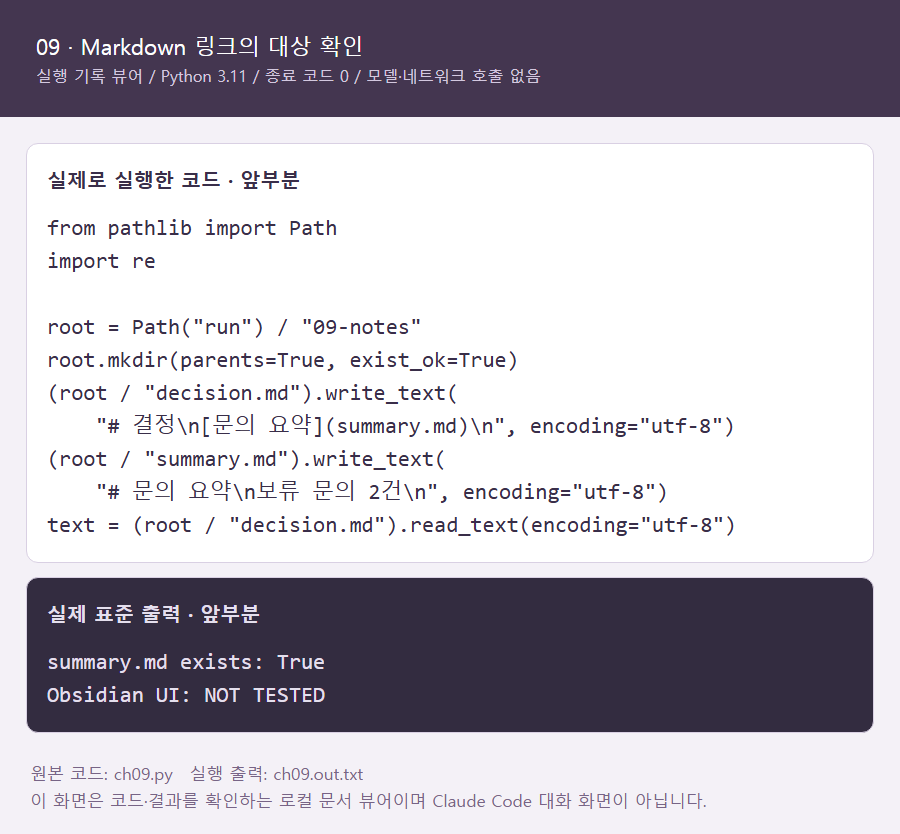
이제 다음 권의 이야기는 짧게 말하는 것과 잘 맡기는 것로 이어져요. 지금까지 남긴 파일과 판단이 다음 단계에서 어떤 역할을 하는지 계속 살펴볼 거예요.
제10권 · 짧게 말하는 것과 잘 맡기는 것
묘대리는 요청을 줄이면 사용량도 줄어들 것 같았어요. “정리해줘.” 세 글자만 남기자 이번에는 결과를 다시 고쳐달라는 대화가 길어졌지요. 묘사원은 웃지 않고 원본 파일을 가리켰어요. “빼야 할 건 군더더기지, 필요한 조건이 아니에요.”
사용량을 관리하는 일은 문장을 무조건 짧게 만드는 일과 달라요. 관련 없는 맥락을 덜어내되 결과를 판단할 자료와 조건은 남겨야 해요. 잘못된 파일을 읽고 그럴듯한 답을 받으면 다시 확인하고 고치는 일이 늘어날 수 있어요. 그래서 이 장에서는 필요한 입력을 고르고 긴 대화를 정리하는 방법을 먼저 다뤄요.
실제 토큰과 청구액은 제품에서 관찰한 값을 기준으로 확인해야 해요. 이 책은 특정 절감률을 약속하지 않아요. 작업의 조건과 결과를 함께 기록하면 무엇이 도움이 됐는지 자신의 업무 안에서 판단할 수 있어요. 작은 비교가 일반적인 제품 성능을 증명하는 것은 아니라는 점도 함께 짚어봐요.
토큰은 글자 수와 다르다
토큰은 모델이 텍스트를 처리하는 단위이며 한국어 글자 수와 같은 수가 아니에요. 이 책은 특정 압축률이나 비용 절감률을 보장하지 않아요. 결과 품질과 사용량을 함께 관찰해야 짧은 요청이 실제로 유용한지 알 수 있어요.
사용량은 결과의 짧고 긴 정도만으로 해석할 수 없어요.
입력을 다시 보내는 횟수, 이전 맥락과 도구 결과도 작업에 영향을 줘요. 이 책에서는 계정별 청구액이나 절감률을 계산했다고 주장하지 않아요. 관찰할 수 있는 값은 실제 화면이나 출력에서 가져와 시점과 함께 적어요. 응답을 줄이더라도 근거가 빠져 재작업이 늘었다면 전체 작업이 개선됐다고 단정하기 어려워요.
먼저 작업의 입력 크기와 결과 길이를 적어요. 그다음 제품에서 제공하는 사용량 표시를 확인해요. 마지막으로 값을 직접 관찰하지 못하면 미관찰로 기록해요.
AI에게 이렇게 요청해요이번 요청의 목적과 필수 입력만 정리해줘. 원본에 있는 날짜와 조건은 생략하지 마.
응답이 짧아졌으므로 전체 비용과 품질도 개선됐다고 생각해요. 짧아도 핵심 정보가 빠지면 재요청이 늘 수 있어요. 전체 작업의 반복과 품질을 함께 비교해야 해요.
글자 수만 보고 사용량을 알 수는 없어요
토큰은 모델이 텍스트를 처리하는 단위예요. 글자 수나 문장 수와 같은 값으로 취급하면 안 돼요. 특히 한국어에서 몇 글자가 정확히 몇 토큰이라고 단정하면 실제 사용량과 다를 수 있어요. 이 책은 짧은 응답을 만들면 얼마를 아낀다는 식의 수치를 약속하지 않아요.
업무를 보는 단위도 중요해요. 한 번의 답이 짧아졌지만 정보가 빠져 세 번 다시 물었다면 전체 과정이 좋아졌다고 말하기 어렵지요. 입력한 자료와 이전 맥락, 도구가 반환한 내용, 수정 대화를 함께 생각해야 해요. 사용량은 결과 품질과 떨어진 숫자만으로 판단하지 않는 편이 좋아요.
묘대리는 안내문 요청을 “써줘”로 줄였어요. 그런데 날짜와 독자, 결과 경로가 빠지자 다시 설명할 것이 많아졌지요. 묘사원은 중요한 조건까지 줄이지 말라고 했어요. 덜어낼 것은 관련 없는 맥락이지 결과를 판단할 기준이 아니에요.
맥락을 골라 주기
관련 없는 과거 대화와 큰 파일을 계속 포함하면 중요한 조건을 찾기 어려워질 수 있어요. 입력을 줄일 때는 근거와 제약을 지우지 않고 작업에 필요한 부분을 선택해요.
관련 파일을 정확히 지정하면 잘못된 맥락의 유입을 줄일 수 있어요.
일정 검수에 다른 행사 자료가 섞이면 날짜가 혼동될 수 있어요. 현재 대상과 원본을 이름으로 명시하고, 읽지 않아도 되는 자료를 구분해요. 그렇다고 입력을 무조건 짧게 만들 필요는 없어요. 결과를 판단할 근거와 제약은 유지해야 해요. 자료를 제외할 때는 어떤 판단에 영향을 주지 않는지 설명할 수 있어야 해요.
먼저 이번 결과에 필요한 파일을 목록으로 정해요. 그다음 불필요한 자료를 제외한 이유를 적어요. 마지막으로 누락되면 안 되는 사실은 따로 표시해요.
AI에게 이렇게 요청해요이번 작업은 notice.md의 날짜 검수다. event.md와 notice.md만 읽고 다른 책 자료는 참조하지 마.
여러 행사 자료가 함께 들어와 날짜가 혼동돼요. 검수 대상과 원본 파일을 명시하고 다른 행사 자료를 제외해요. 대상 ID를 문서와 요청에 함께 쓰면 혼동을 줄일 수 있어요.
읽어야 할 파일을 고르면 맥락이 선명해져요
현재 행사와 지난 행사의 자료가 함께 있으면 일정이 혼동될 수 있어요. 이번 검토가 event.md와 notice.md의 날짜 비교라면 두 파일을 정확히 지정할 수 있어요. 다른 행사의 기록은 필요하지 않다고 설명하고요. 이렇게 입력을 고르면 무엇을 근거로 판단해야 하는지 분명해져요.
파일을 적게 읽는 것 자체를 목표로 삼지는 않아요. 중요한 정책 문서를 제외하면 짧은 답을 받아도 필요한 판단을 못 할 수 있어요. 제외한 자료가 결과에 영향을 주지 않는지 생각해봐야 해요. 필요한 자료를 골랐다는 말은 적은 자료를 줬다는 말과 다르지요.
이 장의 코드는 네 파일 중 현재 작업에 필요한 두 파일을 골라 이름을 출력해요. 토큰 사용량을 측정하는 프로그램이 아니에요. 포함과 제외를 명시하는 원리를 작은 자료로 보여주는 것이지요. 숫자를 관찰하지 않았다면 측정하지 않았다고 말하는 편이 정확해요.
요약 뒤 이어가기
긴 대화를 정리할 때는 결정, 경로, 남은 결함을 보존해요. Claude Code의 /compact 같은 기능은 대화 맥락을 요약하는 수단이에요. 요약 뒤에도 중요한 사실은 원천 파일을 기준으로 다시 확인해요.
대화 요약은 긴 작업을 이어가는 도구이지만 원천 파일을 대신하지 않아요.
요약에는 목표와 결정, 경로, 남은 결함을 보존하는 편이 좋아요. 세션을 이어갈 때는 요약과 실제 파일을 함께 읽어 마지막 변경이 반영됐는지 확인해요. 참가비 미정 같은 상태가 요약에서 빠졌다면 원본을 기준으로 복구해요. 요약문이 자연스럽게 읽힌다는 이유로 사실 검수를 끝내지 않아요.
먼저 요약에 남길 항목을 골라요. 그다음 파일 경로와 미완료 결함을 적어요. 마지막으로 새 작업 시작 전에 요약과 파일이 일치하는지 확인해요.
/compact Preserve file paths, decisions, and open defects.대화 요약에서 참가비 미정이라는 정보가 빠졌습니다. event.md와 검수 기록을 다시 읽어 미정 항목을 복구해요. 압축된 대화가 원본 입력보다 우선하는 사실 근거가 되지는 않아요.
긴 대화를 짧게 이어가는 방법
대화가 길어지면 중요한 결정이 여러 곳에 흩어져 있을 수 있어요. 처음에 정한 독자와 마지막에 남은 결함을 함께 보려면 많은 문장을 다시 읽어야 하지요. 이때 다음 작업에 필요한 내용을 짧게 정리해둘 수 있어요. 목표, 파일 경로, 결정, 남은 일이 좋은 출발점이에요.
Claude Code의 공식 문서는 /compact 같은 대화 정리 기능을 설명해요. 사용할 때는 무엇을 보존할지 알려줄 수 있어요. 경로와 결정, 열린 결함을 남겨달라는 식이지요. 다만 요약이 생겼다고 원본을 확인할 필요가 없어지는 것은 아니에요. 요약에도 생략과 오류가 있을 수 있어요.
/compact Preserve file paths, decisions, and open defects.이 문장은 설명용 입력 예시예요. 파일 경로는 결과를 찾는 길이고, 결정은 이미 합의한 조건이며, 열린 결함은 다음에 할 일이에요. 이 세 가지가 남아 있으면 작업을 다시 시작할 때 전체 대화를 모두 복구하지 않고도 방향을 잡는 데 도움이 돼요.
요약을 읽은 뒤에는 실제 파일도 열어보세요. 참가비 미정이라는 내용이 요약에서 빠졌다면 행사 원본을 기준으로 복구할 수 있어요. 요약문이 매끄럽게 이어져도 그 문장 자체가 새로운 사실 근거가 되는 것은 아니에요. 원천 자료와 현재 산출물이 판단의 기준이라는 원칙은 그대로예요.
재작업을 줄이는 실험
실험에서는 바꾼 조건을 하나로 제한해야 결과 차이를 해석하기 쉬워요. 같은 입력을 사용하되 첫 요청은 모호하게, 두 번째는 종료 조건을 명확히 써 봐요. 이는 절감 효과를 입증하는 연구가 아니라 개인 작업 관찰이에요.
작업 개선을 비교하려면 입력과 판정 기준을 고정해요.
두 요청의 차이를 하나로 제한해야 결과가 왜 달라졌는지 설명하기 쉬워요. 수정 횟수와 누락 항목, 확인에 쓴 시간을 관찰할 수 있지만 작은 비교를 일반적 성능 수치로 발표하지는 않아요. 결과가 좋았다면 어떤 조건에서 유용했는지 남겨요. 나쁜 결과가 나왔다면 입력 부족인지 기준의 문제인지 구분해 다음 요청을 바꿔요.
먼저 동일한 가상 입력과 평가표를 준비해요. 그다음 요청서의 명확성만 바꿔 비교해요. 마지막으로 수정 횟수와 누락 항목을 기록해요.
AI에게 이렇게 요청해요날짜·장소 일치와 미정 표시를 통과 기준으로 삼고, 충족되면 초안 작업을 종료해줘.
두 번의 관찰 중 한 번이 더 빨랐다는 이유로 성능 우위를 주장하려 해요. 작은 관찰만으로 일반적 우위를 입증할 수 없어요. 조건과 결과를 제한해 기록하고 반복 시험이 필요함을 밝혀요.
새 작업과 이어가는 작업을 구분해요
관련 없는 새 일을 시작하면서 이전 대화의 모든 맥락을 계속 사용하는 것이 항상 도움이 되지는 않아요. 앞의 행사 날짜나 문체 조건이 다른 작업에 섞일 수도 있거든요. 새 일이라면 필요한 지침과 자료를 다시 골라주는 편이 분명할 수 있어요.
반대로 이어가는 작업이라면 이미 확인한 결과를 버리고 처음부터 조사하지 않도록 인계 메모를 가져와요. 어떤 파일을 어디까지 검토했는지 알 수 있으면 반복을 줄일 수 있어요. 대화를 유지할지 새로 시작할지는 길이만 보고 정하지 않고 작업의 관계를 기준으로 생각하면 돼요.
묘사원은 “새 창을 열면 다 해결돼요?”라는 질문에도 같은 대답을 했어요. 가져갈 정보와 놓고 갈 정보를 구분해야 한다고요. 도구의 버튼보다 업무의 맥락을 이해하는 일이 먼저예요. 정리 기능은 그 판단을 도와주는 수단이에요.
비교할 때는 조건을 함께 읽어요
두 요청의 결과를 비교하고 싶다면 입력 자료와 판정 기준을 같게 두는 편이 좋아요. 이번에는 요청의 범위만 바꾸어 보았는지, 결과 형식까지 바뀌었는지 알아야 차이를 설명할 수 있거든요. 여러 조건을 한꺼번에 바꾸면 무엇이 영향을 주었는지 판단하기 어려워져요.
결과를 볼 때는 수정 횟수와 누락 항목처럼 실제로 관찰한 내용을 남겨요. 한 번 빨랐다고 언제나 빠르다고 말하거나 작은 비교로 제품의 성능 우위를 입증했다고 표현하지 않아요. 자신의 업무에서 어떤 조건이 도움이 됐는지 제한해서 적는 편이 정확하고 실용적이에요.
이렇게 보면 사용량 관리는 단지 비용 이야기만은 아니에요. 다시 묻는 이유를 줄이고, 필요한 근거를 잃지 않고, 다음 사람이 이어받을 수 있게 하는 일이 함께 들어 있어요. 묘사원이 짧게 말하는 법보다 분명하게 맡기는 법을 먼저 가르치는 까닭이에요.
짧은 요청 때문에 대화가 길어졌어요
묘대리는 사용량을 아끼려고 안내문 요청에서 원본 경로와 독자 설명을 지웠어요. 결과가 나오자 자료에 없는 장소 설명이 들어 있었고 저장 위치도 다시 물어야 했지요. 요청은 짧아졌지만 결과를 고치는 대화는 길어졌어요.
묘사원은 덜어내도 되는 문장과 꼭 남아야 할 조건을 나누었어요. 이번 작업과 관계없는 과거 대화는 줄일 수 있어요. 반면 원본과 결과 경로, 미정 값의 처리 방식은 결과를 판단할 기준이므로 필요했지요.
한 번의 요청 길이만 보고 전체 작업의 효율을 판단하기는 어려워요. 같은 일을 끝내기 위해 몇 번 수정했는지와 누락이 얼마나 있었는지도 살펴봐야 해요. 그렇다고 이 작은 사례를 일반적인 절감률의 증거로 발표하지는 않아요.
실제 사용량을 볼 수 있다면 제품이 보여주는 값과 확인 시점을 남겨요. 추정한 글자 수를 청구액으로 바꾸어 적지 않아요. 단위와 조건이 다른 숫자를 같은 것으로 읽으면 비교가 어긋날 수 있어요.
요청을 정리하는 목적은 말수를 무조건 줄이는 데 있지 않아요. 같은 목표를 이해하고 확인하기 쉽게 만드는 데 있어요. 묘대리는 다시 경로와 독자 설명을 넣고, 이번 작업에 필요 없는 배경만 덜어냈어요.
코드로 살펴보는 같은 원리
여기서는 앞의 원리를 작은 Python 프로그램으로 옮겨 보았어요. Claude Code 모델을 호출하는 코드는 아니고, 파일을 만들고 읽거나 자료를 비교하는 과정을 눈으로 확인하기 위한 보조 예제예요. 전체 파일과 실행 결과를 나란히 읽으면 자연어 요청과 정해진 프로그램의 역할이 어떻게 다른지 이해하는 데 도움이 돼요.
files = {
"event.md": "현재 행사 원본",
"notice.md": "현재 안내문 초안",
"old-event.md": "이전 행사 자료",
"design.md": "표지 디자인 메모",
}
needed = ["event.md", "notice.md"]
selected = {key: files[key] for key in needed}
excluded = [key for key in files if key not in needed]
for name, purpose in selected.items():
print("include:", name, purpose)
for name in excluded:
print("exclude:", name)
print("Token usage and billing: NOT MEASURED")
files는 사용할 수 있는 자료의 이름과 역할을 묶은 사전이에요. 현재 행사 원본과 안내문 외에 이전 행사 자료와 디자인 메모도 있어요. needed에는 이번 날짜 검수에 필요한 두 파일만 적었어요.
selected를 만드는 줄은 needed의 각 이름으로 자료를 골라요. 이 과정에서는 왜 필요한지 사람이 이미 정한 기준을 적용해요. 단순히 파일이 작거나 이름이 짧아서 선택하는 것이 아니에요. 어떤 판단에 사용되는 자료인지 설명할 수 있어야 해요.
excluded는 원래 목록에 있지만 선택하지 않은 이름을 모아요. 포함한 자료와 제외한 자료를 함께 보여주면 입력 범위를 나중에 다시 읽기 쉬워요. 오류가 났을 때 필요한 정책 문서를 빼놓았는지, 다른 행사의 자료가 섞였는지도 확인할 수 있어요.
이 코드는 파일 내용을 모델에게 보내지 않아요. 실제 토큰 수나 비용을 계산하는 기능도 없어요. 그래서 마지막에 사용량과 청구를 측정하지 않았다고 분명히 출력해요. 입력 범위를 정리하는 도구와 사용량 측정 도구를 구분하는 예예요.
목적이 바뀌면 needed도 달라져요. 날짜 검수에서는 디자인 메모가 필요 없지만 표지 제작에서는 중요할 수 있어요. 한 번 제외한 파일을 모든 업무에서 불필요하다고 취급하지 않고 현재 목표를 기준으로 다시 고르면 돼요.
이 파일은 Python 3.11에서 실제로 실행했어요. 결과는 다음과 같아요. 긴 출력값은 판면에 맞춰 이어서 읽을 수 있게 표시했으며 원본 출력 파일도 함께 보존했어요.
include: event.md 현재 행사 원본
include: notice.md 현재 안내문 초안
exclude: old-event.md
exclude: design.md
Token usage and billing: NOT MEASURED
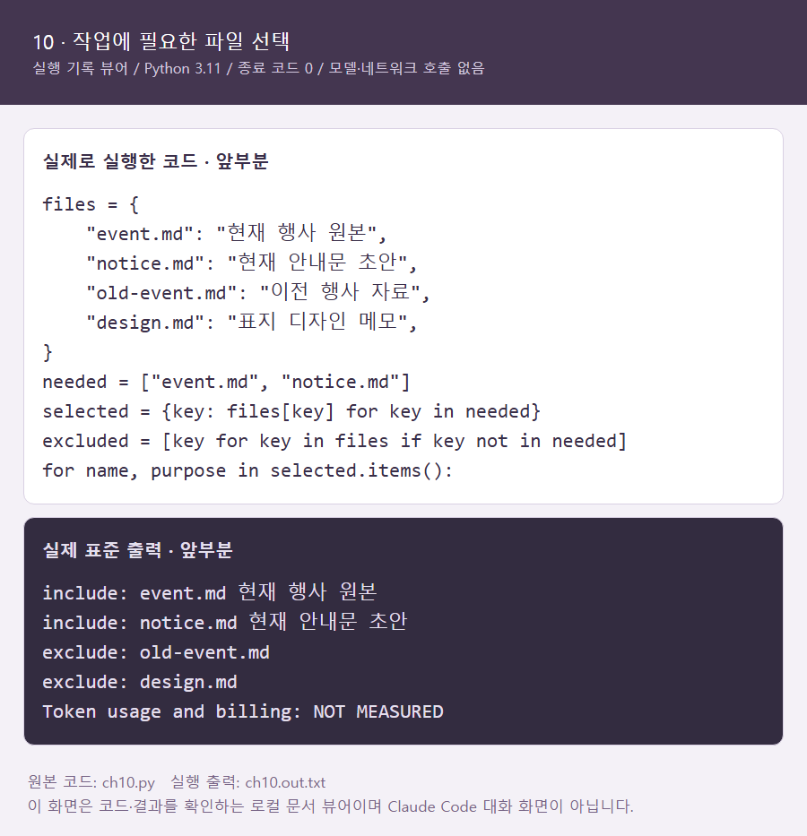
이제 다음 권의 이야기는 직함을 나누기 전에 일을 나누어요로 이어져요. 지금까지 남긴 파일과 판단이 다음 단계에서 어떤 역할을 하는지 계속 살펴볼 거예요.
제11권 · 직함을 나누기 전에 일을 나누어요
사무실 화면에는 직원이 다섯 명 있었어요. 묘대리는 이제 다섯 배로 빨라질 거라며 좋아했지요. 묘사원은 빈 산출물 폴더를 열었어요. “누가 뭘 만들지 정하지 않으면 다섯 명 다 기다리고 있을 수도 있어요.”
역할은 책임을 나누는 이름이고 실제 실행은 그 역할을 수행한 기록이에요. 한 AI가 저자와 검토자 단계를 차례대로 맡을 수도 있고, 별도의 세션이 나누어 수행할 수도 있어요. 화면의 캐릭터 수만으로 실행 수나 처리 속도를 알 수는 없어요. 중요한 것은 입력과 결과가 어떻게 인계되는지예요.
이 장에서는 서브에이전트와 팀이라는 기능을 설명하면서도 먼저 작은 역할 계약을 살펴봐요. 원고를 쓰는 사람과 결함표를 쓰는 사람이 같은 파일을 동시에 바꾸지 않게 하면 통합이 쉬워져요. 병렬로 나눌 이유가 있는 작업과 한 세션에서 순서대로 하면 되는 작업을 구분하는 감각도 여기서 익힐 수 있어요.
역할과 실행은 다르다
문서에 저자와 검토자 역할을 적어도 두 세션이 실제로 실행되는 것은 아니에요. 한 AI가 순서대로 역할을 수행할 수도 있어요. 화면에서는 역할 설계, 배정 상태, 실제 실행 기록을 구분해 보여줘야 해요.
사무실 화면의 캐릭터는 역할을 설명하는 표현이에요.
실제로 몇 개의 실행이 있었는지는 실행 기록으로 확인해야 해요. 한 AI가 저자와 검토자 단계를 순서대로 수행할 수도 있어요. 그래서 화면에는 배정된 업무와 실제 수행 상태를 구분해요. 회의 소집으로 캐릭터가 이동했다면 회의 상태의 변화가 근거이고, 원고 작성 완료는 저장된 파일과 검수 기록이 근거예요. 서로 다른 사건을 같은 완료 표시로 묶지 않아요.
먼저 필요한 책임을 역할로 묶는다. 그다음 실제 실행 주체와 순서를 적어요. 마지막으로 각 결과가 저장될 파일을 정해요.
AI에게 이렇게 요청해요이번에는 한 세션에서 저자 단계와 검토 단계를 순서대로 수행한다. 단계별 결과와 근거를 분리해 보고해줘.
움직이는 캐릭터 다섯 명이 독립 AI 다섯 명의 실행으로 설명됐습니다. 실행 ID, 시작·종료 기록, 담당 작업과 산출물이 필요해요. 시각적 캐릭터 수는 독립 실행 수를 입증하지 않아요.
역할을 나누면 무엇이 달라질까요
한 사람이 글을 쓰고 바로 검토하면 자신의 의도를 이미 알고 있어서 빠진 설명을 놓칠 수 있어요. 역할을 나누는 이유는 단순히 직원 수를 늘리기 위해서가 아니에요. 서로 다른 관점과 결과를 구분해 작업을 확인하기 위해서예요. 다만 역할 이름만 다르게 붙인다고 독립적인 검수가 자동으로 생기는 것은 아니에요.
묘대리는 저자와 검토자라는 이름을 붙이고 같은 파일을 동시에 수정하게 하려고 했어요. 묘사원은 먼저 결과를 나누었지요. 저자는 원고를 쓰고 검토자는 결함표를 남기게 했어요. 이렇게 하면 검토자가 발견한 문제와 저자가 반영한 수정이 다른 자료로 남아요. 어떤 의견이 어떻게 처리됐는지도 읽을 수 있어요.
한 AI가 이 두 역할을 순서대로 수행하는 것과 별도 세션 두 개가 나누어 일하는 것은 다른 실행 구성이에요. 화면에서는 둘 다 캐릭터로 표현할 수 있지만 실제 운영에서는 구분해서 말해야 해요. 언제 시작했고 어떤 입력을 사용했고 무엇을 만들었는지 기록이 있어야 실행을 설명할 수 있어요.
서브에이전트의 계약
공식 문서는 별도 맥락에서 특정 과제를 수행하는 서브에이전트를 설명해요. 맡길 일은 독립적으로 설명 가능해야 해요. 검토자는 원고를 읽고 결함을 보고하도록 제한하고 직접 수정은 다른 단계로 둘 수 있어요.
서브에이전트에게 맡길 업무도 처음 보는 담당자가 이해할 수 있어야 해요.
입력 파일과 비교 기준, 허용 행동, 결과 형식을 함께 전달해요. 원고를 읽고 결함을 반환하는 검토자라면 파일 수정은 허용하지 않는 방식으로 역할을 나눌 수 있어요. 결과가 돌아오면 위치와 근거를 실제 원고에서 확인해요. 별도의 맥락에서 작업했다는 사실만으로 검수의 정확성이 보장되지는 않기 때문이에요.
먼저 입력 경로와 검토 범위를 정해요. 그다음 허용 행동과 결과 형식을 적어요. 마지막으로 반환받은 결과를 원본과 대조해요.
AI에게 이렇게 요청해요notice.md를 event.md와 비교해 결함만 보고한다. 파일은 수정하지 않는다. 결과에는 위치·기대값·실제값을 포함한다.
원고 작성과 그 원고의 최종 검수를 같은 단계에서 처리하려 해요. 작성 의도와 검수 판단이 섞일 수 있어요. 작성과 검토 단계를 분리하고 검토 기준을 고정하면 차이를 확인하기 쉬워요.
맡기는 자료를 작은 봉투처럼 준비해요
다른 담당자에게 과제를 넘길 때는 대화 전체를 함께 알고 있다고 가정하지 않아요. 처음 보는 사람이 받는 봉투라고 생각해보세요. 원본 경로와 대상 경로, 비교할 항목, 결과를 남길 방식이 들어 있어야 해요. 이 네 가지가 있으면 이전 대화를 몰라도 작업을 이해하기 쉬워져요.
검토자의 봉투에는 “날짜와 장소를 원본과 비교한다”는 범위가 들어갈 수 있어요. 파일을 직접 고칠지 차이만 보고할지도 적어요. 반환 결과에는 위치와 기대값, 실제값이 필요하다고 설명하면 저자가 수정을 이어가기 쉬워요. 맡긴 사람도 어떤 근거로 검토했는지 확인할 수 있고요.
대상: draft/notice.md
원본: input/event.md
범위: 날짜, 시간, 장소, 확인 필요 항목
행동: 읽고 비교한다. 원고는 수정하지 않는다.
반환: 위치, 기대값, 실제값, 판단 이유이것은 제품 설정 파일이 아니라 역할을 설명하는 문서 예시예요. 실제 권한을 제한하려면 사용하는 도구의 설정과 허용 동작도 확인해야 해요. 문서에 수정하지 말라고 적었다는 사실과 기술적으로 수정이 불가능하다는 상태는 다르지요.
팀이 필요한 경우
여러 세션의 협업은 공유할 목표와 통합 비용을 함께 만들어요. 공식 문서에서 agent teams는 실험 기능으로 설명돼요. 작은 안내문 하나는 순차 작업으로 충분할 수 있어요. 독립된 자료 조사처럼 병렬화할 이유가 있을 때 비교해요.
팀을 사용하면 동시에 진행하는 이익과 통합하는 비용이 함께 생겨요.
서로 다른 자료 조사처럼 독립적인 작업은 분리하기 쉽지만 한 문단을 동시에 고치는 작업은 충돌하기 쉬워요. 공식 문서에서 실험 기능으로 설명하는 항목은 사용 조건과 제약을 확인한 뒤 적용해요. 업무가 작다면 한 세션의 순차 단계가 더 단순할 수 있어요. 조직을 크게 보이게 만드는 것보다 결과를 확인하기 쉬운 구성이 우선이에요.
먼저 과제 간 의존 관계를 그린다. 그다음 동시에 진행 가능한 부분을 골라요. 마지막으로 통합할 사람과 판정 기준을 정해요.
AI에게 이렇게 요청해요이 업무를 단독 순차 작업과 역할 분담 작업으로 비교해줘. 공유 파일 충돌과 통합 비용을 포함해줘.
한 문단 수정에 여러 팀 세션을 동시에 쓰려 해요. 한 세션에서 수정하고 별도 검토 단계로 확인할 수 있어요. 병렬화 이익이 통합 비용보다 큰지 먼저 판단해요.
서브에이전트가 돌려주는 것을 읽어요
공식 문서는 특정 과제를 별도 맥락에서 수행하는 서브에이전트를 설명해요. 중요한 것은 반환받는 결과예요. 긴 조사 내용을 줄여서 받거나 특정 파일을 검토하게 할 수 있지만, 돌아온 내용을 현재 업무의 근거와 대조하는 단계는 여전히 필요해요.
검토 결과에 날짜가 틀렸다고 적혀 있다면 어느 원본과 비교했는지 읽어봐요. 원고를 수정하기 전에 기대값과 실제값이 맞는지 확인하면 잘못된 지적을 그대로 반영하는 일을 줄일 수 있어요. 별도 맥락에서 작업했다는 사실이 사실 확인을 대신하지는 않아요.
역할을 설명하는 파일에는 이름과 설명, 사용할 도구 같은 설정이 들어갈 수 있어요. 공식 문서의 tools 항목처럼 제공 도구를 제한하는 방식이 설명돼 있지만, 정확한 이름과 적용 범위는 현재 문서를 확인해야 해요. 오타로 실제 도구가 하나도 연결되지 않으면 역할 이름은 있어도 수행할 수 있는 일이 없을 수 있어요.
인계와 충돌
같은 파일을 여러 담당자가 동시에 수정하면 어떤 변경이 정본인지 모를 수 있어요. 파일 소유자와 인계 시점을 정하면 충돌을 줄일 수 있어요. 검토자는 결함표, 저자는 원고처럼 산출물을 분리해요.
파일 충돌을 줄이려면 누가 어디에 쓸지 정해요.
저자는 원고를, 검토자는 결함표를 맡는 방식이에요. 인계할 때는 사용한 입력 버전과 산출물 경로를 적어요. 두 사람이 같은 원고를 고쳤다면 한쪽을 바로 덮어쓰기보다 변경본을 보존하고 차이를 비교해요. 통합한 결과도 다시 검수해야 해요. 각 변경이 따로 옳더라도 함께 합쳤을 때 문맥이나 사실이 어긋날 수 있어요.
먼저 역할별 쓰기 가능 파일을 정해요. 그다음 인계할 때 버전과 경로를 적어요. 마지막으로 통합 후 사실과 형식을 다시 확인해요.
AI에게 이렇게 요청해요저자는 draft/notice.md, 검토자는 review/defects.md를 담당한다. 인계 시 입력 버전과 남은 결함을 기록한다.
검토자와 저자가 같은 원고의 서로 다른 사본을 수정했습니다. 두 변경본을 보존하고 차이를 비교해요. 정본과 통합 담당을 정한 뒤 필요한 수정을 모아 다시 검수해요.
팀은 통합할 사람이 있어야 해요
여러 세션을 동시에 사용하면 서로 독립적인 일을 나누어 진행할 수 있어요. 한쪽은 자료를 조사하고 다른 쪽은 원고 구조를 살펴보는 식이지요. 반면 같은 문단을 모두 고치게 하면 누가 만든 것을 정본으로 삼을지 어려워질 수 있어요. 병렬화의 이익과 합치는 비용을 함께 생각해야 해요.
공식 문서에서 agent teams는 실험 기능으로 설명돼 있어요. 제공 조건과 알려진 제약을 확인한 뒤 적용해야 해요. 이 책은 팀 기능을 실제로 시작하거나 세션 복구를 시험한 기록을 제시하지 않아요. 먼저 역할과 파일의 경계를 이해한 뒤 현재 환경에서 사용 가능 여부를 확인하는 순서로 읽으면 돼요.
작업을 나누었다면 통합 담당을 정해요. 각 결과가 따로 좋아도 합친 문서에서는 같은 내용을 두 번 설명하거나 서로 다른 용어를 사용할 수 있어요. 편집장 역할은 이런 연결을 읽는 데 있어요. 모든 일을 직접 쓰는 것과 전체가 한 권처럼 읽히게 하는 일은 다른 책임이에요.
같은 파일을 고쳤다면 두 결과를 남겨요
충돌이 생겼을 때는 먼저 변경본을 보존해요. 이름이 같은 파일 두 개가 있어도 내용은 다를 수 있어요. 한쪽을 바로 덮어쓰면 필요한 수정이 사라질 수 있으므로 원본과 두 변경을 비교해요. 어떤 요청에서 나온 변경인지도 함께 읽어요.
통합한 뒤에는 다시 확인해요. 한쪽에서 제목을 바꾸고 다른 쪽에서 본문 참조를 고쳤다면 합친 결과에서 제목과 참조가 맞아야 하지요. 각각의 변경이 올바르다는 사실만으로 통합 결과가 올바르다고 가정하지 않아요.
장 끝의 코드는 두 역할의 쓰기 목록을 비교해 교집합이 있는지 확인해요. 이 명세에서 같은 파일을 동시에 쓰도록 정했는지 볼 수 있는 작은 도구예요. 실제 파일 권한을 바꾸거나 별도 AI를 시작하는 코드는 아니에요. 역할을 설계하는 것과 실행하는 것을 구분하는 예로 읽어주세요.
저자와 검토자가 같은 파일을 고쳤어요
저자는 문체를 바꾸고 있었고 검토자는 날짜를 직접 고치고 있었어요. 둘이 각자의 사본을 저장하자 어느 파일이 최신 결과인지 모호해졌지요. 두 변경이 모두 필요하더라도 마지막으로 저장한 한쪽만 남기면 다른 수정이 사라질 수 있었어요.
묘사원은 먼저 두 결과를 보존했어요. 원본과 나란히 읽으며 어떤 문장이 어떻게 달라졌는지 비교했지요. 서로 다른 요청에서 나온 변경이라는 사실도 함께 살폈어요. 정본을 정하는 일과 필요한 수정을 합치는 일을 나누어 진행했어요.
그다음부터는 저자가 원고를 쓰고 검토자가 결함표를 남기게 했어요. 검토자가 발견한 값을 원고에 곧바로 덮어쓰지 않도록 역할을 나눈 것이에요. 저자는 결함을 읽고 반영한 뒤 다시 검토를 요청할 수 있었어요.
이 방식이 모든 협업에 정답인 것은 아니에요. 같은 파일을 다루어야 하는 업무도 있어요. 다만 누가 어느 시점에 무엇을 바꾸는지와 어떻게 통합할지 알아야 해요. 역할을 늘리기 전에 쓰기 대상을 살펴보면 충돌을 예상하기 쉬워요.
팀이 돌아가고 있다는 화면보다 중요한 것은 이런 인계의 연결이에요. 결과가 어느 입력에서 나왔는지 설명할 수 있고 필요한 변경이 잃어버려지지 않아야 해요. 직원 수가 아니라 실제로 이어지는 업무를 보는 원리예요.
코드로 살펴보는 같은 원리
여기서는 앞의 원리를 작은 Python 프로그램으로 옮겨 보았어요. Claude Code 모델을 호출하는 코드는 아니고, 파일을 만들고 읽거나 자료를 비교하는 과정을 눈으로 확인하기 위한 보조 예제예요. 전체 파일과 실행 결과를 나란히 읽으면 자연어 요청과 정해진 프로그램의 역할이 어떻게 다른지 이해하는 데 도움이 돼요.
import json
roles = {
"writer": {"reads": ["input/event.md"],
"writes": ["draft/notice.md"]},
"reviewer": {"reads": ["input/event.md",
"draft/notice.md"],
"writes": ["review/defects.md"]},
}
writer_files = set(roles["writer"]["writes"])
review_files = set(roles["reviewer"]["writes"])
overlap = writer_files & review_files
assert not overlap
print(json.dumps(roles, ensure_ascii=False, indent=2))
print("write conflicts:", len(overlap))
print("Agents started: 0")
roles에는 저자와 검토자의 읽기·쓰기 대상을 나누어 적었어요. 둘 다 같은 행사 원본을 읽지만 쓰는 파일은 다르게 정했어요. 저자는 원고에, 검토자는 결함표에 결과를 남기도록 한 것이지요.
set은 중복을 구분하며 항목의 관계를 살펴볼 때 사용할 수 있어요. writer_files와 review_files를 각각 만든 뒤 &로 교집합을 구해요. 두 목록에 동시에 들어 있는 파일을 찾는 표현이에요.
현재 명세에서는 교집합이 비어 있어야 해요. assert not overlap이 그 조건을 확인해요. 이 검사로 알 수 있는 것은 설계한 쓰기 목록에 중복 대상이 없다는 사실이에요. 실제 파일 권한이나 실행 중의 충돌까지 확인한 것은 아니에요.
출력 끝의 Agents started: 0은 이 프로그램이 별도 에이전트를 시작하지 않았다는 뜻이에요. 조직을 표현한 자료를 만든 것과 조직이 실제로 움직인 것을 혼동하지 않기 위해 남긴 문장이에요. 사무실 화면에서도 같은 구분이 필요해요.
실제 협업에서 이 명세를 사용할 때는 담당자가 다른 경로에 쓰지 않았는지도 확인해야 해요. 역할 계약은 출발점이고 실행 로그와 산출물은 그 계약을 따라 작업했는지 살펴보는 근거가 돼요.
이 파일은 Python 3.11에서 실제로 실행했어요. 결과는 다음과 같아요. 긴 출력값은 판면에 맞춰 이어서 읽을 수 있게 표시했으며 원본 출력 파일도 함께 보존했어요.
{
"writer": {
"reads": [
"input/event.md"
],
"writes": [
"draft/notice.md"
]
},
"reviewer": {
"reads": [
"input/event.md",
"draft/notice.md"
],
"writes": [
"review/defects.md"
]
}
}
write conflicts: 0
Agents started: 0
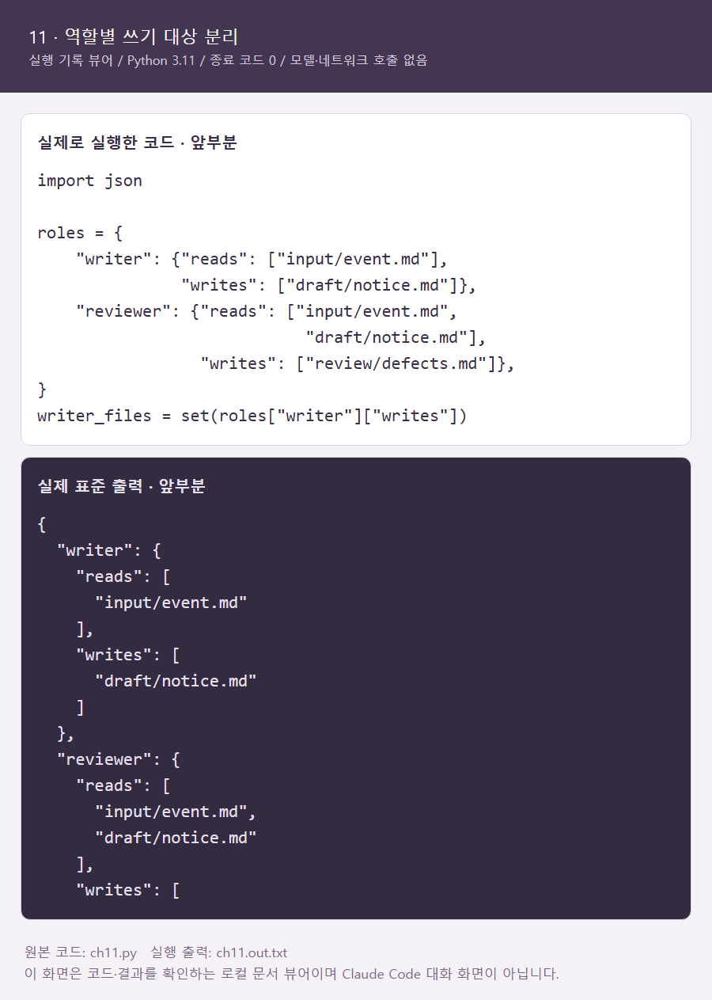
이제 다음 권의 이야기는 내가 자는 동안에도 일하게 하려면로 이어져요. 지금까지 남긴 파일과 판단이 다음 단계에서 어떤 역할을 하는지 계속 살펴볼 거예요.
제12권 · 내가 자는 동안에도 일하게 하려면
“아침 아홉 시에 돌리면 되죠?” 묘대리는 예약 시간만 정하고 노트북을 닫으려 했어요. 묘사원은 마지막으로 한 가지를 확인했어요. “그 시간에 일할 컴퓨터가 어디에 있는데요?”
예약 업무에는 시간표 외에도 실행 장소가 필요해요. 열린 CLI 세션에서 반복하는 일, 로컬 앱이 실행하는 일, 클라우드에서 수행하는 일은 조건이 달라요. 파일이 내 컴퓨터에만 있다면 다른 곳에서 실행하는 프로그램이 그 파일을 어떻게 읽을지도 정해야 해요. 이 차이를 이해하면 “컴퓨터를 꺼도 된다”는 설명을 자신의 상황에 맞게 판단할 수 있어요.
실행이 시작된 뒤에는 중복과 실패를 다뤄야 해요. 문서 생성이 성공했는데 보고만 실패했다고 전체를 다시 실행하면 문서가 두 개 생길 수 있지요. 이 장에서는 실행 키와 기록을 사용해 같은 일을 구분하고, 오류가 반복될 때 멈추는 조건을 설명해요. 실제 예약을 등록하지 않아도 운영 구조는 코드와 결과로 읽을 수 있어요.
무엇이 켜져 있어야 하나
CLI 세션 안의 반복, 로컬 앱 예약, 클라우드 예약은 실행 장소가 달라요. 로컬 파일이 필요한 작업은 그 파일에 접근할 실행 환경이 있어야 해요. 노트북을 꺼도 된다는 설명을 모든 자동화에 적용할 수 없어요.
예약 업무는 시각만 정한다고 완성되지 않아요.
실제로 실행하는 컴퓨터나 클라우드 환경, 필요한 파일, 계정 접근이 함께 준비돼야 해요. 로컬 폴더를 읽는 작업은 그 폴더가 실행 장소에 있어야 해요. 노트북이 꺼져도 실행된다는 설명은 클라우드 같은 별도 실행 주체가 있을 때의 조건을 살펴봐야 해요. 본문에서는 실행 장소에 따른 차이를 설명하고 실제 예약 등록을 수행한 것처럼 표시하지 않아요.
먼저 작업이 실행될 곳을 적어요. 그다음 필요한 파일과 네트워크를 연결해요. 마지막으로 컴퓨터 종료 시 어떤 부분이 중단되는지 표시해요.
AI에게 이렇게 요청해요일일 점검을 로컬 실행과 클라우드 실행으로 나눠 설계해줘. 파일 접근 경로와 컴퓨터 종료 조건을 포함해줘.
로컬 폴더를 읽는 예약 업무를 설정한 뒤 컴퓨터를 끄려 해요. 실행 주체가 로컬이면 종료 뒤 실행할 수 없을 수 있어요. 클라우드라면 해당 파일의 접근·동기화 방법을 별도로 마련해야 해요.
시간이 되면 누가 실행할까요
예약을 이야기할 때 가장 먼저 등장하는 것은 시각이지만, 실제로는 실행할 곳이 먼저 필요해요. 내 컴퓨터의 열린 세션에서 반복하는 일인지, 로컬 앱이 예약을 관리하는 일인지, 클라우드 환경에서 따로 실행하는 일인지에 따라 조건이 달라져요.
묘대리는 노트북에만 있는 자료를 읽도록 정하고 컴퓨터를 끄려 했어요. 묘사원은 자료가 어디에서 읽히는지 다시 그려보았지요. 로컬 실행이라면 컴퓨터가 일을 할 수 있는 상태여야 하고, 다른 실행 환경이라면 그곳에서 자료에 접근할 수 있어야 해요. 시간표가 있다고 파일이 저절로 이동하는 것은 아니에요.
공식 문서의 세션 내 예약은 열린 CLI 세션과 관련된 조건을 설명해요. 클라우드 예약은 별도 실행 환경과 연결되는 조건을 다루고요. 두 기능의 이름이 비슷해도 같은 상황으로 읽지 않아요. “컴퓨터를 꺼도 된다”는 표현을 만나면 어떤 실행 주체가 대신 일하는지 확인하는 편이 좋아요.
일정 명세
“매일 아침”은 시간대와 실행 시각이 빠져 있어요. 자동화 요청에는 Asia/Seoul 기준 시각, 시작일, 휴일 처리와 실행 결과를 적어요. 구현 도구가 바뀌어도 일정 명세는 유지할 수 있어요.
일정 명세에는 사람이 이해할 시각과 실행 환경의 시각을 함께 고려해요.
Asia/Seoul 기준 평일 오전 아홉 시라는 조건을 정했다면 서버의 기본 시간대가 무엇인지도 확인해요. 실행 로그에는 실제 시각뿐 아니라 어느 업무 날짜를 처리했는지 남겨요. 밤사이에 실행이 늦어지더라도 어떤 입력을 처리한 것인지 알 수 있어야 하기 때문이에요. 시작일과 종료 조건, 휴일 처리도 필요한 경우 명시해요.
먼저 시간대와 시각을 적어요. 그다음 실행할 입력과 결과 경로를 정해요. 마지막으로 휴일과 실패 시 처리 방식을 적어요.
AI에게 이렇게 요청해요Asia/Seoul 기준 평일 09:00에 초안 존재 여부를 점검한다. 결과는 날짜별 로그에 기록한다. 외부 전송은 하지 않는다.
서버 시간 기준으로 실행돼 한국의 업무 날짜와 어긋났습니다. 일정 기준 시간대, 실제 실행 시각과 기준 업무 날짜를 함께 기록해요. 서버의 기본 시간대만으로 업무 날짜를 결정하지 않아요.
시간대와 업무 날짜를 같이 생각해요
매일 아침이라는 말만으로는 컴퓨터가 정확한 시각을 알 수 없어요. Asia/Seoul 기준 오전 아홉 시처럼 시간대를 함께 정해요. 다른 지역의 서버에서 실행된다면 서버의 기본 시각과 업무 기준의 시각이 다를 수 있지요.
로그에는 실제 실행 시각뿐 아니라 처리하는 업무 날짜도 남겨두면 좋아요. 자정을 넘겨 늦게 시작한 작업이 어느 날의 자료를 다루는지 설명할 수 있기 때문이에요. 같은 이유로 휴일 처리와 시작일, 종료 조건이 필요한 업무도 있어요. 실행 도구를 고르기 전에 이런 조건을 문장으로 정리해두면 설정을 읽기 쉬워져요.
기준 시간대: Asia/Seoul
실행 시각: 평일 09:00
입력: 전날의 검토 대상 목록
결과: 업무 날짜별 점검 파일
외부 전송: 없음이것은 실제 예약 등록 결과가 아니라 일정의 의미를 설명하는 예시예요. 어떤 도구를 사용하든 이 조건을 어떻게 표현할지 확인하면 돼요. 버튼을 눌러 시간을 저장했다는 사실과 그 시간에 유효한 결과가 만들어졌다는 사실은 별도로 확인해요.
중복과 재시도
실패 뒤 같은 일을 재시도하면 결과가 두 번 생길 수 있어요. 조회 기록은 중복을 허용할 수도 있지만 이메일 발송은 영향이 달라요. 업무별로 중복을 식별할 키와 실행 이력을 정해요.
재시도는 실패한 전체 작업을 다시 하는 것과 실패한 단계만 이어가는 것으로 나눌 수 있어요.
문서 생성이 성공했고 보고만 실패했다면 처음부터 생성하면 중복이 생길 수 있어요. 업무 날짜와 입력 ID를 조합한 실행 키를 사용하면 같은 대상을 처리했는지 비교할 수 있어요. 성공 기록을 남기는 시점과 실제 결과 파일을 함께 확인해야 해요. 기록만 있고 파일이 없는 경우도 실패 상태로 다뤄야 해요.
먼저 업무 날짜와 입력 ID로 실행 키를 만들어요. 그다음 같은 키의 성공 기록이 있는지 확인해요. 마지막으로 실패 단계와 재시도 범위를 남겨요.
AI에게 이렇게 요청해요실행 키는 업무날짜+입력ID로 정한다. 성공 기록이 있으면 중복 생성을 보류하고 사유를 기록한다.
문서는 생성됐지만 결과 보고 단계가 실패했습니다. 생성된 문서와 실행 이력을 먼저 확인해요. 필요한 경우 보고만 재시도해 문서 중복을 피해요.
한 번의 업무에 이름을 붙여요
예약이 실패하면 다시 실행하고 싶어져요. 그런데 어느 단계까지 성공했는지 모르면 같은 문서가 두 번 생기거나 같은 메시지가 두 번 전송될 수 있어요. 그래서 작업을 구분할 수 있는 실행 키를 정해요. 예를 들어 업무 날짜와 입력 ID를 합칠 수 있어요.
2026-11-07:M-001이 키는 11월 7일의 M-001 문의를 처리하는 작업을 뜻하도록 정한 예예요. 같은 키의 성공 기록이 이미 있다면 새로운 결과를 만들기 전에 확인할 수 있어요. 다만 기록만 보고 무조건 건너뛰는 것도 충분하지 않을 수 있어요. 결과 파일이 실제로 존재하는지, 마지막 단계가 어디까지였는지 함께 확인해야 하는 업무도 있어요.
장 끝의 예제는 같은 키를 두 번 처리하려 할 때 두 번째를 건너뛰는 원리를 보여줘요. 반복해서 같은 결과를 볼 수 있게 시작 장부는 비워두었어요. 실제 운영에서는 저장된 장부를 읽고 실패한 단계와 재개 조건도 관리해야 해요. 예제를 그대로 예약 시스템 전체로 오해하지 않는 것이 중요해요.
중단할 수 있는 자동화
자동화는 시작보다 중단 조건을 정하는 일이 중요할 수 있어요. 입력이 없거나 권한 오류가 반복되면 계속 호출하기보다 보류하고 기록해요. 사람이 원인을 확인할 수 있어야 복구를 결정할 수 있어요.
자동화 운영에는 중단과 재개 절차가 필요해요.
입력 누락이나 인증 오류는 같은 호출을 계속한다고 해결되지 않을 수 있어요. 오류 종류별로 즉시 보류할지 제한적으로 재시도할지 정해요. 보류 기록에는 담당자가 확인할 대상과 재개 조건을 적어요. 이렇게 하면 돌아가고 있다는 사실만으로 정상이라고 오해하지 않을 수 있어요. 실행 횟수보다 유효한 결과와 실패 근거가 남는지가 중요해요.
먼저 보류할 오류를 정해요. 그다음 최대 재시도와 점검 담당을 명시해요. 마지막으로 중단 뒤 남길 로그와 재개 조건을 적어요.
AI에게 이렇게 요청해요입력 누락은 즉시 보류한다. 일시적 연결 오류는 정해진 횟수까지만 재시도하고 이후 담당자 확인을 요청한다.
같은 인증 오류가 밤새 반복되고 있어요. 인증 오류를 재시도 대상에서 제외하거나 제한하고 담당자 확인 뒤에만 재개해요. 실패 이력을 남겨 반복 원인을 확인해요.
실패한 단계부터 다시 볼 수 있어야 해요
문서를 만들고, 검토하고, 결과를 보고하는 세 단계가 있다고 생각해봐요. 문서 생성은 끝났는데 보고만 실패했다면 문서를 새로 만들 필요가 없을 수 있어요. 현재 결과를 확인하고 보고만 다시 수행하는 편이 중복을 줄일 수 있지요.
그렇게 하려면 단계별 상태가 남아 있어야 해요. 전체 성공과 전체 실패 두 단어만으로는 중간 상황을 알기 어려워요. 어느 파일이 생성됐고 어느 확인을 했는지 읽을 수 있으면 재시도의 범위를 판단하기 쉬워져요. 사람이 중간에 멈추고 검토할 때도 같은 정보가 도움이 돼요.
일시적인 연결 오류와 인증 오류는 재시도 방식이 다를 수 있어요. 잠깐의 통신 실패는 제한적으로 다시 확인할 수 있지만 잘못된 자격 증명은 같은 요청을 계속 보내도 해결되지 않을 수 있지요. 오류의 종류를 나누어야 반복을 유용한 동작으로 만들 수 있어요.
멈추는 조건도 자동화의 일부예요
자동화가 계속 돌아가는 모습은 안심이 될 수 있어요. 하지만 같은 오류를 반복하면서 결과를 만들지 못한다면 정상이라고 보기 어려워요. 실패가 일정 횟수 이상 반복되거나 필수 입력이 없으면 보류하도록 정할 수 있어요. 보류 이유와 재개 조건도 함께 남겨요.
입력 자료가 없는 날에는 무엇을 할지도 생각해보세요. 빈 문서를 만드는지, 아무 결과도 만들지 않는지, 자료가 없었다는 기록만 남기는지 업무에 맞게 정해야 해요. 이 조건을 정하지 않으면 입력이 없는 상태를 정상 자료로 오해하고 잘못된 결과를 만들 수 있어요.
묘사원은 예약 시간을 저장하기 전에 마지막으로 물었어요. 실패했을 때 누가 무엇을 읽고 다시 시작할 수 있는지요. 실행을 시작하는 방법만 아는 것보다 결과를 확인하고 멈추고 이어갈 수 있는 방법을 함께 아는 것이 오래 쓰는 자동화에 도움이 돼요.
문서는 생겼는데 마지막 보고가 실패했어요
예약 업무는 문서를 만들고 마지막에 상태를 알리도록 구성돼 있었어요. 어느 날 문서는 정상적으로 저장됐지만 보고 단계가 실패했지요. 묘대리는 전체를 다시 실행하려 했어요. 묘사원은 이미 생긴 결과부터 확인했어요.
이때 처음부터 다시 실행하면 같은 문서가 두 개 생길 수 있어요. 무엇이 성공했고 무엇이 실패했는지 알 수 있다면 보고 단계만 다시 수행할 수 있는지 판단할 수 있지요. 그래서 실행을 단계로 나누고 각 단계의 결과를 남기는 일이 필요해요.
같은 업무를 식별하는 키도 도움이 돼요. 업무 날짜와 입력 ID를 사용하면 어제의 다른 문의와 오늘의 같은 문의를 구분할 수 있어요. 다만 키가 있다는 이유만으로 중복이 모두 해결되는 것은 아니에요. 동시에 시작한 실행이나 중간 실패를 어떻게 다룰지도 실제 운영에서 생각해야 해요.
반복되는 오류라면 계속 실행하는 대신 멈출 조건이 있어야 해요. 같은 인증 오류를 밤새 재시도해도 유용한 결과가 생기지 않을 수 있거든요. 보류 이유와 담당자가 확인할 부분을 남기면 다음 행동이 분명해져요.
이 책의 예제는 중복 키를 구분하는 작은 동작을 실제로 실행해 보여줘요. 실제 예약 시스템을 등록하고 밤새 운영한 결과는 아니에요. 작은 원리를 이해한 뒤 현재 제품과 실행 환경의 조건을 확인하는 순서로 이어가면 돼요.
코드로 살펴보는 같은 원리
여기서는 앞의 원리를 작은 Python 프로그램으로 옮겨 보았어요. Claude Code 모델을 호출하는 코드는 아니고, 파일을 만들고 읽거나 자료를 비교하는 과정을 눈으로 확인하기 위한 보조 예제예요. 전체 파일과 실행 결과를 나란히 읽으면 자연어 요청과 정해진 프로그램의 역할이 어떻게 다른지 이해하는 데 도움이 돼요.
from pathlib import Path
import json
root = Path("run") / "12-ledger"
root.mkdir(parents=True, exist_ok=True)
path = root / "ledger.json"
# 매 실행을 같은 초기 상태에서 재현한다.
ledger = {}
key = "2026-11-07:M-001"
for attempt in range(1, 3):
if ledger.get(key) == "success":
print(attempt, "skip duplicate", key)
continue
ledger[key] = "success"
print(attempt, "record success", key)
path.write_text(json.dumps(ledger), encoding="utf-8")
assert len(ledger) == 1
print("Scheduler registered: False")
ledger는 실행 키와 성공 상태를 묶은 장부예요. 이 예제는 같은 과정을 반복해서 볼 수 있도록 시작할 때 빈 사전을 사용해요. 이미 저장된 운영 장부를 읽어 복구하는 전체 시스템으로 만든 것은 아니에요.
key에는 업무 날짜와 입력 ID를 합친 문자열을 넣었어요. 두 번의 시도에서 같은 키를 사용하므로 프로그램은 같은 업무라고 해석해요. 업무에서 같은 대상을 무엇으로 구분할지 먼저 정해야 이런 비교를 할 수 있어요.
첫 번째 반복에서는 성공 기록이 없으므로 값을 success로 남겨요. 두 번째에는 같은 키의 성공이 있으므로 중복을 건너뛰는 문장이 출력돼요. continue는 이번 반복의 나머지를 진행하지 않고 다음 차례로 넘어가게 해요.
마지막에는 장부를 JSON 파일로 저장해요. 현재 예제에서는 한 키만 있으므로 길이가 1이어야 해요. 같은 일을 두 번 시도했어도 성공 대상은 한 개라는 관계를 확인하는 것이지요.
실제 예약 운영에는 더 많은 조건이 필요해요. 결과가 실제로 생성됐는지, 어느 단계까지 성공했는지, 동시에 시작한 다른 실행이 있는지 살펴봐야 할 수 있어요. 이 작은 코드는 중복을 구분하는 원리를 보여주며 시간표를 등록하지는 않아요.
이 파일은 Python 3.11에서 실제로 실행했어요. 결과는 다음과 같아요. 긴 출력값은 판면에 맞춰 이어서 읽을 수 있게 표시했으며 원본 출력 파일도 함께 보존했어요.
1 record success 2026-11-07:M-001
2 skip duplicate 2026-11-07:M-001
Scheduler registered: False
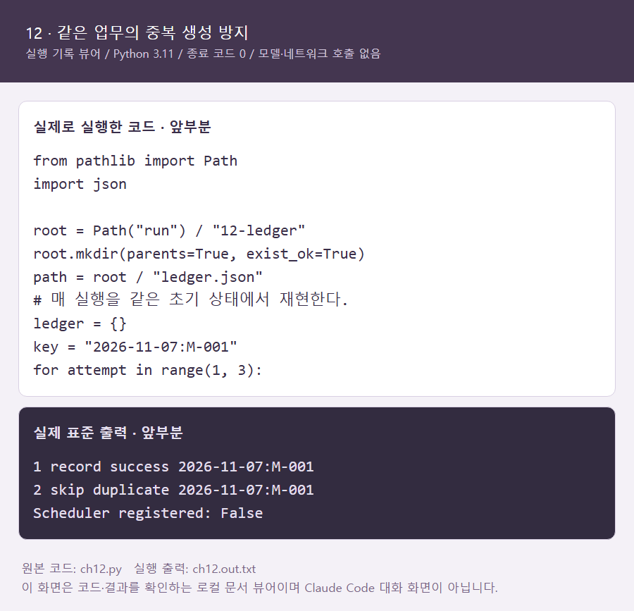
이제 다음 권의 이야기는 한 권의 결과로 묶는 날로 이어져요. 지금까지 남긴 파일과 판단이 다음 단계에서 어떤 역할을 하는지 계속 살펴볼 거예요.
제13권 · 한 권의 결과로 묶는 날
마지막 회의에서 묘대리는 PDF 파일을 들고 왔어요. 이제 출판하면 되느냐고 묻자 묘사원은 표지와 본문을 나란히 열었어요. “파일이 생긴 건 맞아요. 이제 같은 판인지, 읽을 수 있는지, 실제로 확인했는지 봐야죠.”
작은 출판사의 공정은 앞에서 다룬 내용을 한데 연결해요. 발행인은 목표와 공개 여부를 결정하고, 원고와 검수 자료는 그 판단을 돕는 결과로 남아요. 회의에서 지시를 저장한 상태와 실제 작업을 끝낸 상태를 나누어 보면, 사무실 화면이 무엇을 보여줘야 하는지도 분명해져요.
이 책은 열세 권으로 나뉜 소책자 가운데 마지막 권이에요. 각 권은 A4 종이 몇 장을 포개 반으로 접어 만들고, 본문은 독서 순서로 읽어요. 화면의 PDF와 종이에 인쇄해 접은 결과는 다른 확인이므로 마지막에 시험 출력으로 맞춰봐야 해요. 독자가 손에 쥔 판과 이후의 정정 자료를 연결하는 방법까지 살펴보며 작업실의 첫 공정을 마무리할 거예요.
발행인의 회의
회의는 움직이는 캐릭터를 모으는 연출뿐 아니라 목표와 책임을 확정하는 과정이에요. 안건, 결정, 담당, 기한, 보류 이유가 기록돼야 업무로 이어져요. 지시를 저장한 상태와 실제 실행한 상태도 구분해요.
발행인의 지시는 실행 가능한 업무로 바뀌어야 해요.
회의 안건에서 원고 담당과 검수 담당을 나누고, 파일 경로와 완료 기준을 정해요. 회의실에 모인 화면은 참석 상태를 보여주지만 지시가 자동으로 실행됐다는 뜻은 아니에요. 지시를 받은 뒤 누가 어떤 결과를 만들었는지 별도로 기록해요. 사람이 판단해야 하는 발행 여부와 AI가 준비할 초안·검수 자료를 분리하면 회의 결과가 제작 과정에 이어져요.
먼저 회의 안건을 한 문장으로 써요. 그다음 전체 지시와 개인 지시를 나눠요. 마지막으로 회의록에서 결정과 미결정을 구분해요.
AI에게 이렇게 요청해요안건: 안내문 초안 검토. 저자는 초안을 보완하고 검토자는 날짜·장소를 대조한다. 발행은 검수 뒤 사람이 결정한다.
회의는 끝났지만 원고 수정 담당이 정해지지 않았습니다. 수정 담당, 대상 파일, 완료 기준과 확인자를 정해요. “함께 하자”는 문장만으로 파일 책임을 분명히 할 수 없어요.
회의에서 나온 말이 업무로 이어지려면
발행인이 회의를 소집하면 직원들은 회의실로 모여요. 하지만 그 장면만으로 원고가 작성되거나 검수가 시작되는 것은 아니에요. 회의에서 무엇을 결정했고 누구에게 어떤 결과를 맡겼는지가 남아야 해요. 사무실의 움직임은 그런 업무 상태를 보여주는 표현이어야 하지요.
“책을 잘 만들어주세요”라는 지시를 받았다면 먼저 무엇을 만들 것인지 구체적으로 나누어야 해요. 원고를 쓸 담당과 사실을 확인할 담당, 조판할 담당이 서로 어떤 파일을 주고받는지 정해요. 한 AI가 여러 역할을 순서대로 맡더라도 산출물과 확인 단계는 구분할 수 있어요.
개별 지시에는 대상 파일과 끝낼 기준을 붙일 수 있어요. 저자에게는 첫 장의 설명을 이어 쓰고 코드와 연결해달라고, 검토자에게는 해당 원고의 버전과 실제 실행 결과를 비교해달라고 맡기는 식이에요. 같은 말이 모두에게 전달됐다는 사실과 각 역할의 할 일이 분명하다는 것은 다른 조건이에요.
한 원천과 두 판형
책의 본문은 독자가 읽는 순서로 준비하고, 인쇄본은 A4 한 장에 두 쪽씩 접는 순서로 배치해요. 이 시리즈는 열세 권의 소책자로 나뉘어 있어서 한 권씩 접어 묶을 수 있어요. 두 파일은 같은 원고에서 만들어야 하므로 판번호와 쪽 번호가 서로 맞아야 해요.
읽기본은 1쪽부터 마지막 쪽까지 차례로 이어져요.
인쇄본은 A4 가로 용지 한 면에 두 쪽씩 놓되, 안쪽 종이부터 접어 포갰을 때 쪽이 순서대로 읽히게 쪽 번호가 뒤섞여 있어요. 그래서 인쇄본에서는 프린터의 소책자 기능을 다시 켜지 않고 100% 배율로 그대로 출력해야 해요. 반대로 읽기본을 일반 출력하면 접어도 순서가 맞지 않아요.
먼저 읽기본의 쪽 순서를 확인해요. 그다음 인쇄본의 쪽 배치를 확인해요. 마지막으로 첫 장을 시험 출력해 방향과 접힘을 확인해요.
AI에게 이렇게 요청해요읽기본과 인쇄본이 같은 원고에서 나왔는지 쪽 번호로 대조해줘. 아직 출력하지 않은 시험은 완료로 표시하지 마.
인쇄본을 출력하면서 프린터의 소책자 기능을 한 번 더 켜서 쪽 순서가 뒤섞인 경우가 있어요. 이미 배치된 파일이니 배율 100%의 일반 양면 출력으로 보내야 해요. 쪽 번호 대조는 파일로 확인할 수 있어요. 하지만 실제 프린터에서 접어 보는 시험은 따로 해야 하고, 이 판에서는 아직 하지 않았어요.
소책자는 한 권씩 끝나야 해요
열세 권은 이어서 읽을 수 있지만, 한 권을 덮을 때마다 하나의 장면이 끝나야 해요. 그래서 각 권은 한 가지 상황을 이해하고, 필요한 순간에 코드와 화면을 만나고, 다음 권으로 넘어가는 이유를 남겨요.
앞 권을 읽지 않았다고 길을 잃지 않도록 필요한 용어는 그 권 안에서 다시 짚어요. 다만 같은 설명을 반복하기보다 작업이 자라는 과정을 따라가요. 코드도 갑자기 나타나지 않아요. 왜 이 코드를 보는지 먼저 말하고, 내용을 싣고, 결과의 뜻을 이어서 설명해요.
표지와 판번호는 한 권의 약속이에요
각 권의 표지에는 시리즈 이름, 몇 번째 권인지, 제목, 판번호가 들어가요. 표지와 안쪽의 판번호가 다르면 독자는 어느 정오표를 봐야 하는지 알 수 없어요. 열세 권을 한꺼번에 고쳤다면 판번호도 함께 바뀌어야 해요.
묘사원의 모습도 권마다 달라지지 않게 해요. 얼굴과 옷, 귀의 이어폰 같은 특징을 유지하면 독자가 같은 안내자로 받아들여요. 이 시리즈는 앞서 만든 캐릭터 시트와 원본 스티커를 그대로 사용했어요.
판과 정오표
배포한 파일을 조용히 덮어쓰면 독자가 가진 판과 웹 자료가 어긋날 수 있어요. 판번호, 변경 위치, 영향과 날짜를 남기면 수정 이력을 따라갈 수 있어요. 후보 파일과 발행 파일도 저장 위치로 구분해요.
판 관리는 독자가 가진 파일과 현재 자료를 연결하는 약속이에요.
웹을 고쳤더라도 인쇄한 책은 그대로 남아 있어요. 그래서 어느 판의 어느 쪽을 정정했는지 알 수 있는 기록이 필요해요. 새 후보를 만들 때는 이전 판을 지우기보다 버전을 구분해 보존해요. 표지와 제작 정보, 파일 이름의 판번호가 서로 다르다면 배포 전에 정리해요. 내용 변경이 관련 코드와 화면 설명에도 반영됐는지 확인해요.
먼저 표지와 제작 정보의 판번호를 맞춰요. 그다음 수정 내용을 CHANGELOG에 적어요. 마지막으로 이전 판에 필요한 정오표를 작성해요.
AI에게 이렇게 요청해요정오표에는 영향 판번호, 쪽과 항목, 잘못된 내용, 바른 내용, 수정일을 포함한다.
웹 설명만 바뀌고 인쇄본 오류에 대한 안내가 없어요. 어느 판의 어느 쪽이 틀렸는지 알 수 있는 정오표와 수정본 안내가 필요해요. 과거 판의 대응 자료도 유지해요.
읽기본과 접는 인쇄본을 구분해요
화면에서 읽을 A5 읽기본은 독서 순서대로 이어져요. 인쇄용 A4 파일은 이미 접기 순서로 배치되어 있어서 프린터의 소책자 기능을 다시 적용하면 예상과 다른 순서가 돼요. 반대로 읽기본을 일반 출력한 것만으로 접는 책이 되지도 않아요. 어떤 파일을 출력하는지와 드라이버가 어떤 배치를 하는지 함께 알아야 해요.
화면에서 모든 쪽이 보이는 것과 종이에서 읽기 편한 것도 달라요. 글자 크기와 접히는 쪽의 여유, 스테이플로 가려지는 부분은 실제 출력으로 확인해야 해요. 이 판은 파일의 쪽 배치를 기계로 대조했을 뿐 실제 종이로 접어 확인하지는 않았어요. 디지털 검사가 통과해도 시험 출력이 남아 있다고 말하는 이유예요.
완료를 판단하는 마지막 장
이 책의 마지막 목표는 모든 자동화를 켜는 것이 아니라 어디까지 만들고 검증했는지 설명하는 것이에요. 실제 실행·검수·인쇄 시험이 남아 있으면 미완료로 보고해요. 외부 발행은 사람의 결정으로 남겨요.
책의 원고가 조판됐다는 사실과 출판 검수가 끝났다는 판단은 달라요.
실제 화면을 확보하고 코드를 실행한 범위는 근거와 함께 기록해요. 실행하지 못한 외부 연결은 설명의 범위와 확인할 조건을 남겨요. 실제 양면 출력과 제본, 초보 독자의 이해도 확인은 별도의 단계예요. 발행인은 산출물과 미완료 항목을 보고 공개 여부를 결정해요. 마지막 보고에는 무엇을 했고 무엇을 하지 못했는지가 함께 있어야 해요.
먼저 목표·산출물·검증 근거를 모은다. 그다음 미실행과 미해결 결함을 적어요. 마지막으로 발행 가능·보류 판단과 다음 행동을 제안해요.
AI에게 이렇게 요청해요최종 보고를 결과, 근거, 미완료, 판단, 다음 작업으로 작성해줘. 실제 수행하지 않은 검사는 완료로 표시하지 마.
PDF 생성은 성공했지만 실제 모델 실습과 제본 시험은 끝나지 않았습니다. 읽기본과 인쇄 후보 생성 완료, 실습·실제 접기 검수 미완료, 발행 보류라고 기록해요. 후보 파일은 작업 폴더에 두고 미완료 검사를 다음 작업으로 남겨요.
같은 이름의 다른 파일을 구분하는 방법
원고를 고치고도 파일 이름이 같으면 어느 내용을 검토했는지 모를 수 있어요. 판번호를 붙이고 변경 내역을 남기면 독자가 가진 파일과 이후의 설명을 연결하기 쉬워요. 내용이 달라졌다면 새 후보를 만들고 이전 파일은 기록으로 보존할 수 있어요.
해시는 파일 내용에서 계산한 값이에요. 같은 이름의 두 파일이 같은 내용인지 비교할 때 도움이 돼요. 이 장의 코드는 SHA-256 값을 계산해서 파일 이름과 함께 출력해요. 다만 해시가 있다는 사실은 문장이 정확하다는 증명이 아니에요. 어떤 내용을 가진 파일을 기준으로 이야기하는지 식별하는 수단이에요.
배포한 판에서 오류를 발견했다면 영향받는 쪽과 항목, 잘못된 내용과 바른 내용, 정정 날짜를 알려줄 수 있어요. 웹을 고쳤다고 인쇄한 종이가 바뀌는 것은 아니므로 과거 판을 가진 독자가 읽을 수 있는 안내가 필요해요. 원고, 코드, 화면이 서로 맞는지도 함께 확인해요.
파일을 만들고 나서 하는 일
마지막으로 남겨야 하는 것은 멋진 완료 문구보다 실제로 확인한 범위예요. 코드가 정상 종료했는지, 화면이 어디에서 나온 것인지, 제품의 계정 기능을 직접 사용했는지 구분해요. 실제 실행하지 못한 부분은 현재 설명의 조건과 남은 확인으로 남겨두어요.
이 책의 로컬 코드와 실행 출력은 다시 열어볼 수 있게 보존했어요. 반면 모델 응답이나 Google 인증, 실제 예약 실행을 검증했다고 표시하지 않았어요. 외부 발행을 결정하려면 그런 내용의 기술 검토와 실제 인쇄·제본 확인도 필요해요. 원고가 조판됐다는 사실과 발행을 승인했다는 판단은 끝까지 구분해요.
묘대리는 이제 PDF 하나를 건네며 모든 일이 끝났다고 말하지 않았어요. 어떤 파일을 만들었고 어디까지 읽어봤는지 설명할 수 있었지요. 묘사원은 그제야 다음 일을 이어갈 수 있다고 말했어요. 작은 작업실이 제대로 움직이는 모습은 캐릭터의 걸음보다 그런 연결에서 드러나요.
출판 직전에 발견한 두 개의 판번호
본문에는 새 판번호가 있었지만 표지에는 이전 번호가 남아 있었어요. 파일 이름만 보면 같은 묶음처럼 보였지요. 묘사원은 배포하기 전에 표지와 제작 정보, 변경 내역을 나란히 읽었어요. 서로 다른 상태를 같은 책으로 전달하지 않기 위해서예요.
판번호는 독자가 어떤 내용을 가지고 있는지 설명하는 이름이에요. 한 글자를 고쳤든 설명을 크게 바꾸었든, 이전 자료와 다른 내용을 어떻게 구분할지 정해야 해요. 새 파일을 만들 때는 영향을 받는 코드와 화면 설명도 함께 확인해요.
해시는 그 파일의 내용을 식별하는 데 도움을 주어요. 하지만 해시만 보고 어떤 문장이 바뀌었는지는 알 수 없어요. 그래서 변경 내역에는 무엇을 왜 고쳤는지 문장으로 남겨요. 두 기록이 서로 다른 역할을 하는 것이지요.
인쇄한 책을 가진 독자는 웹이 바뀌었다는 사실을 모를 수 있어요. 어느 판의 어느 쪽을 정정했는지 안내하면 자신의 책에 적용할 수 있어요. 과거 판의 자료를 보존하는 일도 그런 연결을 위해 필요해요.
마지막으로 실제 종이를 확인해야 해요. 화면에서 맞는 줄과 여백도 접거나 묶으면 다르게 느껴질 수 있거든요. 묘대리는 이제 PDF 생성 완료와 발행 가능이라는 말을 나누어 사용했어요. 결과와 남은 확인을 설명할 수 있게 된 것이 첫 작업실의 가장 큰 변화였어요.
코드로 살펴보는 같은 원리
여기서는 앞의 원리를 작은 Python 프로그램으로 옮겨 보았어요. Claude Code 모델을 호출하는 코드는 아니고, 파일을 만들고 읽거나 자료를 비교하는 과정을 눈으로 확인하기 위한 보조 예제예요. 전체 파일과 실행 결과를 나란히 읽으면 자연어 요청과 정해진 프로그램의 역할이 어떻게 다른지 이해하는 데 도움이 돼요.
from pathlib import Path
import hashlib
import json
root = Path("run") / "13-manifest"
root.mkdir(parents=True, exist_ok=True)
(root / "notice.md").write_text(
"# 가상 안내문\n시간: 14:00\n", encoding="utf-8")
path = root / "notice.md"
digest = hashlib.sha256(path.read_bytes()).hexdigest()
manifest = {"version": "v0.2.0",
"file": path.name,
"sha256": digest,
"publication_approved": False}
print(json.dumps(manifest, ensure_ascii=False, indent=2))
assert not manifest["publication_approved"]
마지막 코드는 안내문 파일을 만든 뒤 내용을 바이트로 읽어요. 바이트는 파일에 저장된 실제 데이터를 다루는 단위예요. 같은 화면 글자처럼 보여도 인코딩이나 줄바꿈이 다르면 파일의 바이트가 다를 수 있어요.
hashlib.sha256은 읽은 데이터에서 SHA-256 해시를 계산해요. hexdigest()는 그 값을 사람이 읽을 수 있는 16진수 문자열로 보여줘요. 출력이 길어도 의미를 직접 해석하려 하기보다 두 파일의 계산값을 비교할 때 사용하는 이름표로 생각하면 이해하기 쉬워요.
manifest에는 판번호와 파일 이름, 해시, 발행 승인 여부를 묶었어요. 판번호는 사람이 정한 버전이고 해시는 실제 파일 내용에서 계산한 값이에요. 둘을 함께 남기면 어떤 내용의 어느 판을 기준으로 이야기하는지 더 분명해져요.
publication_approved는 False예요. 파일을 만들고 해시를 계산했다고 사람의 발행 결정이 생기는 것은 아니기 때문이에요. 프로그램이 할 수 있는 확인과 발행인이 맡은 판단을 다른 값으로 두었어요.
내용을 고치면 해시를 다시 계산해야 해요. 그러나 해시가 달라졌다는 사실만으로 무엇이 좋아졌는지 알 수는 없어요. 수정 이유와 영향은 변경 내역에 문장으로 남기고 파일 식별에는 해시를 사용하는 편이 서로의 역할을 이해하기 쉬워요.
이 파일은 Python 3.11에서 실제로 실행했어요. 결과는 다음과 같아요. 긴 출력값은 판면에 맞춰 이어서 읽을 수 있게 표시했으며 원본 출력 파일도 함께 보존했어요.
{
"version": "v0.2.0",
"file": "notice.md",
"sha256": "eea93ea32c4d83483ffbf046b44e1ffab6a3a2733218c596ae41ff02cb33d647",
"publication_approved": false
}
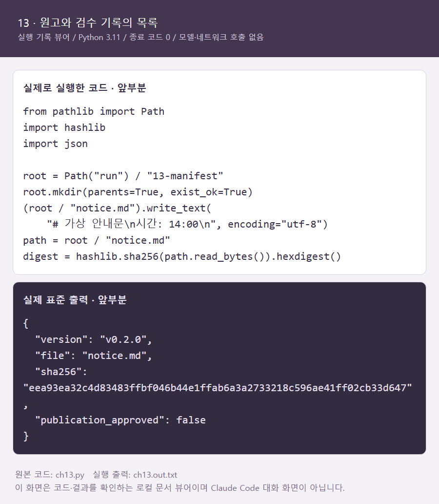
맺음말
처음에는 화면에 문장이 나오는 것만으로 일이 끝난 줄 알았어요. 이제는 어떤 자료를 읽었는지, 결과 파일은 어디에 있는지, 무엇을 실제로 확인했는지 함께 볼 수 있어요. 이 차이는 도구의 기능 하나를 더 아는 것보다 오래 남는 습관이 될 거예요.
새로운 도구가 나와도 모든 것을 다시 시작할 필요는 없어요. 입력과 결과를 구분하고, 모르는 사실을 남겨두고, 작은 범위에서 확인하고, 다른 사람이 이어받을 길을 만들어두면 돼요. 묘사원이 까칠하게 되묻던 말들도 결국 그 기본을 잊지 말자는 뜻이었어요.
별책 부록 · 막혔을 때 다시 펼쳐보는 이야기
모델과 프로그램은 같은 일을 하지 않아요
책을 읽다 보면 AI, 모델, Claude Code, Python이라는 말이 번갈아 나와요. 처음에는 모두 컴퓨터 안에서 대답하는 무언가처럼 보일 수 있어요. 하지만 맡는 역할을 나누어 보면 코드와 요청의 차이가 더 잘 보이기 시작해요.
모델은 전달된 맥락을 바탕으로 문장을 생성하고 판단을 돕는 부분이에요. Claude Code는 그런 모델과 함께 파일을 읽고 명령을 실행하며 작업을 이어가는 도구예요. Python 예제는 사람이 정한 절차를 코드로 표현한 프로그램이고요. 이 책의 보조 예제는 모델에게 질문하지 않고 파일의 값과 정해진 규칙을 처리해요.
정해진 서식에 날짜를 넣는 일은 일반 프로그램으로도 할 수 있어요. 반면 읽는 사람에게 알맞은 설명을 고르거나 긴 메모를 정리하는 일에는 문맥을 해석하는 과정이 필요할 수 있어요. 둘을 무조건 대체 관계로 생각하기보다 각 단계에 무엇이 필요한지 살펴보면 좋아요.
묘사원은 원고의 시간을 비교하는 코드를 보며 이 구분을 다시 설명했어요. 문자열이 같은지 확인하는 프로그램은 이번 규칙을 빠짐없이 적용할 수 있어요. 하지만 “오후 두 시”와 “14:00”을 같은 의미로 처리할지, 행사가 실제로 그 시간에 열리는지는 따로 정해야 해요. 코드가 정확하게 실행됐다는 사실과 업무 판단이 올바르다는 사실은 연결되지만 같지는 않아요.
프롬프트는 실행 파일의 별명이 아니에요
프롬프트는 모델에게 전달하는 입력을 가리킬 때 사용하는 말이에요. 이번에 무엇을 해달라는 문장, 참고할 자료, 지켜야 할 조건이 함께 들어갈 수 있어요. 자연어로 쓰기 때문에 처음에는 편하지만 모호한 표현도 그대로 들어가기 쉬워요.
“좋게 해줘”라는 말과 “날짜·장소를 원본과 비교하고 다른 항목은 수정하지 마”라는 말은 전달하는 정보가 달라요. 어떤 입력이든 모델이 내가 생각한 의도를 완전히 복원해준다고 가정하지 않아요. 결과를 읽으면서 필요한 정보를 더 구체적으로 전달할 수 있어요.
프롬프트에 도구 이름을 썼다고 그 도구가 실제로 준비되는 것은 아니에요. 이메일을 보내라고 말했어도 전송 도구와 계정 연결이 없다면 실제 발송과는 다른 상태예요. 반대로 도구가 연결돼 있으면 문장 하나가 파일 변경이나 다른 행동으로 이어질 수 있어요. 요청의 문장과 실행 환경을 함께 읽어야 하는 이유예요.
같은 문장도 현재 폴더와 프로젝트 지침, 이전 대화에 따라 다른 맥락에서 해석될 수 있어요. 그래서 중요한 파일과 범위는 요청에서 다시 명시하는 편이 좋아요. 길게 쓰는 것 자체가 목적은 아니지만, 지금 일에 꼭 필요한 조건을 생략하지 않는 것이 중요해요.
컨텍스트는 지금 함께 보고 있는 배경이에요
컨텍스트라는 말은 모델이 현재 요청을 이해할 때 사용하는 맥락을 설명해요. 대화와 파일 내용, 지침, 도구의 결과 등이 관련될 수 있어요. 모든 파일과 모든 과거 대화를 무한히 정확하게 기억하는 공간이라고 생각하지는 않아요.
묘대리가 이전 행사 날짜를 자꾸 가져오는 상황에서는 이번 자료를 정확히 지정하는 것이 도움이 돼요. 이전 이야기가 지금 업무와 관련이 있는지 먼저 생각해봐야 해요. 필요한 자료를 고르는 일은 모델에게 적은 정보를 주는 경기가 아니라 맞는 배경을 준비하는 일이에요.
긴 작업에서는 결정과 경로, 남은 결함을 파일로 보존해요. 대화를 정리하더라도 이 자료를 다시 읽으면 핵심 사실을 확인할 수 있어요. 요약문만 남기고 원본을 잃어버리면 어떤 조건이 생략됐는지 알기 어려워요.
권한은 문장만으로 생기지 않아요
“읽기만 한다”는 지시와 기술적으로 읽기만 허용된 상태는 달라요. 지시는 의도를 설명하고, 권한 설정은 실제로 가능한 동작의 범위에 영향을 주어요. 어떤 설정이 어떤 도구에 적용되는지는 제품의 문서와 현재 환경에서 확인해야 해요.
스킬의 자동 호출을 제한하는 설정을 도구 권한 전체를 막는 설정으로 읽으면 안 돼요. 사람이 직접 실행한 절차도 파일을 바꾸는 행동을 포함할 수 있어요. 호출 시점, 절차의 내용, 도구의 허용 범위를 서로 나누어 읽으면 혼동을 줄일 수 있어요.
권한 요청 화면이 나타나면 지금 하려는 작업과 어떤 관계가 있는지 살펴봐요. 문서 하나를 읽는 데 필요하다고 생각한 범위와 실제 요청 범위가 다를 수 있어요. 정확한 의미를 모르는 설정을 무조건 켜서 오류를 없애려 하기보다 현재 단계의 목적과 비교하는 편이 좋아요.
계정은 연결의 대상이기도 해요
로그인에 성공했다는 말만으로 어느 계정의 어느 자료를 보고 있는지 알 수는 없어요. 개인 계정과 회사 계정을 함께 쓰면 원하는 폴더가 다른 쪽에 있을 수 있어요. 같은 서비스 화면 안에서도 사용하는 계정과 자료 범위를 읽어야 해요.
계정이 맞더라도 특정 파일 접근은 따로 허용돼야 할 수 있어요. 인증과 자료 권한을 구분하면 “들어가기는 했는데 못 읽는다”는 상황을 더 구체적으로 설명할 수 있어요. 프로그램 설치를 반복해도 달라지지 않을 문제일 수 있는 것이지요.
이 책은 독자의 계정 정보를 대신 넣어 연결했다고 가정하지 않아요. 로컬에서 읽을 수 있는 구조와 실제 서비스에서 확인해야 하는 동작을 분리해 설명해요. 그래서 예제의 성공을 모든 계정에서 같은 기능이 된다는 보장으로 넓혀 읽지 않도록 해요.
서버는 꼭 먼 컴퓨터만 뜻하지 않아요
서버라는 말은 다른 프로그램의 요청을 받아 기능이나 자료를 제공하는 역할을 가리킬 수 있어요. 내 컴퓨터에서 실행하는 서버도 있고 인터넷의 다른 환경에 있는 서버도 있어요. 이름만 보고 반드시 클라우드라고 생각할 필요는 없어요.
MCP 연결에서 로컬 서버를 실행한다면 실행 파일과 필요한 환경이 준비돼 있어야 해요. 원격 서버를 사용한다면 실제 주소와 네트워크, 인증 조건을 확인해요. 어느 쪽이든 클라이언트가 무엇을 요청하고 어떤 도구를 받는지 알아야 해요.
로컬이라는 말도 모델 호출까지 전부 내 컴퓨터에서 이루어진다는 뜻으로 자동 확장하면 안 돼요. 프로그램의 일부가 로컬에 있고 다른 요청은 외부 서비스로 갈 수 있어요. 실제 구성을 확인하지 않은 채 이름 하나로 전체 동작을 단정하지 않는 편이 정확해요.
세션은 이어지는 작업의 한 묶음이에요
세션은 대화와 작업이 이어지는 단위를 설명할 때 쓰는 말이에요. 같은 프로젝트에서 여러 세션을 시작할 수 있고, 하나의 세션에서 여러 파일을 다룰 수도 있어요. 프로젝트 폴더와 대화 세션을 같은 것으로 생각하지 않으면 파일은 남았는데 대화가 달라지는 상황도 이해하기 쉬워요.
세션을 새로 시작해도 디스크에 저장된 파일은 별도로 남아 있을 수 있어요. 반대로 대화에 어떤 문장이 있었다고 반드시 그 파일이 저장된 것은 아니에요. 파일에 남겨야 할 결과를 명시하는 이유가 다시 여기와 연결돼요.
장기 작업을 이어갈 때는 이전 세션이 무엇을 기억할지 추측하기보다 현재 파일과 인계 메모를 읽는 편이 분명해요. 재개 기능을 사용하더라도 실제 파일이 그 뒤에 바뀌었는지는 확인해야 해요. 대화를 이어가는 기능과 자료의 최신 상태는 다른 조건이에요.
초안이라는 말은 책임을 숨기는 말이 아니에요
초안은 아직 바뀔 수 있는 상태를 뜻해요. 아무 내용이나 적어도 된다는 말은 아니에요. 원본의 날짜와 장소는 초안에서도 정확해야 하고, 모르는 사실은 모른다고 표시해야 해요. 문체와 구성을 다듬을 수 있다는 점과 사실을 만들어도 된다는 생각을 섞지 않아요.
검토본은 지금 확인할 대상으로 정한 문서예요. 여러 사본 중 어떤 것을 보고 있는지 알 수 있어야 해요. 검토 중에 문서가 계속 바뀐다면 검토의 기준이 움직일 수 있으므로 판번호나 시점을 연결해두면 도움이 돼요.
발행본은 밖으로 나가는 결과예요. 초안 생성과 검토, 실제 공개의 결정은 서로 다른 단계예요. 문서의 상태를 분명하게 부르면 중간 결과도 유용하게 사용하고 남은 일을 숨기지 않을 수 있어요.
코드에 있는 False를 자연어와 연결해요
이 책의 예제에는 connection_tested나 publication_approved 같은 값이 나와요. 이름은 영문으로 남기지만 의미는 문장으로 풀어 읽을 수 있어요. 연결을 실제로 시험했는지, 발행을 승인했는지 나타내도록 정한 값이에요.
False는 거짓을 나타내는 Python 값이고 JSON에는 false처럼 소문자로 표현돼요. 문자열 "False"나 "false"와는 다른 종류예요. 이름이 비슷해도 프로그램이 자료형에 따라 다르게 처리할 수 있으므로 코드와 결과의 표기를 정확히 유지해요.
이 값들은 상태를 표현하는 예이지 상태를 현실에서 만들어내는 주문이 아니에요. publication_approved를 True로 적었다고 사람이 실제로 발행을 승인한 사실이 생기는 것은 아니에요. 기록과 실제 행동이 일치해야 믿을 수 있는 자료가 돼요.
API라는 말을 만나면 입구와 행동을 보아요
API는 프로그램이 다른 기능과 자료를 사용하기 위한 인터페이스를 설명하는 말이에요. 사람이 화면에서 버튼을 누르는 대신 프로그램이 정해진 요청을 보내고 결과를 받는 방식으로 생각할 수 있어요. 다만 모든 API가 같은 자료와 권한, 요금 조건을 가지는 것은 아니에요.
API를 사용한다고 말할 때는 어떤 기능을 호출하는지 구체적으로 봐야 해요. 목록을 조회하는 것과 문서를 생성하는 것, 메시지를 발송하는 것은 다른 행동이에요. 연결 수단의 이름보다 실제 효과를 읽는 원칙이 그대로 적용돼요.
이 책의 로컬 예제는 Google API나 모델 API를 호출하지 않아요. 코드가 JSON을 만든다는 이유만으로 외부 서비스와 통신한 것은 아니에요. 자료 형식과 통신 동작을 나누어 보면 어떤 결과가 실제 서비스에서 온 것인지도 구분하기 쉬워져요.
재현한다는 말은 다시 따라갈 길이 있다는 뜻이에요
결과를 재현하려면 코드만 있어서는 부족할 수 있어요. 입력 자료와 실행 환경, 명령과 저장 위치가 함께 필요해요. 같은 파일 이름이라도 내용이 달라졌다면 결과가 바뀔 수 있지요. 그래서 코드와 입력, 출력과 환경을 연결해 보존해요.
이 책의 예제는 별도의 run 폴더에 자료를 만들고 값을 확인해요. 모델과 외부 서비스 호출 없이 같은 원리를 다시 볼 수 있게 한 것이에요. 실제 모델 응답은 실행 조건에 따라 달라질 수 있으므로 이 로컬 재현 결과와 구분해 읽어야 해요.
재현한 범위를 정확히 말하는 것도 중요해요. 파일을 저장하고 읽었다는 확인을 설치와 인증, 모든 제품 기능의 동작까지 확인한 것으로 넓히지 않아요. 무엇을 다시 따라갈 수 있는지 구체적으로 말할수록 예제가 더 유용해져요.
자동화는 사람을 완전히 없앤다는 말이 아니에요
자동화는 반복되는 동작을 정해진 조건에서 이어가도록 만드는 데 도움이 돼요. 하지만 모든 판단을 한 번에 넘겨야 하는 것은 아니에요. 원고 초안을 만들고 차이를 찾는 일은 도울 수 있어도 공개 여부나 미정 정책의 결정은 사람에게 남길 수 있어요.
어느 지점에서 사람이 읽을지는 업무의 영향에 따라 정해요. 초안을 저장하기 전에 매 줄 허락을 받을 필요는 없지만, 외부에 공개할 문서라면 내용을 검토할 시점이 필요하지요. 작업의 경계를 분명히 하면 자동화와 사람의 판단이 자연스럽게 이어질 수 있어요.
묘사원은 AI를 많이 켜놓는 모습을 성공이라고 부르지 않았어요. 필요한 자료를 읽고 맞는 결과를 남기며 모르는 부분을 사람에게 넘길 수 있는지가 중요했지요. 도구가 많아질수록 이 기본을 더 잘 보여주어야 해요.
숫자보다 문장으로 먼저 설명해보아요
진행률이나 성공률 같은 숫자는 보기 편해요. 하지만 무엇을 기준으로 셌는지 알 수 없으면 현재 상태를 잘못 이해할 수 있어요. 초안 파일 하나가 있다고 책 제작이 몇 퍼센트 끝났는지 자동으로 알 수는 없어요. 남은 기술 검토와 실제 인쇄가 얼마나 중요한지도 생각해야 하니까요.
먼저 “초안이 저장됐고 일정은 비교했으며 참가비 확인이 남았다”라고 문장으로 설명해보세요. 그 문장을 기준으로 필요한 상태 표시를 만들 수 있어요. 상태의 의미가 먼저이고 화면의 색이나 숫자는 그다음이에요.
이 원리를 이해하면 사무실 화면의 직원 움직임도 다르게 보이게 돼요. 자료실로 이동했다면 어떤 자료를 확인하는지, 회의실에 모였다면 어떤 지시가 남았는지 알고 싶어지지요. 움직임이 업무를 설명할 때 화면은 장식이 아니라 작업을 이해하는 창이 돼요.
파일을 찾지 못할 때는 현재 위치부터 보아요
“파일이 있는데 없다고 해요.” 처음 명령을 쓰면 자주 만나는 상황이에요. 파일 탐색기에서 보이는 폴더와 터미널의 현재 폴더가 다른 경우가 있어요. 프로그램이 틀렸다고 단정하기 전에 어디를 기준으로 이름을 읽고 있는지 살펴보면 돼요.
Get-Location
Get-ChildItem -LiteralPath '.\input'
Test-Path -LiteralPath '.\input\event.md'첫 명령은 현재 위치를, 두 번째는 input 안의 목록을 보여줘요. 세 번째는 지정한 경로가 존재하는지 확인해요. Test-Path에서 True가 나오면 해당 경로가 있다는 뜻이고 False가 나오면 그 기준에서 찾지 못했다는 뜻이에요. 파일 내용이 맞는지까지 검사하는 명령은 아니에요.
경로가 존재하지 않는다면 철자와 폴더의 관계를 함께 읽어봐요. input과 inputs는 다르고, draft와 drafts도 달라요. 원본을 새로 만들기 전에 실제 파일이 어디에 있는지 찾아야 해요. 다른 위치에 있는 문서를 똑같은 이름으로 새로 만들면 잠깐 오류는 없어져도 정본이 둘이 될 수 있어요.
파일을 찾았지만 원하는 내용을 못 읽는다면 이름만 같고 다른 자료일 가능성도 살펴봐요. 행사 ID나 날짜를 문서 안에서 확인할 수 있으면 도움이 돼요. 파일 존재, 파일 내용, 현재 작업과의 관련성은 서로 다른 확인이라는 원리가 여기서도 이어져요.
한글이 깨져 보인다고 원고부터 고치지 않아요
한글이 이상한 기호로 보이면 내용이 망가졌다고 생각하기 쉬워요. 하지만 저장된 데이터를 읽는 방식이 다른 경우도 있어요. 텍스트는 글자를 어떤 숫자들로 저장하고 다시 해석할지 약속이 필요해요. UTF-8은 이 책에서 사용하는 그 약속의 이름이에요.
text = path.read_text(encoding="utf-8")
path.write_text(text, encoding="utf-8")읽기와 쓰기에서 같은 인코딩을 명시하면 예제의 의도가 분명해져요. 기본값에만 의존하면 컴퓨터와 프로그램에 따라 다르게 해석되는 상황을 만날 수 있어요. 물론 원래 다른 방식으로 저장된 파일을 UTF-8로 읽으면 오류가 날 수 있으므로, 실제 원본이 어떤 방식인지도 확인해야 해요.
화면 표시만 이상한 경우와 파일 자체가 바뀐 경우를 구분해보세요. 다른 편집기에서 같은 파일을 열어보거나 복사본에서 읽기 방식을 확인할 수 있어요. 깨진 글자를 그대로 다시 저장하면 원래 내용을 되찾기 어려워질 수 있으므로 원본을 보존한 상태에서 살펴보는 편이 좋아요.
특히 명령의 결과를 다른 프로그램으로 넘길 때는 각 단계의 문자 해석도 영향을 줄 수 있어요. 코드 파일은 맞는데 출력만 이상한지, 출력은 맞는데 저장 파일에서 달라졌는지 나누어 보면 원인을 좁힐 수 있어요. “한글 오류”라는 이름 하나보다 실패한 단계가 더 유용한 단서예요.
명령, 옵션, 값은 서로 다른 조각이에요
claude --version이 짧은 줄에서 claude는 프로그램이고 --version은 옵션이에요. 옵션은 프로그램을 어떻게 사용할지 정하는 추가 정보라고 생각하면 돼요. 모든 옵션이 값을 받는 것은 아니에요. 버전처럼 그 이름만으로 동작하는 것도 있고, 특정 모드나 파일 경로를 뒤에 받는 것도 있어요.
claude --permission-mode plan여기서는 --permission-mode라는 옵션 뒤에 plan이라는 값이 있어요. 이름과 값 사이의 공백이 두 조각을 나누어요. 프로그램 도움말에서 어떤 형태를 받는지 확인하면 돼요. 다른 버전에서 보지 못한 옵션이라는 메시지가 나오면 철자와 현재 도움말을 비교해봐요.
책의 예시에 보이는 따옴표는 여러 단어를 한 값으로 전달하는 데 사용될 수 있어요. 자연어 질문을 프로그램 인자로 넣는 예에서는 문장 전체가 한 값이어야 하니까요. 다만 셸마다 따옴표와 특수문자의 해석이 다를 수 있으므로 서로 다른 셸의 예시를 무심코 섞지 않는 편이 좋아요.
이 책의 자연어 요청 상자와 셸 명령 상자는 입력하는 자리가 달라요. “원본과 초안을 비교해줘”는 AI 대화에 넣을 문장이고 Get-Content는 PowerShell에 넣는 명령이에요. 화면이 비슷하게 글자를 받는다고 같은 언어를 해석하는 것은 아니에요.
도움말의 괄호를 읽는 방법
도움말의 사용 모양에는 대괄호나 꺾쇠 같은 표기가 나올 수 있어요. 일반적으로 설명서에서 선택 가능한 자리와 실제 값을 넣을 자리를 구분하는 데 사용해요. 그 기호를 모두 문자 그대로 입력하라는 뜻인지 아닌지는 해당 도움말의 설명과 예시를 함께 읽어봐야 해요.
가장 쉬운 출발점은 실제로 실행 가능한 작은 예시와 사용 모양을 나란히 보는 것이에요. claude --version과 claude --help를 읽으면 프로그램 이름 뒤에 옵션이 붙는 관계를 알 수 있어요. 하위 명령에서는 도움말의 범위가 더 좁아져요. 명령 전체를 외우기보다 어디에서 다음 설명을 찾을 수 있는지 알면 돼요.
도움말에서 기능 이름을 찾았다고 그 기능을 실제 계정에서 사용할 수 있다는 뜻은 아니에요. 로그인이나 조직 정책, 환경에 따른 조건이 있을 수 있어요. 프로그램이 문법을 이해하는 단계와 서비스가 요청을 받아들이는 단계는 나누어 생각해요.
프로그램이 끝났다는 표시를 읽어요
프로그램은 화면에 문장을 출력하고 끝날 수 있어요. 출력이 아무것도 없다고 반드시 실패한 것은 아니고, 문장이 많이 나왔다고 성공한 것도 아니에요. 자동 실행에서는 종료 코드라는 값으로 정상 종료 여부를 함께 확인할 수 있어요. 이 책의 로컬 예제들은 실행 뒤 종료 코드가 0인지 확인했어요.
종료 코드가 0이라는 사실은 프로그램이 그 방식으로 정상 종료했다는 뜻이에요. 문서 내용이 사실에 맞는지, 기대한 파일이 올바른 장소에 생겼는지는 따로 확인해야 해요. 그래서 예제에는 필요한 경우 assert로 값의 관계를 검사하고 저장한 파일을 다시 읽는 과정을 넣었어요.
오류가 나면 마지막 메시지만 보지 말고 어떤 파일의 어느 부분에서 멈췄는지 읽어봐요. Python의 오류 화면에는 파일과 줄에 관한 정보가 나올 수 있어요. 실행 결과를 보고 원인을 추측한 뒤에는 원본 코드와 입력을 함께 확인하는 편이 좋아요. 오류 문장만으로 모든 맥락이 설명되지는 않거든요.
묘사원은 오류를 실패의 성격으로 받아들이지 않았어요. 지금 어디까지 진행됐고 어느 조건에서 멈췄는지 알려주는 정보로 읽었지요. 그 정보가 남아 있으면 다시 시작할 부분을 정하기 쉬워요.
파일 확장자가 설명하는 것과 설명하지 않는 것
.md는 Markdown 문서에서, .json은 JSON 자료에서, .py는 Python 파일에서 자주 사용하는 확장자예요. 확장자는 프로그램이 파일을 다루는 데 도움이 되는 이름의 일부예요. 하지만 이름을 바꾼다고 내용이 저절로 해당 형식으로 변환되는 것은 아니에요.
예를 들어 보통 문장으로 쓴 파일을 notice.json이라고 이름만 바꾸면 JSON 자료가 되는 것은 아니에요. 중괄호와 따옴표, 쉼표 같은 문법을 지켜야 프로그램이 읽을 수 있어요. 반대로 파일 이름이 .txt여도 안의 내용이 JSON 문법이라면 읽는 프로그램에 따라 처리할 수 있지요. 이름과 실제 내용은 함께 확인해요.
Windows에서 확장자가 숨겨져 있으면 파일을 만들 때 같은 확장자를 두 번 붙이는 상황도 생길 수 있어요. 실제 이름이 SKILL.md.txt인데 화면에서는 SKILL.md처럼 보일 수 있거든요. 파일을 찾지 못할 때는 목록에서 실제 이름을 확인하는 것이 도움이 돼요.
JSON을 읽을 때는 짝을 보아요
{
"status": "draft",
"reviewed": false,
"open_items": ["참가비", "문의 방법"]
}중괄호 안에는 이름과 값의 짝이 있어요. status의 값은 문자열이고 reviewed는 참과 거짓을 나타내는 값이에요. open_items는 여러 항목을 묶은 배열이고요. 같은 문자열처럼 보이는 false와 "false"는 다른 종류의 값이에요. 따옴표가 있는지에 따라 읽는 프로그램의 판단이 달라질 수 있어요.
JSON의 문법이 맞으면 프로그램은 구조를 읽을 수 있어요. 그렇다고 내용이 현실과 맞다는 뜻은 아니에요. reviewed가 true라고 적혀 있어도 실제 검토가 없었다면 상태가 잘못 기록된 것이지요. 기계가 읽는 문법과 사람이 확인하는 사실을 구분하는 원리가 여기서도 이어져요.
자료를 복사할 때는 키 이름을 임의로 번역하지 않아요. 프로그램이 status라는 이름을 찾도록 작성됐다면 상태라는 다른 이름을 넣었을 때 같은 값으로 알아듣지 못할 수 있어요. 본문 설명은 한국어로 풀어 쓰되 코드와 파일 형식 안의 이름은 정확히 유지하는 편이 좋아요.
Markdown은 제목과 문단부터 시작해요
Markdown은 글에 구조를 붙이는 간단한 표기 방법이에요. 제목에는 #을, 목록에는 하이픈을 사용할 수 있어요. 처음에는 복잡한 표나 꾸밈보다 제목과 문단, 링크를 읽을 수 있으면 충분해요. 이 책의 입력과 인계 메모도 그런 기본 구조로 만들었어요.
# 안내문 검토
원본은 input/event.md다.
초안은 draft/notice.md다.
- 날짜와 시간 비교
- 장소 비교
- 미정 항목 표시 확인파일을 일반 편집기에서 열면 이런 표기가 그대로 보이고, Markdown을 표시하는 앱에서는 제목과 목록의 모양으로 읽을 수 있어요. 원본은 같은 텍스트이므로 어떤 앱에서 보는지에 따라 표시가 달라도 내용과 경로를 확인할 수 있어요.
모양을 바꾸려고 내용을 여러 파일에 따로 복사해두면 수정이 어긋날 수 있어요. 가능하면 원천 문서를 고치고 필요한 읽기 화면을 만드는 방식으로 관리하면 좋아요. 책의 웹 읽기본과 인쇄본도 같은 원천에서 만들어야 한다는 설명과 이어지는 부분이에요.
원본과 결과를 다르게 보관해요
처음에는 파일 두 개를 나누어 두는 일이 번거로울 수 있어요. 하지만 결과가 마음에 들지 않을 때 원본이 남아 있으면 다시 시작하기 쉬워요. 무엇을 바꾸었는지도 비교할 수 있고요. 같은 파일에 계속 덮어쓰면 현재 내용은 보여도 이전 상태를 설명하기 어려워질 수 있어요.
폴더를 나누는 방식과 버전 관리 도구를 사용하는 방식이 있어요. 이 책에서는 처음 읽는 사람이 경계를 알아보기 쉽도록 input과 draft를 사용했어요. 더 복잡한 도구를 쓰더라도 원천과 변경 결과를 구분하는 원리는 같아요.
복사본의 이름도 역할을 설명하도록 붙이는 편이 좋아요. final이라는 이름을 여러 번 늘리기보다 판번호나 시점, 검토 상태를 함께 남길 수 있어요. 이름은 내용을 찾는 데 도움이 되는 표기이고 실제 승인 여부는 결정 기록에서 확인해요.
화면의 성공 표시와 업무의 성공
도구는 자신이 수행한 동작에 대해 성공을 표시할 수 있어요. 파일을 썼거나 서버와 통신했다는 뜻일 수 있지요. 하지만 사람이 원한 업무가 성공했는지는 결과를 읽어봐야 해요. 다른 폴더에 정상적으로 저장한 파일도 이번 요청에서는 잘못된 결과일 수 있어요.
그래서 성공 표시를 보면 바로 다음 행동으로 넘어가기보다 무엇이 성공했다는 것인지 확인해요. 연결이 됐는지, 자료를 읽었는지, 초안을 만들었는지, 실제로 전송했는지가 다르기 때문이에요. 표시를 무시할 필요는 없지만 그 범위를 넘겨 해석하지 않는 편이 좋아요.
묘대리는 처음에는 상태를 한 단어로만 말했어요. 이제는 “초안이 저장됐고 날짜와 장소는 원본과 비교했어요”처럼 설명할 수 있어요. 이렇게 구체적으로 말하는 습관은 AI 도구가 바뀌어도 도움이 돼요. 어떤 기능을 눌렀는지보다 어떤 결과를 확인했는지가 남기 때문이에요.
모르겠을 때 돌아갈 세 곳
처음에는 모르는 용어가 계속 나와요. 그럴 때마다 모든 설명을 외우려 하면 오히려 작업이 어려워질 수 있어요. 먼저 현재 프로그램의 도움말을 읽고, 그다음 공식 문서에서 같은 기능을 확인하고, 마지막으로 내 입력과 실제 결과를 비교해보면 좋아요. 세 곳의 역할은 서로 달라요.
도움말은 설치한 프로그램의 명령 모양을 알리는 데 유용해요. 공식 문서는 기능의 의미와 조건을 더 자세히 설명해요. 내 파일과 결과는 이번 작업에서 실제로 일어난 일을 보여주고요. 한 곳에서 찾은 답을 다른 범위까지 넓혀 적용하지 않으면 판단이 더 분명해져요.
그래도 모르는 부분은 남겨두어도 돼요. 확인하지 않은 값을 억지로 채우는 것보다 어느 자료가 필요한지 알아두는 편이 다음 행동에 도움이 돼요. 묘사원이 처음부터 모든 연결을 만들라고 하지 않은 이유도 같아요. 작은 결과를 이해하고 이어가는 일이 결국 더 큰 업무를 맡길 바탕이 돼요.
책의 코드를 파일로 옮길 때
코드는 줄바꿈과 들여쓰기도 의미를 가질 수 있어요. 특히 Python에서는 반복문이나 조건문 안에 들어갈 문장이 들여쓰기로 구분돼요. PDF의 보이는 모양만 보고 공백을 바꾸기보다 함께 제공한 원본 .py 파일을 기준으로 읽는 편이 좋아요. 책에는 설명을 위해 코드를 나누어 보여주는 부분도 있으므로 일부 줄만 복사해 바로 실행하면 앞에서 정의한 값이 없을 수 있어요.
전체 예제는 monograph-code 폴더 안에 ch01.py부터 ch13.py까지 남겨두었어요. 같은 번호의 .out.txt 파일에는 실제 표준 출력이 있어요. 두 파일을 나란히 열면 어떤 문장에서 어떤 값이 나왔는지 따라갈 수 있어요. 화면에 보이는 결과를 손으로 다시 써서 실행 결과라고 부른 것이 아니라, 프로그램에서 받은 출력을 그대로 저장한 자료예요.
명령을 실행할 때는 파일이 있는 폴더와 Python 실행 환경을 확인해요. Python 파일을 두 번 눌렀을 때 창이 금방 닫히면 마지막 출력을 읽기 어려울 수 있어요. 터미널에서 실행하면 어떤 명령으로 시작했고 어떤 문장이 나왔는지 함께 볼 수 있어요. 실행이 끝난 뒤에는 저장한 파일도 열어보면 돼요.
python -X utf8 ch02.py이 명령은 현재 폴더에 ch02.py가 있고 python이라는 이름으로 실행 가능한 환경이라는 조건에서 읽어야 해요. -X utf8은 이 실행에서 Python의 UTF-8 모드를 지정하는 옵션이에요. 이 책의 제작에서도 같은 목적의 옵션을 사용했어요. 다른 Python 실행 이름을 사용하는 컴퓨터라면 그 환경의 실제 실행 경로를 확인해야 해요.
예제를 여러 번 실행하면 run 아래의 결과 파일이 같은 내용으로 다시 쓰일 수 있어요. 이 예제 폴더를 실제 업무 자료와 섞지 않는 이유예요. 특히 예약 장부 예제는 같은 출력을 재현하기 위해 시작 상태를 비우도록 작성돼 있어요. 이를 실제 운영 기록을 관리하는 완성 시스템으로 가져다 쓰면 이전 상태를 읽는 부분이 부족해요.
책의 코드를 자기 업무에 맞게 바꿀 때는 먼저 입력 경로와 출력 경로부터 읽어요. 어떤 값이 바뀌어야 하고 어떤 관계가 그대로여야 하는지 알면 작은 수정으로 시작할 수 있어요. 변경 뒤에는 원래 예제에서 확인하던 조건이 지금도 맞는지 살펴봐요. 단순히 오류 없이 끝났다는 사실보다 기대한 결과를 만들었는지가 중요해요.
묘대리는 처음에는 코드 전체를 한 번에 이해해야 한다고 생각했어요. 묘사원은 입력을 읽는 줄, 값을 바꾸는 줄, 결과를 쓰는 줄부터 찾아보라고 했지요. 그 경로가 보이면 나머지 문장도 역할을 붙여 읽을 수 있어요. 작은 프로그램을 이해하는 방식과 AI에게 업무를 맡기는 방식은 그런 점에서 닮아 있어요.
참고한 공식 자료
제품 설명은 2026년 11월 2일 공식 문서를 확인해 작성했어요. 문서 확인과 실제 계정 기능 실행은 다르므로, 버전이나 제공 조건이 달라졌다면 현재 공식 안내를 다시 확인해야 해요.
- S01https://code.claude.com/docs/en/overview
- S02https://code.claude.com/docs/en/setup
- S03https://code.claude.com/docs/en/cli-reference
- S04https://code.claude.com/docs/en/best-practices
- S05https://code.claude.com/docs/en/memory
- S06https://code.claude.com/docs/en/skills
- S07https://code.claude.com/docs/en/permissions
- S08https://code.claude.com/docs/en/mcp
- S09https://github.com/googleworkspace/cli
- S10https://help.obsidian.md/obsidian
- S11https://help.obsidian.md/Linking+notes+and+files/Internal+links
- S12https://code.claude.com/docs/en/costs
- S13https://code.claude.com/docs/en/sub-agents
- S14https://code.claude.com/docs/en/agent-teams
- S15https://code.claude.com/docs/en/scheduled-tasks
- S16https://code.claude.com/docs/en/routines
찾아보기
말을 찾으면 그 말이 나오는 권으로 이동해요.
- PowerShell 1권 2권 별책 부록
- 터미널 1권 별책 부록
- claude --version 1권 별책 부록
- --help 1권 7권 별책 부록
- --permission-mode 3권 별책 부록
- CLAUDE.md 4권
- SKILL.md 5권 별책 부록
- 스킬 5권 별책 부록
- MCP 1권 7권 별책 부록
- Google 8권 13권 별책 부록
- Obsidian 9권
- Markdown 2권 3권 4권 8권 9권 별책 부록
- UTF-8 2권 4권 5권 9권 12권 13권 별책 부록
- JSON 2권 3권 6권 7권 8권 11권 12권 13권 별책 부록
- Python 1권 2권 3권 4권 5권 6권 7권 8권 9권 10권 11권 12권 13권 별책 부록
- Set-Location 1권
- 상대 경로 1권 2권 9권
- 절대 경로 1권
- 프롬프트 1권 3권 별책 부록
- 토큰 4권 7권 10권
- /compact 10권
- 맥락 4권 5권 9권 10권 11권 별책 부록
- 권한 1권 5권 7권 8권 11권 12권 별책 부록
- 서브에이전트 11권
- 예약 실행 12권 13권 별책 부록
- 인계 메모 4권 10권 별책 부록
- handoff 4권
- 실행 키 12권
- 중복 11권 12권
- 재시도 12권
- 해시(SHA-256) 13권 별책 부록
- 인코딩 2권 4권 13권 별책 부록
- 정오표 13권
- 판번호 13권 별책 부록
- CHANGELOG 13권
- 회의록 13권
- 캐릭터 11권 13권